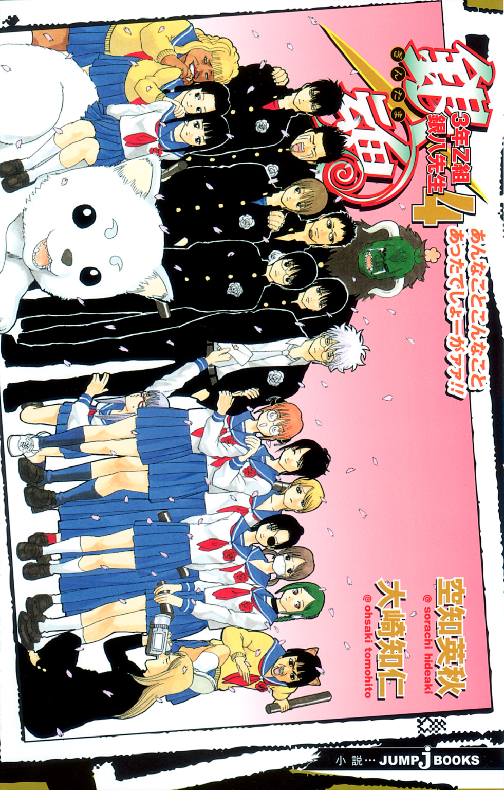
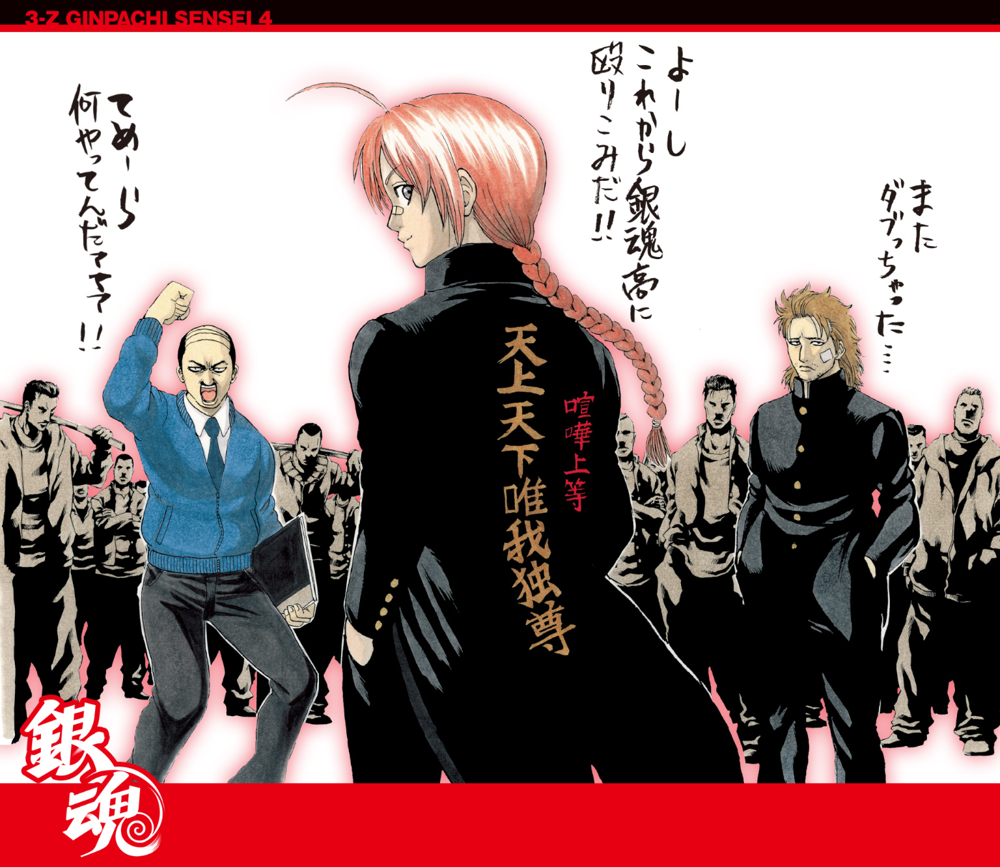
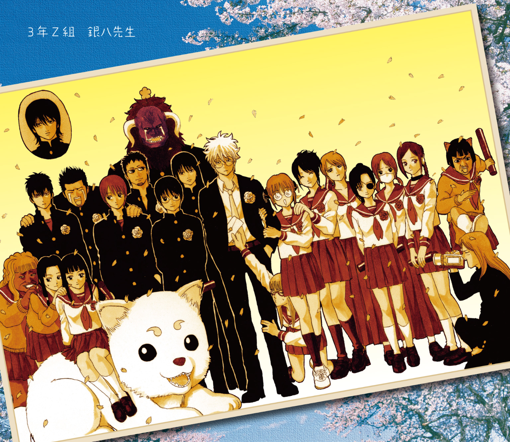
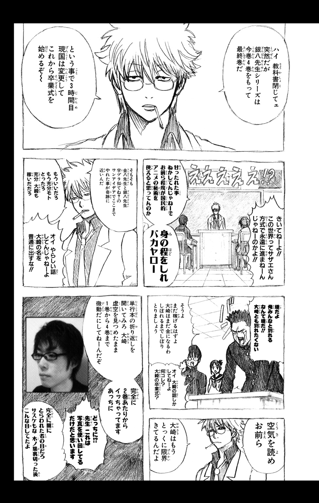
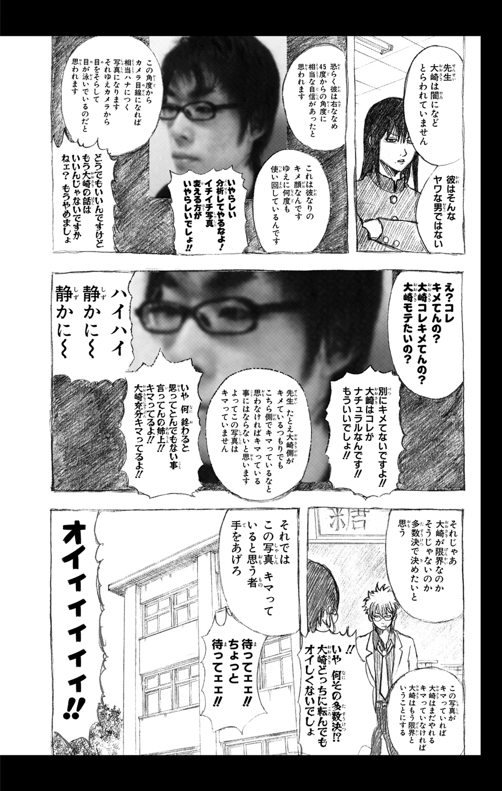
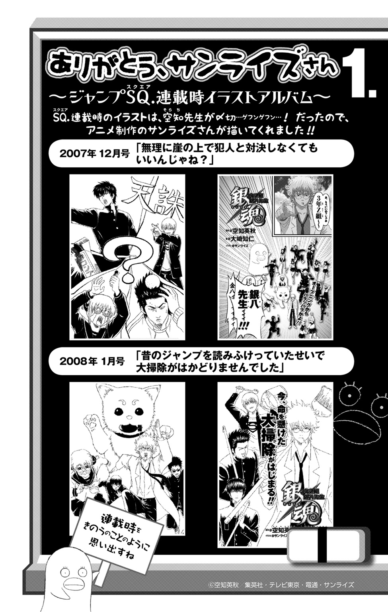
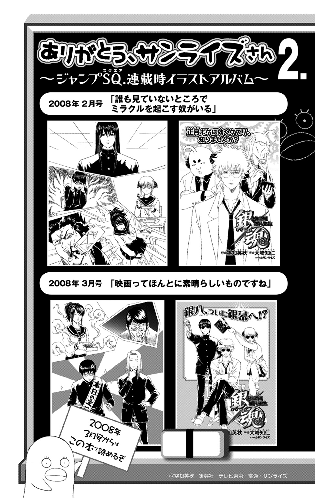
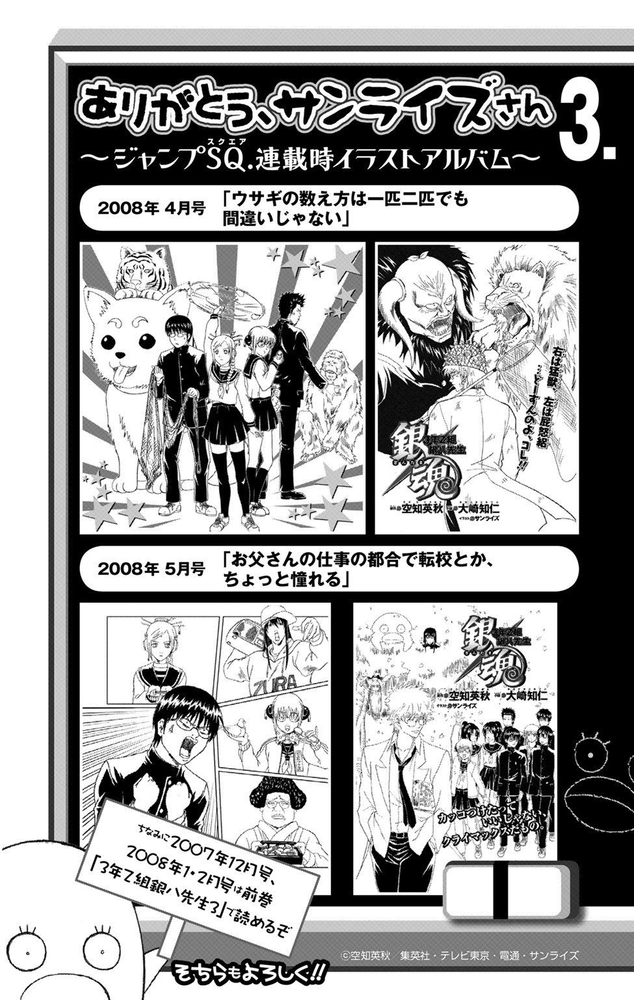
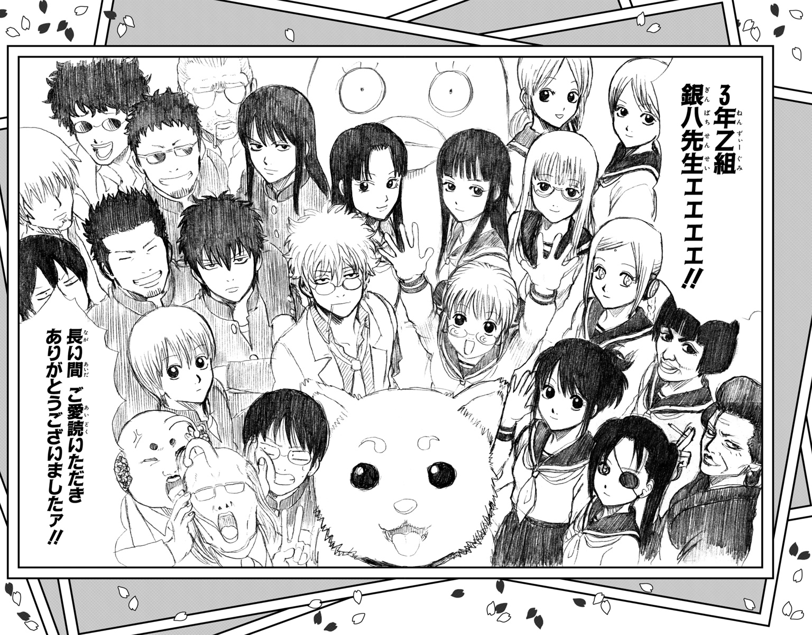

| 銀魂 3年Z組銀八先生 4 あんなことこんなことあったでしょーがァァ!! | |
| 空知英秋 & 大崎知仁 | |

この本は縦書きでレイアウトされています。
また、ご覧になる機種により、表示の差が認められることがあります。


PROFILE
坂田銀八
３年Ｚ組担任。
教師にあるまじき人物だが、なぜか生徒に一目おかれている。
志村新八
Ｚ組の生徒。地味な存在ではあるが、ツッコミ担当。
神楽
留学生。見た目はかわいいが、異常な食欲の持ち主。
志村 妙
新八の姉。楚々とした美人だが、性格は凶暴。
近藤 勲
風紀委員長。妙への強烈な恋心からストーカーと化している。
土方十四郎
鋭い双眸をした、風紀委員会の副委員長。
沖田総悟
甘いマスクのドＳ風紀委員。
桂 小太郎
もの静かな男子生徒。謎の生物エリザベスをペットにしている。
たま
機械じかけの転校生。首が落ちやすいのが欠点。
この作品はフィクションです。
実在の人物・団体・事件などはいっさい関係ありません。
魂のこもった青春は、そうたやすく滅んでしまうものではない。（カロッサ）
うーむ、もっちゃ、まさか四巻まで、もっちゃ、出るとはねえ、もっちゃ。（坂田銀八）
いや、なんか食ってるでしょアンタ！ 緊張感ゼロ？（志村新八）
＊
撮影スタッフの乗り込んだロケバスの中は緊張感に包まれていた。
かぶき町駅の近くにとめられたロケバスである。監督助手やカメラマン、メイク係等々、総勢二十名ほどのスタッフは皆、一様に険しい表情を浮かべている。そんな中、最後列の座席、ひときわ不機嫌そうに煙草を吹かし続ける男がいた。
ぴったりと七三にわけられた髪型はカタギのサラリーマン風だが、その下にある顔は違った。細い眉と鋭い目つき。顔を斜めに走る傷跡。剣吞な面構えは極道者のそれを思わせる。
男の名は黒駒勝男。職業はヤクザ、ではなく、「こちらの世界」では映画監督であった。
年齢は中年の域にさしかかっているが、勝男の監督としてのキャリアはさほど長くない。衝撃のデビュー作と評された、初の監督作品、『となりのペドロ、ニューメキシコに行く』を世に問うたのが五年前。以降、長編映画二本を監督し、特に去年発表した任俠アクション映画、『仁義なきジンギスカン鍋』は、カンス国際映画祭「ある視点ってどの視点？」部門にも正式に出品され、ファンの裾野を大きく広げる結果ともなった。
今一番勢いのある映像作家、と世間の注目度も増しつつある勝男。
だが、本人は決して現状に満足してはいなかった。
前作の成果でファンは増えたが、まだブレイクと称される状況には届いていない。
次だ。次の最新作で自分はさらに高みを目指す――。
その思いを期した最新作は、前作の任俠モノから一転、学園青春モノであった。とある高校を舞台に、生徒たちの恋や友情を真正面から描く、ストレートな青春ドラマである。ときに難解と評される自分の作風、それをガラリと変え、一気に監督としてメジャーな存在になりたい、という勝男の狙いがそこにはあった。
で、今日がその最新作の撮影初日。なのだが――。
「どないなっとんねん！」
スタッフが捧げ持つ灰皿に煙草をねじりつけ、勝男は怒鳴りちらすのだった。
「役者も来えへんわ、マネから連絡もないわて、どういうことやねん！」
そう。来ないのである。役者が。約束の時間を過ぎても。
現在、時刻は午後一時。本来なら正午には主演の役者二人が、所属事務所である集英プロのマネージャーに連れられて、このロケバスの撮影隊と合流するはずであった。
が、来ない。事務所のマネージャーから「遅れます」という連絡も来ない。こちらから電話しても留守電になるばかりである。
「前の仕事が押してるんですかねぇ......」
苦笑いでそう言った別のスタッフを、
「そんなわけあるかボケコラカス！」勝男は怒鳴りつける。「大体あの役者ども、そない忙しいスケジュールちゃうやろ。そやのに遅刻するて、ほんま腹立つわあ！」
「撮影スケジュールずらしまっか？」
恐る恐る言ったのは監督助手だったが、
「できるかボケェ！」とやはり勝男は一喝。「今回の撮影は予備日なんかないねん。最初に決めたスケジュール通り撮影せな間に合わんことぐらい、おのれも知っとるやろ！ かあーもう！ どないなっとんねん！」
勝男が七三のわけ目から血を噴き出さんばかりにシャウトしたときだ。
ロケバスの外にいたスタッフの一人が、車内に駆け込んできた。
「アニキ！ ちゃうわ、監督！」その手にはケータイが握られている。「集英プロのマネージャーさんから連絡入りましたで！」
「やっとかい！」怒りつつも、待ち侘びていた一報に勝男の声は弾んだ。「ほんで、いつ頃到着やて？」
「それが、役者が二人ともインフルエンザでダウンしたんで、今日は来られないそうですわ！」
「そうかインフルエンザか、そらしゃーない......ってドアホ！ もっかい言うわ、ドアホ！ 来られへんて、それどういうことやねん！」
「今日ここに来るのが無理っちゅう意味ですわ」
「わかっとるわ！ 丁寧に説明すな！」勝男は叱りつけると、そばの座席の背もたれを思い切り蹴りつけた。「なんやねん、あのクソ役者ども！ もうええ！ あの二人はクビや！ 使わへん！ 撮影初日に病欠て、プロ意識なさすぎやないけ！」
病欠――即クビ。勝男の容赦ない決断に、スタッフたちは一瞬引いたが、勝男にしてみれば当然の選択だった。自分はイケイケの監督。これぐらいのことをして、なにが悪い。
「あの......」とスタッフが言いにくそうに続ける。「もしキャストの変更が可能なら、集英プロの方でも一応代役を探してみてくれる言うてましたけど......」
「そんなもん期待できるかい！」勝男はイライラと吐き捨てる。「そもそも代役探すくらいなら、病欠するようなヘタレな役者寄越さんかったらええねん！」
「で、でも、どないするんでっか」すがるように言うのは監督助手だ。「役者がいいひんかったら、撮影できまへんで」
「わかっとるわ！」大声で返し、勝男は舌打ちする。「くそ、あの役者ども、大した俳優でもないくせに......、なんであいつらのせいで、わしがこんな迷惑――」
と、次の瞬間だった。
「待てよ......」
勝男の脳裏に一筋の光明が走った。もともと大した俳優でもないということは――、
「......むしろ代役の方がええんちゃうか？」
呟いた勝男に、スタッフが言う。
「ほな、監督。集英プロが代役見つけるまで待機――」
「集英プロに頼るつもりはないわ！」勝男は遮って言った。「代役はわしらが自前で調達するんや」
「自前で？」
「そうや。ロケ先で役者探すんや。最近の素人はカメラぐらいじゃ物怖じせえへんからな。『映画に出したる』言うたら、喜んで手ぇ挙げるはずや」
言いながら、勝男はそれがかなりの名案に思えてきた。中途半端なプロを使うくらいなら、荒削りでも勢いのある素人の方が、作品にも熱気が生まれるというものだ。ブレイクを期した作品を撮るには、むしろそのぐらい大胆なキャスティングをした方がよいかもしれない。
「ロケ先で緊急オーディションや！」
「あの、ロケ先というと......」
「銀魂高校に決まっとるやろ！」勝男は、撮影許可をもらっている高校の名を告げた。「そこでオーディションや！ おら、運転手！ さっさと出発せんかい！」
銀魂高校に着き、勝男がまず踏んだ段取りは、理事長に話を通すことだった。
生徒を役者として起用したい、ついてはそのオーディションもさせてほしい――。
「――まあ、急な話は承知なんでっけど、なんとかお力を貸してほしいんですわ」
理事長室の応接セット、勝男の向かいに腰かけた女理事長――お登勢は、話をきき終えると、煙草の煙をふうと吐き、思案顔になった。
「オーディション、か。......どうしたもんかね」
「わし――黒駒勝男の映画に出られるとなったら、生徒さんご本人も、ひいては学校さんも鼻高いんちゃいまっか？」
「理事長。監督の仰る通りだと思いますぞ」
言ったのは、理事長のうしろに立つハタ校長である。
「ロケ地に選ばれただけじゃなく、生徒が出演、それも主演したとなると、マスコミの注目度も増すでしょうからな」
「確かに」と校長の横に立つ教頭も頷く。「そうなると我が校の人気も、うなぎのぼりでしょうな」
「人気ねえ......」理事長は煙を吐く。「あんまり浮わついた理由でうちの学校を志望してもらっても困るんだけどね」
「てことは......」勝男がきく。「生徒さんをお借りするのはアカンちゅうことですか？」
「そうは言ってないよ。話をきく限り、アンタも困ってるみたいだしさ、協力はするよ。ただし――」
理事長は目を細めて続ける。
「過激な濡れ場だの暴力シーンだのはナシだよ。そういうシーンがあるなら、うちの生徒を使わせるわけにはいかないね」
「その点は心配いりませんわ。わしが撮ろうとしてるのは、正統派の青春映画ですねん。こけおどしの派手さや過激さで客呼ぼうとは思てません」
「だったらいいんだ」理事長は言うと、すっとソファから立ち上がり、校長に告げた。「そこのデスクに便箋が入ってるから、今の約束、一応念書もらっときな」
わかりました、と校長が頷くと、理事長はそのまま部屋を出て行こうとする。
「あの、理事長、どちらに？」
「トイレだよ。すぐに戻ってくる」
言い置き、理事長はドアの向こうに消えた。
理事長のデスクから便箋を取り出し、念書は教頭の手書きで作られた。銀魂高校の生徒を映画に出演させるが、過激な暴力シーンやラブシーンを演じさせることはない、という旨の念書――勝男はサインして、拇印を押した。
「理事長にも文面を確認してもらいますんで、少々お待ちを」
教頭がそう言ったとき、ちょうど理事長がトイレから戻ってきた。
「念書はできたかい？」尋ねる理事長は、なぜかセーラー服姿だ。
「いや、おかしい！」理事長を二度見したあと、勝男はソファの上でのけぞった。「なんでアンタ着替えてんねん！」
「このあとオーディションがあるんだろ？」
「出る気かいな！ や、無理でっせ、アンタに女子高生役は！」
「じゃあ女子大生の役はないのかい？」
「いや、それも無理やから！ なんやねんな、その『高校生は無理でも二十歳ぐらいならいけるでしょ』的な主張は！」
「ケチくさい男だねえ」理事長は勝男をにらむ。「無理かどうか、オーディションで判断すればいいだろ」
「や、ほんま堪忍してくれまへんか。今度ホラー映画撮るときに呼ばせてもらいますわ」
と言った直後、顔面をグーで殴られたが、勝男は耐えた。
渋々出演を諦め、念書に目を通す理事長に、鼻血を流しながらきく。
「それで、理事長はん。肝心のそのオーディションなんやけど、場所は貸してもらえるんでっか？」
「ああ、講堂を使うといいよ」理事長は言った。「体育館を貸してやりたいとこだけどね、あいにく去年の暮れに爆弾で吹っ飛んじまって、今建て直してる最中なんだ」
「爆弾......？」
勝男は眉根を寄せたが、理事長はそれ以上説明を加える気はないようだった。質問すれば、映画のネタになりそうな話でもきけるかもしれない、とは思ったが、今は時間が惜しかった。
「そ、そうでっか。ほな、講堂をお借りしまっさ」
勝男は言って、それからもう一つ、と人さし指を立てた。
「――オーディションなんでっけど、このあとすぐに始めさせてもらうのは可能でっか？」
今、時刻は午後一時半。つまりまだ授業中だ。しかし勝男としては、ただでさえ遅れが生じている撮影スケジュールのことを考えると、今すぐにでもオーディションを始めたいところなのだ。
「オーディションを希望する生徒さんだけ、授業を抜けさせるっちゅうことは可能でっか？」
勝男が重ねて問うと、校長が「うーむ」と唸り声を上げた。
「それはうまくないですなあ。放課後までオーディションを待ってもらうことはできないものですかな？」
「撮影時間に余裕があったら、それでもええんでっけど、そうも言うてられませんねん」
「だったら」という声は理事長。煙草を灰皿に消し、続ける。「一部の生徒じゃなく一つのクラス丸ごと、授業を中止にするっていうのはどうだい？」
「一つのクラスって......」校長がうろたえる。
「まさか理事長......」と教頭も同じようなリアクション。
「３Ｚに決まってるだろ」理事長はあっさりと言った。「あのクラスなら、一回や二回、授業がトンじまっても文句言う奴はいないはずだ。それにもともと勉強以外のことに力を発揮する連中なんだ、あいつらは」
「しかし理事長、彼奴らの場合、力を発揮というよりバカさを発揮――」
「監督さん、アンタ次第だよ」校長を遮り、理事長は勝男に告げた。「放課後までオーディションを待つか。それとも、３年Ｚ組の生徒だけでオーディションをするか、アンタが決めな」
「校長はんと教頭はんが、なんでアワアワなってんのかはわかりまへんけど......」七三のわけ目を一度整えてから、勝男はきっぱりと言った。「わしら、ほんまに急いでますねん。そやさかい、その３年Ｚ組の中から決めさせてもらいますわ」
＊
さて。
というわけで始まった緊急役者オーディション。
場所は講堂。長机がいくつか並べられ、中央に黒駒勝男が座り、彼の左右に監督助手やカメラマン、スタッフたちが座った。
そして勝男たちの前には、３Ｚの生徒がずらりと顔を揃えている。
生徒の多くがワクワクした顔つきになっていたが、担任の銀八だけは、生徒の集団から少し離れたところであぐらをかき、くわえ煙草でジャンプを読んでいた。
明らかに興味の薄そうな銀八に、いらだたしげな視線を一度投げたあと、勝男は席を立ち、ハンドマイクで話し始めた。
「――えー、映画監督の黒駒勝男いいます。ま、大体のところは担任のセンセからきいたと思いまっけど、今からオーディションさせてもらいますわ。映画のタイトルはこれ――」
と言って、勝男は手元の台本を掲げる。
「『カブキーヒルズ高校白書』」
勝男がそのタイトルを口にした途端、生徒の中から失笑の声が上がった。
ざわつく生徒をジロリとひとにらみしてから、勝男は言葉を継ぐ。
「――中身を一言で言うと、ストレートな青春ドラマですわ。ほな、時間もないことやし、早速オーディションに移らせてもらいます。これもきいてると思うけど、選ぶのは女子一名、男子一名、要は主役二人ですわ。ほな、まずは女子から行きましょか」
勝男たちと生徒たちの間には、パイプ椅子が一脚置かれている。面接される者が順に前に出てきてそこに座る、という方式でオーディションは進行した。
で、最初にその椅子に座ったのは、久々登場のハム子......もとい公子、てかハム子でいいか、ハム子であった。
「エントリーナンバー１番、公子でーす。よろしくお願いしまーす。えっと～、趣味は逆ナンとパラパラでーす、ってどんだけ～」
審査員席の勝男、まずは咳払いした。そして言う。
「なんちゅーか、ルックス見ただけで不合格の匂いがプンプンしてんねんけど......」
「なにそれ～、この監督、超失礼なんですけど～。も、どんだけ～」
「ま、しゃーない。一応アンタの演技力見させてもらおか」
勝男は言って、スタッフの一人に目配せした。スタッフはハム子のもとへ歩み寄り、紙を一枚手渡すと席に戻った。勝男が続ける。
「ほな、とりあえずそこに書いてあるセリフ言うてみてくれるか。立って、芝居もつけながらな」
「ちょっと、マジオーディションぽいんですけど～」
はしゃぐハム子を、「ええから早よう」と勝男は促す。
ハム子は立ち上がると、紙を手にして芝居に入った。
「『てゆーかぁ、こんなとこに呼び出して、マジごめんって感じなんだけど～、でもぉ、アタシ的にどーしてもぉ、カズヤ君に言いたいことがあったってゆーかぁ、ってどんだけ～』」
「スト――――ップ！」ハンドマイクを摑み、勝男は怒鳴る。「ちょ、君、なにしてんねん。勝手にセリフ変えたらあかんがな。書いてある通りに読んでくれな」
「はぁ？ 別に変えてないんですけど～」
「変えてるやないか。『てゆーかぁ』とか『アタシ的』とか『どんだけ』とか、台本に書いてないこと言うたらあかんで」
「これはアタシの口癖ってゆーかぁ、そこツッコまれてもムカつくって感じ～？ ってどんだけ～」
「いや、もうええわ！」勝男は怒鳴る。「君、どんだけ『どんだけ』って言うねん！ ほんで、今回の話が単行本に収録される頃、『どんだけ』が流行ってなかったらどうしてくれんねん！」
「そんなの関係ねぇ、って感じ～？」
「それもやめェ！ もうええ！ 君は不合格や！」
「ちょっと、なにこのオッサン、超ＫＹなんですけど～」
ハム子は元々丸い顔をさらに膨らませると、体育座りで待つ生徒の中に引き上げていく。
「ほな、次の生徒さん！」荒い息を静めて、勝男は言った。
「ヨロシクオネガイシマス」
とパイプ椅子に座ったのは、猫耳留学生のキャサリンであった。
「エントリーナンバー２番、キャサリンデース。好キナ漫画ハ『笑ゥせぇるすまん』デース」
カタコトの言葉遣いと濃い顔の女子高生に、勝男は特大の溜め息をつく。
「なんか君も相当危険な匂いが漂ってんねんけど......ま、ええわ。芝居見せてもらおか」
勝男に言われ、キャサリンは台本を手に立ち上がった。
「コンナトコニ呼ビダシテ、ゴメンネ。デモ、私、ドウシテモカズヤ君ニ伝エタイコトガアッタノ......」
セリフ回しはやはりカタコトだったが、ハム子のようにセリフのアレンジまではしていない。勝男は黙ってキャサリンの芝居を見つめる。
「......カズヤ君、思イキッテ言ウネ。私......私......」
アナタガ好キナノ！ その最後のキメ言葉――発すると同時に、キャサリンはセーラー服を脱ぎ捨て、トップレスになった。
「いや、スト―――――ップ！」勝男の絶叫が講堂に響き渡る。「なにしとんねん、お前は！」
「ドウデスカ監督、私ノ体当タリノ演技ハ」
「いや、やかましわ！ 体当たりすぎんねん！ ていうか、なんで脱ぐねん！ ほんで、なんでセーラー服の下、裸やねん！ よかったわ活字で！」
「トリアエズ、裸見ラレタ慰謝料ッテコトデ、一千万払ッテクダサイ」
「払えるか！ こっちが払ってほしいぐらいやボケコラカスゥ！ お前も不合格や！」
「チッ......月夜ノ晩バカリダト思ウナヨ」
「なんでそんな言葉知っとんねん！ ええから下がらんかい！」
キャサリンが下がり、次に進み出たのは丸眼鏡の神楽だった。
ハム子、キャサリンと来て、神楽。少なくとも顔立ちだけは愛らしい生徒が登場したことで、勝男の表情も「む」という感じに変わる。
椅子にかけ、神楽は名乗った。
「エントリーナンバー、１１５９番、グラ尻エリカです！ 好きな食べ物は酢昆布とタコ様ウィンナーです！ こんだけ～！」
「や、もう......いちいちつっこむん、やめるわ。ほな早速やけど芝居見せてくれるか」
勝男に促され、神楽は椅子から立ち上がった。芝居に入る。
「こんなとこに呼び出して、ごめんね......」軽くうつむき、神楽はモジモジした仕草を見せる。「でも、私、どうしてもカズヤ君に伝えたいことがあったの。カズヤ君、思い切って言うね......」
自己紹介ではボケ倒した神楽だが、ここまではなかなかいい調子である。勝男もじっと神楽の芝居を見つめる。と、不意に神楽が口調を変えた。
「てめー、口くせーんだヨ」
「え......？」
「くさすぎて鼻曲がりそうなんだヨ」
「や......ちょ、待ちいな」
「足もくせーしヨ、髪型もダセーんだヨ」
「ちょ、君、なに言うてんの？ セリフ変えたらあかんて――」
「大体髪型と顔が合ってねーんだヨ！ 七三わけなのに顔に傷があるって変だろーが、あんコルァ！」
「いや、それわしのことやないかい！ なんでわしが罵倒されてんねん！」
椅子を蹴って立ち上がった勝男に、神楽はけろりとした顔で言う。
「ツンデレでやってみたアル」
「やらんでええねん！ ていうか、ほぼツンツンやないか今の！ わし蜂の巣やないか！ あかん！ お前も不合格！」
「ケッ、お高くとまりやがってよぅ」
神楽は舌打ちして、クラスメイトの中に戻っていく。
「なんやねん、このクラスは......。ろくな奴、いてへんやんけ......」
勝男が頭を抱えて、ぼやいたときだ。
「監督、あの子なんかどうです？」
監督助手が小声で囁いてきた。
彼が指さすのは、髪をうしろで束ねた、清楚な顔立ちの女子生徒――志村妙だった。
妙の顔に視線を注ぎ、勝男は「ほう」と小さく声を上げた。
「なかなかええやないか......」
監督助手にそう囁き返すと、立ち上がって志村妙に声をかける。
「あー、そこの、髪束ねてる君」
「エ？ マタ私デスカー？」
「いや、お前ちゃうわ！」立ち上がりかけたキャサリンに、勝男は電光石火のツッコミ。「第一お前、髪束ねてへんやないか。あと、いつまで裸やねん！ さっさと服着んかい！」
「ハックション。ア、風邪引イタンデ、治療費一千万ヨコセ」
「やかましわ！ おのれ、撮影終わったらガチで喧嘩したるからな！」
トップレス・キャサリンを座らせ、勝男は改めて妙に言った。
「そこの君や。えーと、名前はなんていうんや？」
「志村妙です。ええ？ 私、演技なんて自信なーい」
と言いつつも、その表情には、「ふふ、指名されて当然よ」みたいな色がほんのり見え隠れしている。前に出てきた妙に、勝男は告げた。
「ほな、他の子がやったみたいに、その台本で芝居してみてくれるか」
妙はもう一度「自信なーい」と言いながら、パイプ椅子に置かれた台本を手にして芝居に入った。
「こんなとこに呼び出して、ごめんね......。でも、私、どうしてもカズヤ君に伝えたいことがあったの」
妙の芝居――声の抑揚、視線の配り方、どれもうまかった。さすが本編でお水の仕事をしているだけのことはある。なんというか、相手の心のすき間にスルリと滑り込んでくるような巧さがあった。
「......カズヤ君、思い切って言うね。私......私......」
ええんちゃいますか、この子、と囁いてきた監督助手に、勝男は正面を向いたまま頷く。
セリフにタメを作ったあと、妙は息を吸い込んだ。
「あなたが好――」
その瞬間、
「ちょ―――っと待ったァァァァ！」
誰かの大声が妙のセリフを遮った。
なんやなんや？ と勝男たちが顔を見合わせていると、声の主が生徒の集団から進み出てきた。
妙のそばに立ったのは二人の女子生徒――双子の姉妹、阿音と百音だった。
阿音は腕組みをして挑戦的に妙をにらみ、その傍らで百音はリコーダーを手にしてぼんやりと立っている。
「これ以上、そんな拙い演技を見せないでくれるかしら？」阿音はフンと鼻を鳴らす。「これは学芸会のお稽古じゃないのよ」
「あら、阿音ちゃん。結構な言い草ですこと」上品な声音で返しつつも、妙の目の奥には獣の光が宿っている。
決して友好的とは言えない、この二人の関係。妙の演技に勝男たちが身を乗り出したことで、阿音の妙への敵意が首をもたげた......ということなのだが、勝男には無論そんな事情はわからない。
「ちょっと、君」と勝男は阿音に声をかける。「邪魔したらあかんがな。まだ審査の途中やねんから」
「監督、こんな女を使うのはよした方がいいと思いますよ。映画の品位が下がるんじゃないかしら」
阿音のその言葉で妙のこめかみに血管が浮く。
「映画の品位だなんて、そんなものあなたみたいなアバズレにわかるのかしら」と妙。
「あなたみたいな腹黒い女にアバズレなんて言われたくないわね」と阿音。
「あら、阿音ちゃん、あなたなんて、腹以外のとこも真っ黒じゃないの」
「真っ黒って、どこのこと言ってるのかしら」
「やめておくわ、少年誌だから」
「あら、言ってくれてもいいのよ」
「そう。じゃあ言うわ。あなたの――」
「ちょっとちょっとアカンて！ いろんな意味でもうストップや！」
メンチを切り合う二人に、勝男は慌てて割って入る。が、闘争心に火のついた二人、もう止まらない。内容はともかく、口調だけはかろうじて穏やかだった言い合いも、やがては、ボケコラカスゲス死ねファッキン、みたいな感じに変わり、とうとう、
「うがあああ！」
咆哮とともに取っ組み合いのキャットファイトが勃発してしまった。
「だーもう、あかんて！ ストップやストップ！」
勝男は二人のもとへ駆け寄りながら百音にも声をかける。
「ちょ、そこの君も！ ボサッと見てんと、喧嘩止めえな！」
しかし、勝男に言われた百音、そこでなぜかおもむろにリコーダーを構え、チャゲ＆飛鳥の『ＹＡＨ ＹＡＨ ＹＡＨ』を奏で始める。
「いや、煽るなァァ！ 殴りに行かせてどうすんねん！」
誰か止めてェェ、という勝男の悲痛な声に、ようやくクラスメイトの何人かが反応し、取っ組み合う二人を引き離した。
「ほんまにもう、なんちゅう凶暴な子らや。――とりあえず、喧嘩した君ら二人と笛の子は不合格や」
肩で息をしながら勝男が言うと、喧嘩の仲裁に入ったクラスメイトの一人が妙に歩み寄った。
「妙ちゃん、残念だったな」
そう言葉をかけるのは、眼帯のワケアリ美少女、九兵衛である。その可愛らしい顔立ちに、早速勝男が「お」と反応する。
「ああ、君。よかったら次は君の芝居見せてくれへんか？」
言って、ごく自然に九兵衛の肩に手を置いた勝男だったが、
「うがあああ！」
当然のことながらブン投げられてしまうよね。
＊
「とりあえず女子はあと回しや！ 先に男子の役者を決めることにする！」
九兵衛にブン投げられ、講堂の壁に激突した勝男――絆創膏と湿布で応急手当をしたあと、ハンドマイクを手にそう怒鳴った。
で、始まった男子生徒のオーディション。始めるにあたって勝男はこんなことを言い出した。
「――女子のオーディションしてみてわかったんやが、どうも君らは自分の色を出す癖があるみたいやな。......そういうことなら、こっちもやり方を変えさせてもらうわ」
そう前置きし、勝男は続ける。
「さっきはこっちが指定したセリフで芝居してもろたが、今度はそういうことはせえへん。こっちから出すのは簡単な設定とシチュエーションだけにする。それにもとづいて、君らなりの色を出して芝居してみてくれ。そっちの方がほんまの実力がわかりそうやしな。――ほな、設定とシチュエーション言うで。
場所は美術室や。ほんで君らは美術部の生徒や。時間は放課後。そこに君は意中の女子生徒を呼び出す。現れたその子に、君はプレゼントを渡すんや。プレゼントは、その子の肖像画や。それを渡して、君はその子に愛を告白する――と、こういう感じや。ほな、男子、順番に出てきてやってくれるか」
説明を終え、勝男が着席すると、トップバッターの生徒が前に出た。
「よろしくお願いします」と一礼し、パイプ椅子にかけたのは新八である。「志村新八と申します。好きなアイドルはお通ちゃんですノート」
「デ、デスノート？」お通語に一瞬面食らいつつも、「ま、ええわ。ほな、今言うた要領でやってくれるか？」
「セリフとかは僕の自由でいいんですよね？」
「かまへん」
勝男が頷いたのを見て、新八は芝居に入った。
イーゼルに向かい、絵筆を動かす新八。無論小道具はないので、全てを動きだけで表現している。美術室。そこへ誰かがやってきた気配。振り返り、新八はセリフを口にした。
「......あ、来てくれたんだ。ありがとう。うん、そこ座って。や、実は君に渡したいものがあってさ」
なかなか達者なアドリブである。芝居にも、ぎこちなさはない。
「......これ、うまく描けてるかどうかわかんないけど......君にあげようと思って。あ、似てる？ ありがとう。......あのさ、ずっと前から言おうと思ってたんだけど、僕と......付き合ってくれませんか？」
そこで間を置いたあと、新八は勝男の方に顔を向けた。
「――以上です。どうでしょうか？」
「地味やな。ほな、次の生徒」
「いや、終わりですか！」新八は勝男に嚙みつく。「コメント一言だけ？ もっとあるでしょ、感想とか！」
「すまんな。今回のわしの映画、派手さはないけど地味すぎてもあかんねん。ちゅーわけで、君は不合格や」
そんなァ、と新八がスゴスゴと下がったあと、二番手の生徒が前に出てきた。
「よろしくお願いしまっす！ 近藤勲です！ 好きなお妙さんは、お妙さんです！」
やたらと声のでかいゴリラである。近藤のワイルドすぎる佇まいと、バカっぽい自己紹介に、勝男の顔には早くも不安の影がよぎったが、
「ほな、まあ、見せてもらおか」
「はい！ やらせてもらいます！」
威勢よく返事をし、近藤は芝居へと入った。
「いやあ、ごめんね、お妙さん。美ずつ室なんかに来てもらって――あ、すいません、もう一回やらせてください！」
びじゅつしつ、を嚙んだ近藤は、再び仕切り直して芝居に入った。
「いやあ、ごめんね、お妙さん。美ずつ室なんか――くそっ、すいません、もう一回やります。いやあ、ごめんね、お妙さん、美ずつ室......えいくそっ。美ずつ室、びずつしつ、あれ？ び、ず、つ、し、つ......びずずしづ！ び！ ず！」
「いや、しつこいねん！」たまらず勝男は声を上げる。「君、何回同じとこで嚙むねん。美術室ぐらい言えるやろ普通に」
「すいません！ もっかいチャンスください！」
「まあ、ええけど......今度こそ頼むで」
「あざっす！ ――いやあ、ごめんね、お妙さん。保健室なんかに呼び出して」
「変わっとるやないか！」という勝男のツッコミと、
「どこ呼び出しとんじゃァァ！」と、妙が近藤の顔面めがけて体育館シューズを投げるのが同時だった。
近藤が鼻血を流して床に倒れるのと、「不合格！」と勝男が言うところも綺麗に同時。
そこへ、「委員長！」と駆けつけたのが、土方と沖田だった。
鼻血ゴリラに、「大丈夫か、委員長」と声をかける土方。そのクールなフェイスに、勝男のアンテナがまたぴくりと反応した。
「おい、君。なかなかエエ面構えやないか。次は君の芝居見せてくれへんか」
「俺すか？」土方は片眉を上げる。「や、俺はいいすよ。映画とか、ガラじゃねえし」
「そう言わんと、スターになれるチャンスやで」勝男が言うのに続けて、
「いやぁ、俺も見たいですねェ、土方さんの芝居」沖田がけしかけるように言う。
「ガラじゃねえっつってんだろ」
「あら？ ビビってんですか？」
と、にたりと笑う沖田。その嘲笑がいつも土方という男に火をつける。
「ビビってるわけねーだろ」
「じゃ、やってくださいよ」
「......上等だ。たかが芝居じゃねーか」
とまあ、お決まりのように乗せられてしまう土方なのである。
勝男に「ほな、頼むわ」と声をかけられ、土方はコホンと咳を一つしてから芝居に入った。
「......えー、悪かったどすどす、放課後呼び出してどすどす」
「いや、語尾ィィ！」瞬殺で勝男のツッコミ。「なんやねん、その語尾！ 不意打ちすぎてびっくりしてもーたわ！」
「や、アンタ、自分の色出せっつってたじゃないすか」
「いや、言うたけども！ そんな語尾の奴、普通いいひんやん！」
普通の喋り方でええねん、勝男にそう言われ、土方は再トライする。
「......あー、えっと、悪かったな、放課後に呼び出してよ。ちっとおめーに渡してーもんがあってな」
「そうそう、ええ感じやで」
「この絵、うまく描けたから、おめーにやるよ。あ、まだあんま触んねー方がいいぞ、マヨネーズ乾いてねーから」
「いや、ダウトォォ！」勝男は土方に指を突きつける。「ここでダウトや！ え、どういうこと？ 間違えて絵にマヨネーズつけてしもたってことか？ そういうことか？」
「つーか、絵の具の代わりにマヨネーズを使ったって設定なんすけど」
「いや、無理やろ！ 白しかないやん！ もしくは薄黄色しかないやん！ 肖像画なんか描けへんやん！ だーもう、惜しいけど――」
不合格！ となってしまうわけであった。
「んだよ。俺ァ、別にやりたくなかったのによ」
舌打ちして監督をにらむ土方に、
「残念でしたねィ、土方さん」
沖田が茶化すように言う。と、今度はその沖田に、
「ほな、次はそこの茶髪の子や！ 君の演技力見せてもらおか！」と勝男。その口調もなんだかヤケクソになりつつある。
指名された沖田は、なんのプレッシャーも感じていない様子で、
「あ、俺ですかィ。いいすよ」と即了承。
「ほな、頼むわ」
勝男が頷いて合図を送ると、沖田はやおらその場に正座して、口を開いた。
「えー、昔からそそっかしい奴ってのはどこにでもいるもんでして......『おい熊公！』『なんでィ、こんな時分に』」
「いや、これもダウトォォ！」勝男は椅子から滑り落ちる。「なんで落語やねん！ びっくりするわ！」
「俺、落語好きなんでさァ。一度披露したくてねェ」
「いや、今披露せんでええやろ。そもそも美術室で告白するシチュエーション、完全に無視しとるやないけ」
「『あーあ、それにしても美術室なんかで告白するもんじゃあねえな。見ろよ、服に濃い絵の具がついちまった』『あー、それがほんとの色恋（色濃い）ってやつだよ』」沖田はゆっくりと一礼。
「いや、サゲんな！ うまいけど、なんか腹立つわ！」
お前も不合格！ と沖田を下がらせると、
「ほんまにもう、どないなっとんねん、このクラスは！ ろくな奴いてへんやないか！」
生徒にきこえるのも構わず、勝男は乱暴に脚を組んだ。
そこへ出てきた五人目の生徒が、こいつ。
「シリアルナンバー、Ｋの４８８３番、桂小太郎です。今ハマってる『んまい棒』の味は、ソーダフロート味です」
「......細かいボケにはもうつっこまへんで」疲れたように勝男は言った。「もう芝居さえちゃんとしてくれたらええわ」
「はい。じゃ、やらせてもらいます」桂は真顔で頷くと、声を張り上げた。「もしも高橋名人がマクドナルドの店員だったら！」
「はい、不合格！」
「あ、毛利名人の方がよかったですか？」
「不合格や言うてるやろ！ 下がれ！」
桂が下がり、次に出てきたのがこいつ。
『エリザベスです』
「不合格！ 人間募集中や！」
『チッ』と書かれたボードを持ったエリザベスが下がり、オーディションはこの辺りからだんだん流れ作業の様相を呈してくる。
「長谷川泰三です。こないだバイト一つ、クビになっちまいましたんで、なんか紹介してください」
「不合格！」
「東城歩です。歌います。♪あんなものや、そんなものや、こんなものまでロフトという店でゲッツ～」
「不合格！」
「屁怒絽と申します。よろしくお願いします」
「不ご......あ、えーと、ま、誠に恐縮ではございますが、不合格にさせていただきたく存じます」
「志村新ぱ......」
「地味！ 再チャレンジすな！ 不合格！」
「桂小太郎です。まぶたを裏返します！」
「いや、おったけども、そんな奴！ 不合格！」
不合格！ 不合格！ 不合格！ 不愉快！ 不合格――
＊
「不合格！ ってエエ加減にせえよボケコラボケェェェ！」
とうとう勘忍袋の緒が切れ、勝男が目の前の長机を蹴り倒してしまうのも、まあ無理もないことである。
「なんやねん、お前らは！ ここはハローワークでもないし、一発芸コーナーでもないねん！ 映画のオーディションしとんねん！ 芝居せえ言うてるやろ芝居！」
「東城歩と！」
「近藤勲です！ 二人でローション相撲します！」
「話の流れ無視すな！ 大体なんの勝算があってローション相撲やねん！ ええから下がれ！」
ロフトバカとバカゴリラを退け、勝男はブチ切れたまま続ける。
「どいつもこいつも、オーディションなめくさりやがって！ ほんまお前ら、この学校でどういう教育――」
と、そこでハッとする。
クラス総出で傍若無人のやりたい放題。面接官という立場で勝男はつっこみまくっていたが、本来ならばこの狂騒状態に収拾をつけるのは、クラス担任の役目のはずだ。
「おい、アンタ！」
と勝男が指さした相手――坂田銀八は、教え子から離れた場所であぐらをかき、まだジャンプを読んでいる。
「知らん顔して漫画読んでる場合ちゃうで！ さっきからアンタの生徒が無茶苦茶しとんねんぞ。注意せなあかんやろ！」
指摘された銀八は、しかしジャンプから顔を上げず、ページを一枚めくり、クスッと笑う。
「いや、熟読しすぎや！ おいコラ！ 担任！ わしの話きかんかい！」
「え、あ？」とようやく顔を上げる銀八。「なに？ 俺に話しかけてる？」
「九行前から話しかけとるわ！ ほんでよう考えたらお前、今のが今日の第一声やないか。どんだけジャンプに没頭すんねん」
「いやー、今週の『メッセージ ｆｒｏｍ ジャンプＫＩＤＳ!!』のコメント、よかったわ」
「巻末やないか！ 隅々まで読んでエライねってドアホ！」
そもそもアンタがな、と勝男が続けようとしたとき、
「監督！」とスタッフの一人が駆け寄ってきた。
「たった今、集英プロから電話がありまして、女優の方は代役が見つかったそうですわ！ 今ここに向かってるそうです！」
「ほんまか！」銀八にクレームをつけていたことも忘れ、勝男は顔を輝かせた。
よかった、と心底ホッとする。
ほんの一時間前は、中途半端なプロより素人、などと考えていたが、オーディションがここまで不調だと、やはりプロの役者を回してもらえるのはありがたかった。
スタッフの報告が続く。
「代役の女優さんは、まもなくここに到着するそうですわ。ただ男の方はどうしても都合つかへんかったと......」
「しゃーない。女優が来てくれるだけでも御の字や」
こうなったら男の方も、いろんなプロダクションに電話しまくって、駆け出しの新人でもいいから回してもらおう。というより、女優の方も最初からそうしておけばよかったのだ。勝男が考えをまとめていると、女性の声がきこえた。
「失礼します。黒駒監督の現場はこちらでしょうか？」
振り返ると、セーラー服の女子生徒が一人立っていた。目のパッチリした、美形といってもよい顔立ち。だが、どことなく無機質な印象を受ける顔でもある。
勝男の顔を知っていたのだろう、女子生徒はそばに立って名乗った。
「集英プロから参りました、新人女優のたまと申します」
「あー、君か」
と返しながら、勝男はたまの全身を素早くチェックする。ルックスはまあ問題なく、立ち姿も美しい。落ち着いた喋り方にも好感がもてた。
「わしが映画監督の黒駒勝男や。まあ、急な代役とはいえ、主役や。せいぜい気張ってや」
勝男の言葉に、
「はい。私、映画のお仕事は初めてですが、精一杯つとめさせていただきます」
たまは丁寧な口調で返し、深々と頭を下げた。と、その瞬間、ゴトリとたまの首が床に落ちた。
「ええええええ？」
勝男のみならず、その場にいる全員が目を剝く中、当のたま――床の首の方が冷静に言う。
「あ、驚かせて申し訳ございません。どうやら首の接続が甘かったようです」
「あ、や、ちょ、接続が甘かったて、君――」
「監督はご存知なかったでしょうか。私、本邦初の機械女優なのです」
「いや、ご存知なかったでしょうかって、そんなもんご存知ないわ！ ほんで本邦初て、たぶん本邦最後やろコレ！」
「お褒めいただき光栄です」
「褒めてへんわ！ びびっとんねん！」
「あの、もしよろしければ、私の首を元に戻していただけないでしょうか？」
よろしいもなにもない。これ以上生首と会話する気もなかったので、勝男はスタッフに「おい」と声をかける。スタッフがおっかなびっくりたまの首を拾い上げ、胴体に戻すと、
「ありがとうございます」とたま。「それで、私はまずなにをさせていただいたらよろしいでしょうか？」
勝男は露骨に舌打ちすると、溜め息をついてから答えた。
「なんもせんでええ」
「......なんもせんでええ、というのはどういうことでしょう？」
「そのまんまの意味や」冷たく勝男は告げた。「お前はクビや。使わへん」
たまは目を瞬かせ、返答に詰まった。
スタッフの一人が遠慮がちに言う。
「あの、監督、使わへんというと......その、別の代役を探すっちゅう意味でしょうか？」
「当たり前やろ！ こんなアラレちゃんみたいな女、映画で使えるわけないやろ！ ほんま集英プロもなに考えてんねん！」
喚きながら、怒りがどんどん膨れ上がっていく。集英プロだけではない、３年Ｚ組の連中もだ。どいつもこいつも自分に迷惑ばかりかけてくる。
「代役の手配や！」勝男はスタッフに命じた。「集英プロ以外のプロダクションに片っ端から電話せえ！ 女優と、あと男優もじゃ！ 今すぐ現場に来られる役者見つけてこい！ 首もとれへん、アホな一発芸もせえへん、まともな役者やぞ！」
どやしつけられたスタッフたちが一斉にケータイを取り出すと、次に勝男は３Ｚの面々に告げた。
「ちゅーわけで、３年Ｚ組の皆さん。すんませんが、こちらの事情が変わりましたんでオーディションは中止にさせてもらいますわ」
ごくろーさんでした、とおざなりに頭を下げた勝男に、３Ｚの面々から早速非難の声が上がり始める。
え～、なにそれ～、んだよ、さんざん文句つけといてよー、脱イダダケ損ジャネーカ、あーあ、白けたぜ――。
新人のたまを速攻でクビにしたことも、印象の悪さに拍車をかけたのかもしれない。
ゾロゾロと講堂をあとにする生徒たちに、しかし勝男はケッと心の中で吐き捨てる。なにをブーブー言うとんねん、天才監督、黒駒勝男のオーディション受けられただけでも感謝せい――。
と、そこへ、さっきキャットファイトを演じた志村妙が微笑を浮かべて近づいてきた。
「監督、オーディションお疲れ様でした。よかったらコレ食べてください」
と、彼女が差し出すのはタッパーと割り箸である。みなさんもどーぞ、と言って、妙は手際よく撮影スタッフにも箸を配っていく。
クラスメイトがブーイングとともに立ち去る中、自分は監督とスタッフに差し入れ――端役でもいいから私を使ってほしいというアピールなのだろうか。正直腹は空いていなかったし、それ以前にタッパーの中身だ。真っ黒に炭化したなにか。こんなもの、お世辞にも料理とは呼べない。よくもまあ、ここまでグロテスクな代物を微笑みながら差し出せるものだ。
が、無下に断るのも大人げない気はするし、それにだ、よくよく考えてみれば、この生徒の演技力は――途中でクラスメイトの妨害に遭うまでは――なかなかのものではなかったか。となると、あるいは本当に端役として起用する可能性もあるかもしれない、ならば、形だけでも箸をつけておく方が、あとあとの摩擦も少ないだろう。
勝男は、しゃあない、と心で呟いた。周囲のスタッフに目顔で、一口だけや、と伝える。わしも食うから、お前らも食え。
スタッフも、わかりました、と目顔で返してきた。
そして、彼らは割り箸を割った――。
＊
「姉上......」溜め息をつき、新八は額に手をやるのだった。「何度同じ過ちを繰り返すんですか」
講堂には、気を失った勝男たちが折り重なるようにして倒れている。妙の手による暗黒物質を食した結果であった。
オーディション中止を言い渡されたあと、一旦は講堂を出た新八たちだったが、
――お口の中がナイトメアやァァァ！
という勝男の叫び声をきいて駆け戻ってきたのである。そしてこの惨状――。
「悪気はなかったのよ」妙が朗らかな声で言った。「私はほんとに『お疲れ様』の気持ちをこめて、差し入れしたんだから」
「お疲れ様って、コレすでに疲れ以上のものを負ってしまってるじゃないですか。どう調理したらこうなるんですか」
「お砂糖入れすぎちゃったかしら」
「いや、そんな可愛い理由じゃないでしょ。明らかにこれは殺意という名のスパイスを――」
だが最後まで言えずに妙のパンチを浴びてしまう。
「しかし災難だな」呟いたのは銀八だった。「一人残らず全滅とはよ。どうやらこの七三わけの映画はお蔵入りみてーだな」
そのとき、倒れていた勝男がピクリと手を動かした。「う、あ......」というかすかな声も。
「おっと、まだ息があったか」
「先生、別に死んではいませんから」と新八。
銀八は勝男のそばにしゃがみ込んだ。
「どーした？ おかわり欲しいのか？」
「なわけないでしょ。ほんとに死にますよ」
言った直後、新八はまた妙に殴られる。
瀕死の勝男が、掠れた声でうわ言をもらす。
「映画......、わしの、映画......、ブレイクせな、あかんのに......」
そこで声は途切れ、ガクリと勝男は気を失った。
「やれやれ......」と銀八はかぶりを振る。「ずいぶんと賭けてたみてーだな、この映画に」
「私は......」
不意に違う方向から声がした。
「私はどうすればよいのでしょう......」
声の主は、折り重なって倒れる撮影隊から少し離れたところにいた。たまだった。勝男にクビを宣告されたあとも、立ち去らずにその場に残っていたようだ。
「プロダクションに言われてここに来ましたが、監督は私を使わないと言いました。でも、そのあとの指示がありません。私はこれからどうすればよいのでしょう。プロダクションになんと報告すればよいのでしょう......」
抑揚のない口調と乏しい表情。だが、そのせいでかえって、たまの顔には悲哀が漂っていた。
なにかかけてやれる言葉はないか、新八が思案しかけたとき、
「しょーがねえな」銀八が煙草に火をつけた。「俺が撮ってやるか、映画」
「先生......！」
新八が声を上げ、クラスのみんなも銀八を見つめる。
「たまっつったっけ？」銀八はくわえ煙草で、たまに言った。「新しい監督は俺だ。おめーは俺の言うことをきけ。つーわけで、おめーは主役続行」
「先生、本気ですか！」
「本気だよ。ま、悪気はなかったにせよ、うちのクラスの差し入れでこいつらは全滅しちまったんだ。俺が代わりに監督することで償いになるんなら、してやるよ。こうして女優さんもいることだしな」
「や、でも――」と言いかけた新八の声に、
「わかりました」と、たまの声が重なる。「あなた様が――銀八様が新しい監督なのですね。よろしくお願いします」
役目と居場所を得たたまは、気のせいだろうか、晴れやかな顔に見えた。
「でも先生、ほんとに撮れるんですか、映画なんて」
「なんとかなるだろ。台本もあるし、機材も揃ってるんだし。３Ｚ総動員すりゃ、スタッフもエキストラも十分に足りるはずだ」
「あ、でも、そうだ！」新八はそこで肝心なことに気づく。「もう一人の主演はどうするんですか。女優さんの代役はたまさんがいるにしても、男子の主役はまだ決まってないんですよ」
「おいおい、なに情けねーこと言ってんだ、ぱっつぁん。俺ぁ、お前のいぶし銀の演技に期待してんだぜ」
「......は？」新八は目をパチクリ。「あの、言ってる意味がよく――」
「おめーだよ」銀八は言って、煙を吐いた。「主演女優はたま。主演男優は、おめーだ新八」
「僕ですか！ や、でも......！」
監督は銀八。相手役は首のとれる機械女優。スタッフとエキストラは３Ｚの面々。
新八は激しくかぶりを振った。
「嫌ですよ！ こんな不吉な予感しかしない映画の主役なんて！」
「ツベコベ言うんじゃねーよ。監督の言うことがきけねーのか」
「だけど――」
新八がなおも抵抗しかけたとき、そばにスッと歩み寄ってきた者がいた。
「新八くん、君にこれを進呈する。ロフトで買ったものだ」
東城歩がそう言って、新八に『本日の主役』と書かれたパーティー用のタスキをかけた。
「いや、嬉しくねェェェ！」
＊
坂田銀八監督率いる坂田組――その実態はただの映画素人集団なのだが、とにもかくにもクランクインという運びになった。
でもって、「なんとかなるだろ」と撮影前に嘯いていた銀八監督であるが、実際に撮影が始まると、本当に「なんとかして」しまうのだった。いや「なんとかする」というよりは「なんでもやる」という感じだろうか。もっと言うなら「やりたいようにやる」、もっともっと言うなら「やりたい放題やる」という感じか。
なんにせよ銀八は、映画という新しいオモチャを与えられた子どものように、自由すぎるほど自由なやり方で撮影を進めていったのである。
サングラスをかけ、ディレクターズチェアに腰かけ、「アクション！」と「カット！」を繰り返し、その過程で、
「このシーン、たるいな。トバしてもよくね？」
「ここで新キャラ出しとくか」
などと言いながら、思いつきで台本もグイグイ変えていく。
そして、その撮影作業のピッチも超絶的な速さであった。映画の撮影現場では、五分のシーンを丸一日かけて撮るようなことも珍しくない。ところが銀八の場合、五分のシーンをほとんど五分で撮ってしまうのである。
とにかく、あらゆる常識の通用しない坂田組の現場。撮影は快調、つーか怪調？ に進み、クランクインの三時間後にクランクアップしてしまったのである。クレージーすぎる所業である。
「よーし、以上で全てのシーン、撮影終了だ！ お疲れしたー！」
お疲れしたー！ と口々に言い合う３Ｚメンバー。猿飛さっちゃんが銀八監督に花束を手渡すのを見ながら、主演の一人である新八はにっこりと微笑み、心の中でこう呟いていた。
――し～らね。
＊
暗い試写室、スクリーンの中で、③、②、①、とカウントが始まった――。
☆
パチオ（新八）は食パンをくわえて走っている。
「やばい、遅刻しちゃうよ！」
道の角を曲がった途端、パチオは女の子とぶつかってしまう。女の子はタマミ（たま）。
ぶつかったせいで、タマミの手からカバンが落ち、教科書が道に散らばってしまう。
「ご、ごめん！ 大丈夫だった？」
「うん、大丈夫よ」
答えるタマミの首は、教科書と一緒に地面に落ちている。
「いや、あんまり大丈夫そうに見えないんだけど......」
「ほんとに平気よ。気にしないで」
と言いながらタマミの首は坂道をコロコロと転がっていく。
坂道の下でその首を拾い上げたのは、長髪の男子生徒だった。
「ラグビー部のヅラ山くん！」
「ヅラ山じゃない、桂だ！ パチオ、ボールはしっかり持てと部活でいつも言ってるだろ」
「いや、それボールじゃないし、あと僕、美術部なんだけど......」
「口答えするんじゃない！ そんなことで全国制覇できると思ってるのか！」
「だから僕はラグビー部じゃなくて......ま、いいや、とにかくタマミちゃんの首返してくれるかな」
「いいだろう。受け取れイソップ！」
「いや、投げんなァァ！」
☆
校舎の屋上で、パチオはタマミに自分の夢を語る。
「――僕、いつかお父さんみたいな画家になりたいんだ。見た人の心が、ほんわかあったかくなるような絵が描ける、そんな画家にさ」
「素敵よ、パチオくん。私、なんだか感動した......」
「感動は大げさだよ」
「ううん。ほんとよ。私、私......」
「タマミちゃん、そんな泣くほど感動しなくても......」
「だって、だって......」
「ほら、涙......てかオイル拭いて」
「ごめんね......あれ？ なんでだろ、私、涙が止まらない」
言った直後、タマミの目と鼻と口と耳からオイルがとめどなく溢れ出す。
「や、ちょっと！ タマミちゃん！ 涙、てかオイル出すぎ！ 水芸みたいになってるから！」
「ゴボ、オボ......パチオ、くん、オボロロ、夢、絶対に、ゴボボ......かなえて......」
「ちょっと！ 溺れてる人みたいになってるから！ 先生、てか監督これ――」
☆
美術室でイーゼルに向かうパチオ。そこへタマミがお弁当を差し入れにくる。
「パチオくん、これ作ったの。よかったら、食べてみて」
「ありがとう」
お弁当箱の蓋を開けると、中にはネジがぎっしりと詰まっている。
「食べてみて」
「や、あの......」
「隠し味で小型のナットも入れておいたの」
「わ、わあ、嬉しいな......」
「おい、タマミ」
とそこへ男子生徒がやってくる。
「あ、君は同じ美術部のマヨ方くん！」
「そんな弁当じゃ味気ねーだろ。これもかけとけ」
マヨ方は弁当にドボドボとマヨネーズをかけ始める。お弁当箱に詰まったネジがみるみるマヨネーズで覆い隠されていく。
「や、ちょっとォォ！ これマヨネーズとネジ、両方粗末にしてるから！」
「カーット」画面の外から銀八の声が響く。「新八、今のツッコミ、『両方粗末にしてるから！』じゃなくて『ダブル粗末だぴょ～ん』に変えてくれ」
「変える意味がわかりませんよ！」
「はいテイク２！ 用意、スタ――」
☆
病院の廊下を走るパチオ。そこにパチオのナレーションが重なる。
――信じられない。昨日まであれほど元気だったタマミが......！
病室に飛び込むパチオ。ベッドには荒い息遣いのタマミが横たわっている。
「パチオ、くん......」
「タマミちゃん！」
「手を触れてはいかん！」
「あなたは......」
「主治医のゴリ嶋（近藤）です。パチオくん、タマミさんは今、大変危険な状態です。むやみに触ったりしないよーに」
「先生！ バイタルが低下してるアル！」ベッドの脇にいた看護師が叫んだ。
「なんだと？ グラ尻くん、ショック療法だ！」
「はい！」
答えるや否や、グラ尻はタマミの上にまたがり、往復ビンタを浴びせる。
「帰って来いタマミィィ！」
「いや、だめだって！ そんなことしたら首取れるからすぐに！ てか、ほら取れたじゃん！」
グラ尻はタマミの首を摑み、
「先生！ 腫瘍が取れました！」
「腫瘍じゃねーよ！」
「うーむ、しかしまだ危険な状態には変わりないな。こうなったら......呂布戸崎くん！」
ゴリ嶋に呼ばれ、もう一人の医師、呂布戸崎（東城）が病室に入ってくる。
「ロフト好き、じゃなくて呂布戸崎です！ ゴリ嶋先生、どうかしましたか！」
「患者が大変危険な状態だ。患者の体力が戻るように、我々でアレをやるぞ」
「あの、すいません、アレってなんですか？ なにか新しい治療法なんですか？」
尋ねるパチオの目の前で、ゴリ嶋と呂布戸崎は白衣を脱ぎ捨て、トランクス一枚になり、手早く体にローションを塗りたくる。
「ローション相撲だ！」と医者二人。
「いや、治療関係ねーじゃねーか！ あんたらソレやりたいだけだろ！」
つっこむパチオ。ヌルンヌルンの体をぶつけ合い、ステンステンと転びまくる医者二人。
そこへタマミの声。タマミの首はグラ尻が右手にぶら下げている。
「パチオ、くん......」
「タマミちゃん！」
「私......もうだめみたい......」
「そんな！ そんなこと言うなよタマミちゃん！」
「そうだぞ！ 見ろ、我々のローション相撲！」
「いやもう、うるせーよ！」
「パチオくん......ありがとう、さよなら......」
「タマミちゃん！ タマミちゃ―――ん！」
パチオが叫ぶのと同時に、タマミの口から細くオイルが噴き出す。そしてそのオイルは、病室の壁に五文字の言葉を記した。
オイルで記された、愛の言葉――ア、イ、シ、テ、レ。
「いや、惜しい！ レじゃなくてルにしてェェ！」
頭を抱えるパチオ。そこへ沖田亭総悟が扇子を持ってフレームインする。
「おあとがよろしくないようでィ」
スクリーンに映し出される、『ＥＮＤ』の文字。
＊
映画が終了し、試写室の明かりがともった。
映画会社の偉いさん、その他関係者一同を集めた、内輪の試写会である。
げっそりとやつれた勝男は、会場の隅で小さくなっていた。その勝男に、偉いさんの一人が歩み寄り、冷たい声で告げた。
「黒駒くん。......これが君の自信作かね？」
「あ、いや、違うんですわ。こ、これはその、わしが撮ったんやのーて、いや、確かにクレジットは黒駒勝男になってますけど、ほんまに撮ったんは坂田――」
「黒駒くん。君には幻滅したよ」
偉いさんはそう言うと、壁のスイッチを押した。
直後、バコンという音がして、勝男の足元の床に大きな穴が開いた。
「いや、どんな仕掛けェェェェ――」
暗い穴の底へ勝男の声が吸い込まれていった。
＊
数日後。３Ｚの教室。
朝のホームルームで、銀八が転校生を紹介した。
「えー、今日からこいつがおめーらの仲間になる。――おい、挨拶しろ」
教壇に立つ女子生徒が口を開く。
「映画の撮影でご一緒した時間が忘れられず、こうして皆様のおそばにいさせていただくことに決めました。よろしくお願いします」
一礼し、顔を上げ、たまがにっこりと笑った。


決意は遅くとも、実行は神速なれ。（ドライデン）
一人じゃない。全員の顔を立てる。それが完璧なフォロー。（フォロ方十四フォロー）
し、渋い！（志村新八）
＊
その日、新八がまず感じたのは匂いだった。
朝の登校時間。校門をくぐった途端、ムッとする匂いが鼻孔をふさいだのだ。一瞬連想したのは、動物園、サーカス小屋、そんな場所だった。獣の呼気、体臭、そういうものが空気に混ざっている。鳴き声もきこえた。遠くの方から恐ろしげな咆哮が――。
不安に眉根を寄せた新八の視界を、なにかがよぎる。
見ると、校舎の角へ二頭のイノシシが消えて行くところだった。
イノシシ――！
「なんでっ？」目を瞬いていると、今度はすぐ近くをニワトリが数羽駆け抜けて行った。
状況が理解できない。新八の周りにいた生徒たちも怪訝な顔つきになっている。
次の瞬間、頭上に光を感じた。正面にある校舎、その屋上よりも遥かに高い位置にピンク色の光球が浮かんでいる。光球は見る間に形を変え、薄い膜のように広がると、最終的には半球状の蓋のような形に成長し、学校の敷地全体を覆っていった。
確か......と新八は記憶を辿る。ビリビリバリア、だっけ？
薄いバリアの蓋で学校全体を覆う装置。なぜだかわからないが、そういう装置を持っているのだ、この学校は。かつて校内に銀行強盗が侵入したときに発動したらしいが、実際に見たのはこれが初めてだった。
朝の学校を駆け回る動物たちとビリビリバリア。
なにが起こっているのか皆目わからないが、ただごとでないのは確かだ。
新八は鞄を抱え直し、走り出した。３Ｚの教室へ――。
＊
廊下でイグアナとすれ違い、階段の踊り場でハリネズミを見かけたことで、新八の不安はさらに大きくなった。
教室に飛び込むと、クラスメイトに加えて、すでに銀八の姿もあった。銀八は教壇に立ち、傍らにはハタ校長と教頭もいる。触角コンビがここにいるということは、外の騒動には３Ｚが関わっているとみていいのだろう。朝の挨拶も抜きにして、新八は担任に勢い込んで言った。
「ちょ、先生、なんか動物がそこら中に――」
「わーってるよ」銀八がいつもの気だるげな声で遮る。「学校んなかが動物園みてーになってるってんだろ？ それで今、この二人から文句言われてたとこだよ」
「文句じゃない」ハタ校長がイラついた声を出した。「余は命令しとるんじゃ。事態の収拾をはかれとな」
「坂田先生」これは教頭だ。眼鏡を押し上げながら、校長のあとに続ける。「鍵をかけ忘れたのはこのクラスの生徒なんだよ。３Ｚに責任があるのは明白だと思うがね」
をかけ忘れた。３Ｚに責任。おぼろげに事態が見えてきたが、それでも新八はきいた。
「先生、なにがあったんですか？」
「だからよお――」くわえ煙草の銀八が面倒くさそうに説明を始めた。
今、学校の中をうろついている動物は、全て飼育小屋から逃げ出したものだそうだ。朝、飼育係の生徒が檻の一つに鍵をかけ忘れてしまい、その檻というのがチンパンジーのいた檻だった。施錠されていない檻を抜け出したチンパンジーが、その器用な手先で他の動物の檻やサークルの鍵を開けまくってしまった――。
「その結果が、こういうわけよ」
こういうわけよ、と言われても、すぐに、なるほどね、と返すわけにはいかなかった。そもそも学校の飼育小屋なのに――
「なんでチンパンジーなんか飼ってるんですか。てか、チンパンだけじゃないですよ。僕、ここに来る途中、イノシシとイグアナとハリネズミ見てるんですよ」
ウサギやニワトリならわかる。けれど、チンパンジー、イノシシ、なんてものになってくると、これはもう高校生がお世話をするレベルではないように思えるが......。
「ていうか、うちの学校、いつからそんな動物飼い始めたんですか」
「先週ぐらいからじゃな」答えたのは校長だ。「ほら、やっぱりウサギとかばっかりじゃと普通すぎるじゃろ？ それに元々、余は珍しい動物が好きじゃからの」
「ちなみにライオンもいるぞ。逃げ出しちまったけど」教頭がぶっきらぼうに言い足した。
「ライオン！」新八は目を剝く。
校門をくぐってすぐにきこえた咆哮の主が、そいつなのだろうか。
「まずいじゃないですか！ イグアナとかなら近寄らなきゃすみますけど、ライオンなんて食われちゃうじゃないですか！」
言いながら思った。この事態の原因――チンパンジーの檻にをかけ忘れた飼育係というのは......。
「誰なんですか？」新八は三人の教師にきいた。「そもそもチンパンの檻さえしっかり閉めときゃこんなことにはならなかったわけでしょ！ 誰なんですか、今朝の飼育当番は！ 僕がガツンと言ってやりましょーか！」
「じゃ、ガツンと頼むわ」と言って、銀八が一人の男子生徒を指さす。
「すいません......」と消え入りそうな声で詫びたのは、凶相巨漢の屁怒絽だった。
あまりの恐怖に、新八は一瞬で変節してしまう。
「い、いやこれは全員の連帯責任でしょう！」
「ま、悪気はなかったみてーなんだ」銀八が続けた。「ウサギの一匹がお産の時期だったらしくてよ、今朝、ちょうど赤ちゃんが産まれたんだと。屁怒絽さん、その世話に夢中になりすぎてて、チンパンの檻にかけんの忘れちまったそーなんだわ」
「り、理由はどうあれ」屁怒絽にびびりつつも、校長はきっぱりと言った。「３Ｚの生徒が原因を作ったことに間違いはない。それに悠長なことも言っておれん。坂田君、そして３Ｚの諸君、即刻動物を檻に戻すんじゃ」
銀八は軽く舌打ちを返す。「戻せったってね、船長」
「校長ね。久々に来たなソレ」
「もう学校の外に出ちまったんじゃないすか？ アニマルども」
銀八の指摘に、校長は「いや」と首を振る。
「心配はいらん。さっき職員の一人に言って例のバリアを発動させた。動物たちが校外に出ることはかなわん」
バリアは確かに新八も見た。だが、あれが発動したとなると、今度は別の問題が浮上してくるわけで。
「や、確かにバリアがあれば動物は外に出られないんでしょうけど......」新八は怖気をふるう。「それって、僕たちが危険な動物と一緒に閉じ込められたってことですよね」
「だからこそ、早く動物を檻に戻す必要があるんじゃ」
そこへ、屁怒絽が控えめに尋ねた。
「校長先生、動物たちがバリアにぶつかってケガをすることも考えられると思うんですが、それは大丈夫なんですか」
あくまで動物を気遣う屁怒絽らしい発言だ。確かに彼の言う通り、罪のない動物がバリアで傷つくのは忍びない。その問いに、校長は得意げに答えた。
「いや、その恐れはないと言っておこう。というのも、現在発動しているバリアは、強盗が侵入したときに使ったやつとは別バージョンのものなんじゃ。触れたところで傷を負ったりもせん。弾力で跳ね返すだけのバリアじゃ。言うなればこれは、ビリビリバリア改――正式名称は『ブニブニバリア』じゃ。すごくね？」
「すごくねえ」と漏らしたのは教頭。
校長は即座に相方にキレる。
「すごくねえって言うんじゃねーよ！ 八億もかけとるんじゃぞ！」
「いや、かけすぎでしょ！ 放漫経営の見本ですか！」
「ま、そういうバリアがあるってんなら――」銀八の声が割り込んでくる。「うちでやらせてもらいますかね、アニマルハント」
「や、ハントはしなくていいんだけどね」校長がたじろぐ。「余としては無傷で檻に戻してほしいわけじゃから」
わーってますよ、とダルい声で安請け合いする銀八に、新八は「や、ちょっと」とたまらず声をかける。
「『うちで』って、やっぱりコレ、３Ｚがやんなきゃいけないことなんですか？」
「しょうがねえだろ。うちのクラスに責任があんのは事実なんだしよ。おめーだってさっき連帯責任つってたじゃねーか」
「いや、あれは――」屁怒絽さんの顔面が恐すぎて、と続けようとしたところへ、
「いいじゃねーか」土方の声がした。
土方は椅子ではなく机に腰かけて脚を組んでいる。この話し合いが始まったのが、ホームルームのチャイムが鳴る前だったからだろう。
「動物追っかけてる方が、授業よりゃよっぽど楽しいと思うがな」
「や、でも......」
「土方さんの言う通りだと思うわ」と続けたのは志村妙だ。「それに私なんてホラ、早くも一匹捕まえてるのよ」
そう言って、妙は近藤の首に鎖のついた首輪をかけた。
「さ、バブルス君、お家に帰るわよ」
「お妙さん......」と近藤は苦笑いする。「俺を捕まえても界王拳は使えませんよ？」
「いや、ツッコミおかしーだろ。ゴリラ扱いされたことをまず怒れよ」呆れ気味に土方が言ったときだ。
「モタモタしてる場合じゃないネ！」突然、神楽が席を立った。「こんなとこで話し合ってる暇があるなら、私は早く動物を捕まえに行きたいアル！ 特にフライド......じゃなくてニワトリを捕まえたいアル！」
「いや今、フライドって言ったよね？」校長がすかさず反応する。「食べる気満々じゃん、この子。大丈夫なの、この子」
「俺も早く動物を捕まえに行きたいものだな」続いて立ち上がったのは桂小太郎である。「特にベークド......じゃなくてイグアナを捕まえたい」
「いや、お前イグアナどーする気？ 言っとくけど、イグアナにレアもベークドもねーから！」校長の声が高くなる。
「ちょっと皆さん、落ち着いてください！」こんなとき、軌道修正は必ず新八の役目だ。「ほんとに、ほんっとに僕らで動物を捕まえる気ですか？」
「だからそうだって言ってんだろ」うるさそうに銀八が言う。「おめー以外の連中はみんなノリ気になってんだよ」
「でも、冷静になってくださいよ！ ライオンがいるんですよ。恐すぎるじゃないですか！」
そこへ、教頭がぼそりとつけ足す。
「あ、ちなみにベンガルトラも逃げてるから」
「トラもっ？」新たな情報に新八は卒倒しかける。「なら、なおさら危険じゃないですか！ こんなのもう、僕らじゃなくて専門の――そう！ 専門の業者とか警察とかに頼む方がいいですよ！」
「わかっておる」新八をなだめるように校長が頷く。「無論、君たちだけでコトにあたれと言うつもりはない。ちゃんと警察も呼んでおる。ただ、なにぶん逃げ出した動物がたくさんおるからな、君らの手も必要だということじゃ」
「あ......そうなんですか」
校長の言葉に、新八も少しだけ安心した。警察の人がいるなら、新八たちが危険な目に遭う確率は低くなる。いざとなれば、警察官のうしろに隠れていればいいのだから。
「それで、今どこにいるんですか、警察の人は」
新八が尋ねたとき、ちょうど教室の引き戸が開いた。
「待たせたな」
渋い声とともに教室に入ってきたのは、サングラスをかけ、葉巻を持った男。
「バク処理から地域課に転属になった、小銭形平次だ。アニマルハントなら俺に任せろ」
「チェンジで」瞬殺、そして冷たすぎる声で銀八が校長に告げた。
『ふふ、ずいぶんな嫌われようだ。どうやら俺は前回の――』
「や、もう、そんなんいーから。うぜーから。チェンジで」
「チェンジじゃないもん！ 平次だもん！」
「つまんねーんだよ！」
銀八のキックを浴び、ハードボイルドバカは教室の外へ強制退場とあいなった。
＊
銀魂高校、アニマルパニック。警察は役に立たないことがわかった。いや、役に立たない警察官を呼んでしまった、と言った方がいいだろう。というわけで、結局この騒動、３Ｚの手で解決しなくてはいけないことになったのである。
全員がひとかたまりになるよりは、手分けした方が効率がよかろうということで、クラスは何人かずつのチームに分かれることになった。
新八のチームメイトは銀八と神楽。スリーマンセルというやつである。
そして、脱走動物の捕獲にあたって、さすがの校長も手ぶらでやれとは言わなかった。もろもろアイテムは貸し出してくれたのである。
まずは脱走した動物のリスト――ざっと眺めただけで、十数頭の動物が檻から逃げ出していることがわかった。それから動物にかぶせる捕獲用のネット。さらには爬虫類を入れるための麻袋、その他、軍手、ロープ等々。で、それらの中で最もありがたく、かつ重要なアイテムが団子だった。
ただの団子ではない。大きさはピンポン玉くらいで、即効性の睡眠薬が練り込んである。後遺症も残らないその団子をターゲットの動物に与え、眠ったところを安全に捕獲しよう、というわけである。今回のような事態に備え、校長が理科教師の源外先生に開発させたものだそうで、校長が名づけた正式名称は『ネムネム団子』だそうだ。ネーミング０点！
「そんな団子作る暇と金があるんなら、もっと最新式の檻にしとくとか、飼育業者雇うとか、そっちの方に頭が回らねーもんかね」
呆れながら言うのは銀八である。
チームは今、校舎の一階廊下にいた。３Ｚ以外の生徒は、すでに各自の教室に避難しているため、見える範囲に人影はない。が、だからといって辺りが静かかというとそうではなく、いろんな方向から獣の鳴き声や、「そっち行ったぞ！」「挟み撃ちだ！」なんていう慌しい声がきこえてくる。
「先生、やっぱり無理ですよ、僕らで動物捕まえるなんて。ましてやトラやライオンなんて......」新八の声にはまだ怯えがある。
「びびんじゃねーよ」動物に気取られることを警戒してか、銀八は今は煙草を吸っていない。「例の団子があるだろ。ダムダム団子だっけ？ あれ食わしちまえば、トラだろーがライオンだろーがレオポンだろーが楽勝よ」
「ネムネム団子ですよ。どっちでもいいですけど」
「とにかく、そいつを廊下の真ん中にでも仕掛けといて、俺らは物陰に隠れとくんだ。で、アニマルがそれ食って、コテッとなったところにこのネットをかぶせる。この作戦でいこう」
自信ありげにそう言って、銀八は捕獲用のネットを持ち上げてみせる。
そんな単純な作戦で大丈夫だろうか――思ったが、言えば怒られるし、新八自身代案もない。
「ただしな――」と、そこで銀八が声を低くする。「一つだけ注意しとかなきゃなんねーことがある」
「注意？」
「ああ」重々しい声で銀八は続けた。「エサを仕掛けて動物を捕まえるっていうシチュエーション......これは本編のモンキーハント編の冒頭に似てる。つーわけで、ボケがカブらないようにするぞ」
「いや、なんの注意事項ですか！」新八はコケそうになる。「どーだっていいでしょ、そんなこと。真剣にきいて損しましたよ」
「バッカ。睡眠薬入りの団子仕掛けといて、それを動物じゃなくて神楽が食っちまって、『いや、なんでお前が食べてんだァァ！』みたいなくだりがあったら、本編と丸カブりだろ？ それは避けたい」
「それは私も同感アル」と口を挟んできた神楽、言いながら団子を頰張っている。
「いや、もう食ってんじゃねーか！」銀八がのけぞる。「カブってんじゃん！ 言ってるそばからカブってんじゃん！」
「小説でぐらいおなかいっぱい食べたかったアル」
「続くコメントまで同じだよ、なんなのこの子！ そして覚えてない読者は本編の第百九十訓をチェケラ！」
「どーでもいいんですよ、そんなことは！」新八が叫び、団子の入っていた袋を逆さにする。
「ほらコレ、団子全部なくなっちゃってるじゃないですか！ しかも神楽ちゃん、睡眠薬効いてねーし！」
「多分人間には効かないという設定、というかご都合主義ネ」爪楊枝で歯をせせりながら神楽が言う。
「おいおい、あのジジー、適当なモン作ったんじゃねえだろうな」
「適当かどうかはまだわかんないですよ、動物に試す前だったんですから」
言いながら、新八の胸に巣食う恐怖心はどんどん大きくなる。
団子が――効果のほどは不明だが、全部なくなってしまったのは痛すぎる。団子さえ与えれば、眠らせるには至らなくても、気をそらすことぐらいはできたはずだ。決して有効性ゼロのアイテムだったわけじゃない。
「しゃーねえ」銀八が言った。「ジジーんとこ行って、団子補充してもらうか」
「で、でも先生、もし理科室に行く途中に動物......ライオンとかと出くわしたらどうするんですか？」
「びびんじゃねーよ。そんときゃ団子もクソもねえ。いきなりこの捕獲用のネットぶん投げて、文字通り一網打尽にしてやるまでよ。――いいか？ ちょっとでも動物の気配感じたら、俺に言えよ」
そう言って先に立って歩き出した銀八に、新八と神楽もついていく。
ややあって神楽が声を上げた。
「あっ、あそこに動物！」
「なにっ！」銀八の反応も素早かった。「ぅおっしゃァァ！」という掛け声とともに、神楽が指さす方向へ捕獲用ネットをぶん投げる。イメージは投網だ。
ネットは見事、数メートル先のターゲットにかぶさった。ネットの目は細かく、捕らえた動物の種類はよくわからない。ネットに包まれた動物のもとへ、三人は駆けつけた。
「結構でかいですよ！」
「おいおい、角生えてんじゃねーかコレ」
新八と銀八が言い交わしたとき、ネットの下から動物が這い出てきた。
「なにすんだよ」トナカイのベンだった。
「いや、おめーかよ！」銀八がつっこむ。「まぎらわしいんだよ！ てか、なんでおめーが学校にいんだよ！」
「なんでって、行商に来たんだよ」片膝を立て、不貞腐れた顔でベンは言う。「前にも言ったろ、クリスマス以外にも働かねーと食えねーの」
「行商ってことはお前、あいつも......」
銀八が呟いたところへ、案の定サンタのじーさんが現れた。
「おいおい、うちの相棒に無茶するんじゃないぞ」じーさんは商品が入っているとおぼしき袋を肩に担いでいる。
「なに勝手に学校んなかうろついてんだよ」銀八はサンタをにらむ。「つーか、今うちの学校、それどころじゃねーんだよ」
「なんか、いろんな動物が走り回っとるようだな。ま、そんなことより、うちの商品買ってくれんか？」
「いらねーよ。どうせまたけん玉なんだろ？」
「いや、今回はアメリカン・クラッカー」
「玉好きだなオイ！」チーム全員でつっこむ。
「一個千円、二個で二千円だよ！」
「相変わらずビタ一文まけねーのな。つーか行商させてやってんだから、一個ぐらいサービスでよこせ」
渋るじーさんだったが、結局は銀八に押し切られ、アメリカン・クラッカーを一個差し出す羽目になってしまった。
で、再び理科室に向けて進み出した一行。しばらく歩いたところで、また神楽が声を上げた。
「あっ、あそこに！ ネコっぽい動物！」
神楽が指さした方向へ、「だらァァ！」と銀八がネットを投げる。広がりながら飛んだネットは、今度も見事にターゲットを捕らえた。三人が駆け寄ると、ネットの下から獲物が顔を出した。
「ナニスンダヨ」キャサリンだった。
「いや、おめーかよ！」と銀八。「まぎらわしい耳してウロウロしてんじゃねーよ！ 檻入れちまうぞ！」
「勝手ニ動物ト勘違イシトイテ、ソノ言イ方ハナイデショウ。慰謝料五億ヨコセ」
「払うかボケェ！」
そもそもなんでチームじゃなく一人で行動してるんだ、ときくと、猫ハ気高イ動物ダカラ一匹デ行動スルモノデスヨ先生、とイラっとくる答え。こんな女、本当ならば放置して先に進みたいところだが、さすがに一人で残しておくのも危険であろう、ということで、キャサリンをチームに加え、銀八たちは歩き出した。
歩きながら、先頭の銀八が神楽に注意する。
「神楽よお、目ざとく見つけんのはいいけど、次からはなんの動物か見極めてから言ってくれよ。ハズレばっかじゃねーか」
「わかったアル」と頷いた神楽、すぐさまなにかを発見したらしく、「あっ！」と左の方向を指さした。
「あそこにナマケモノ！」
「っしゃああ！」銀八がネットを投げ、放たれたネットが三匹目の獲物を捕らえた。
四人が駆けつけると、ネットの下から獲物が顔を出した。
「ちょ、なにするんすか。グラサンのフレーム曲がっちまうでしょ」長谷川だった。
銀八が溜め息をつく。「神楽、お前これマダオじゃねーか」
「『マダオ→無職→ナマケモノ』じゃないアルか？」
「まあ、そういう図式も成り立つけどよ」
「いやコラコラ」心外そうに長谷川が言う。「いきなり人様に網かぶせといて、なんなんだよ、その失礼なチャート」
「つーか、お前も単独行動してんのかよ。チームはどうしたチームは」銀八がきくと、
「や、それが」と長谷川は頭をかく。「トイレ行ってたらチーム分けに参加しそこねちまったんですよ。それでしょーがねえから一人で行動してたんすけど......。それより先生の方は、なんか動物捕まえたんすか？」
「全然だな。ハズレばっかだ」銀八は白髪頭を振る。「つーかよ、この辺にはいねーんじゃねえか、アニマルたち。もっと別のポイント探した方がいいかもな」
「確かにグラウンドとかの方が――」
と、言いかけたところで長谷川の声が止まった。「あ......」と掠れ声をもらして固まった長谷川に、新八たちは「ん？」と眉を寄せる。
「は、あ、あれ......」
長谷川が震える指で示すのは、新八たちの背後。振り返り、チームは息を吞んだ。
いた――。
ライオンが。立派なたてがみの雄ライオンである。距離にして十五メートルほど先だろうか。ちょうど廊下の曲がり角の辺りに立って、こちらをじっと見ている。
「出――」
出たァァァァ！ と叫びかけたが、こらえた。大声を上げないだけの理性は、新八にもまだ残っていた。だが、恐怖で顔は凍りつき、足は完全にすくんでいる。
「せ、先生......」新八はライオンに目を向けたまま担任の肘を摑む。「どどど......」
「か、神楽、あの団子吐き出せ」銀八の声もさすがに震えていた。「形とどめてなくても、使えるかもしれねーから」
「無理です隊長。空腹だったせいか、団子はものの見事に消化されてるであります」おなかをさすりながら神楽が言う。
「おい、おめーは持ってねえのか？ あの団子」銀八は長谷川にもきいたが、
「すんません、持ってません......」答える長谷川は涙声だ。
「キャサリンおめーは？」
「団子ナラ、ネットデ売リマシタ」
「売ってんじゃねーよ！ つーか今日もらって、よく今日売れたな！」
ライオンが歩き出した。こちらとの距離が次第に縮まっていく。
「ちょ、やばいっすよ、どんどん近づいてきてますよ......」今や長谷川までもが銀八にすがりついている。「ダ、ダッシュで逃げた方がよくないすかコレ？」
「バカ、追いつかれるに決まってんだろ」
ライオンは一歩一歩廊下を踏みしめるようにして新八たちとの距離を詰めてくる。太い四肢と鋭い眼光、チームは射竦められたように動けない。
だめ、だ......。食われる......。新八の視界が涙で霞んだときだった。
「私にお任せください！」
声がした。はっと五人が振り返ると、女子生徒が一人立っていた。機械仕掛けの転校生、たまである。
「たまさん！ 危ないですよ！」新八が血相を変えて言うも、たまは冷静だった。
「ご安心ください。私の体は機械です。万が一ライオンの攻撃を受けても、中枢電脳幹さえ無事なら、いくらでも修復は可能です。私があのライオンを捕獲します」
「けどよ」と銀八。「お前、手ぶらじゃねーか。団子なしで、どうやってやるつもりだよ......」
「ご心配には及びません。私はここに来る前に視聴覚教室でビデオを見て、動物のなだめ方をデータに入れておきました。源外先生の団子がなくても、凶暴な動物を扱うことは可能です」
実践の前にデータの蓄積とは、いかにもロボット的な発想ではある。だが、今となっては、この自信ありげなたまだけが、新八たちの希望だった。
と、たまが新八の手に目を留めて言った。
「すいません、あなたが持っている、それをお借りできませんか？」
それとは、サンタからもらったアメリカン・クラッカーだ。
「え？ や、これはただのオモチャですよ？」
「それがあればミッションの成功する確率が30パーセント上昇します」
こんなことを言われては、新八も貸すしかない。
新八が差し出したアメリカン・クラッカーを受け取り、たまは一人でライオンに近づいていった。
なにする気なんでしょう？ さあ？ 新八たちが囁き合う中、たまはゆっくりとアメリカン・クラッカーを回し始めた。本来は二個の玉をカンカンとぶつけ合うオモチャだが、たまはそうせず、二個の玉を同じ方向にビュンビュンと回転させている。武器のようにして使うつもりだろうか。アメリカン・クラッカーを回しながら、たまが静かに言った。
「......森へお帰り」
「いや、蟲笛かよ！」新八がシャウトする。「つーか、ほっとんど音出てねーし！」
「ナウシカ観てたろ！ お前、視聴覚教室でナウシカ観てたろ！」銀八のツッコミも続いた。「てか相手王蟲じゃねーから！ ライオンだから！」
背中にツッコミを浴びつつも、たまは一向に動じない。アメリカン・クラッカーをビュンビュン回しながら、「恐かったのね......」とライオンに優しく語りかける。
「いや、アンタの方が恐いわ！ てゆーか早く戻ってください！ 食われるから！」
ナウシカ気取りのロボット女子高生を、ライオンは完全に獲物として認識したようだ。喉の奥から不穏な唸り声を立て、たまをにらみつけている。
「たまさん！ 早く逃げ――」
新八の声とライオンの攻撃が同時だった。廊下を蹴り、ライオンはたまの肩口に嚙みついた。
たまァァ！ たまさんん！ みんなの悲鳴が重なり合う。
たまの肩口には、ライオンの牙と爪がしっかりと食い込んでいる。たま当人は痛みを感じていないのだろうが、はた目には凄惨すぎる姿だった。血のように溢れたオイルが、たまのセーラー服を濡らし始める。たまが、途切れがちの声で言った。
「......その者、オイルの衣をまといて、一階の廊下に降り立つべし......」
「いや、言ってる場合じゃねーから！」両手をメガホンにして銀八がつっこむ。
そのとき、ライオンがたまの体を突き放した。嚙みついてみて、たまの体が食えないものだとわかったのだろう。廊下にくずおれたたまの体をまたぎ、ライオンは改めて新八たちへ視線を向けてくる。ゴルルル、という唸り声が、次はお前らの番だ――そう言っているようにきこえる。
「ぜんぜえ」新八の顔は涙と鼻水でぐしゃぐしゃになっていた。「もう、だめです......」
ライオンが一歩踏み出した。いよいよ死へのカウントダウンが始まる――かに思えたが、そうはならなかった。歩き出そうとしたライオン、廊下に下ろしたその足がズルリと滑ったのだ。しかも、うまく踏ん張れないのか、ライオンの四肢はヨタヨタと震えている。
「オイルだ！ オイルですよ！」新八は声を高くした。
たまの体から流れ出たオイルが、ライオンの足元に広がり、歩行を困難にしているのだ。
「チャンスじゃねーか！ これなら逃げても追いつかれねーぞ！」
言ったのは長谷川。だがそんな長谷川を神楽が叱る。「バカチン！ バカグラサン！ たまを残して行けないアル！」
「ぱっつぁん！」銀八が鋭く叫ぶ。「お前、今のうちに理科室行って、ジジーから団子ガメてこい！ 俺たちゃ、たまの――せめて頭だけでも壊されねえように気ぃそらしとくからよ！」
「わわ、わかりました！」と、走り出そうとした新八だったが、すぐに気づく。「や、でも、もし途中でトラなんかに出くわしたら......」
「情けねえこと言ってんじゃねーよ！ 出くわさねえように祈れ！」
「その必要はねーぞ、銀の字！」
不意に背後からきこえた声――理科教師、平賀源外がこちらに向かってくるところだった。
新八たちのそばに来ると、源外は右手に持っていた袋を掲げた。
「ぼちぼち団子使い果たしてる連中がいるんじゃねーかと思ってよ、見回りに歩いてたんだが、グッドタイミングだったみてえだな」
「助かったぜ、ジーさん！」
「いいってことよ！ 使いな！」
言って、源外は袋から団子を一つ取り出し、銀八にトスした。
投げられた団子は、見事に収まった。神楽の口の中に。
「だからなんでお前が食べてんだァァァ！」
＊
土方は、近藤、沖田らとともに、昇降口付近に立っていた。
「害のなさそうなやつから、おっかねえのまで、結構な数の動物が逃げてるみたいですねェ」沖田が、校長からもらったリストを手に呟いた。「しかしまあ、ニワトリだ、カメだ、なんて小物より、俺としちゃ大物を捕まえたいところですねェ。――土方さんだってそうでしょ？」
「まあな」足元を横切っていくカルガモの親子を眺めながら、土方は頷いた。
小物より大物、という気持ちは土方も同じだった。風紀委員は率先して危険度の高いミッションにあたるべきだ、という思いが土方にはある。ニワトリやカメなら、その気になれば女子生徒にでも捕獲は可能だ。そういう動物は、だから風紀委員が追うべき対象ではない。
「ライオンだ、トラだっていうボスクラスは、俺たち風紀委員が相手にしなきゃいけねえだろうな」
「さすが土方さん」沖田が口笛を吹く真似をする。「自分からトラだのライオンだの口にするなんざ、風紀委員の鑑ですぜ。そんな土方さんに、はいコレ」
そう言って、沖田は土方の首に奇妙なものをかけた。
「総悟、なんだコレは？」
「生肉で作ったネックレスでさァ。それつけて、是非トラ退治に向かってください。一人で」
「なるほど、こいつぁ素敵だ」土方はクールに返す。「けどよ、コレつけてたら、退治されんの、むしろ俺じゃねーか？」
「ご心配なく。骨は拾ってあげますぜ。だから骨だけ残してトラに食われてくだせェ」
「総悟......。俺は、今いる世界が３Ｚ設定なのが残念でならねーよ。本編だったら叩っ斬ってるところだ」
「生肉を？」
「おめーをだよ！ いいからしまっとけ、こんなモン！」
「シッ、静かに！」そこへ差し込まれたのは近藤の声だった。「......見ろよ、あそこ」
近藤が指さした廊下の先――動物がいた。
座っている姿は、一瞬ゴリラのようにも見えたが、違った。赤茶色の、やや長い体毛に覆われている。
「オランウータンか......」土方は小さく呟いた。リストにも確かに挙がっていた。
「近寄ってみるか......」
近藤が言い、一同はジリジリとターゲットに歩み寄っていった。距離が近くなるにつれ、感じる体臭も濃くなっていく。
あと数メートル、といった辺りで、オランウータンが「オホゥ！」と一声発した。威嚇しているようにも感じられる。びくりと足を止め、近藤が緊張した声で命じた。
「よ、よし。総悟、団子だ。食わしてやれ」
「いやいや、ここは委員長でしょう」沖田は団子の入った袋を近藤に差し出す。「やっぱり種として近い方が、相手も警戒しねえでしょうし」
あんまりな言い草だったが、まるっきり的外れな意見にも思えない。だから土方もツッコミは入れずにおく。
「や、でもよ......近寄ってみると結構こえーぞ」近藤は顔をしかめている。「それに、なんとなく機嫌悪そうだし」
「心配いりやせんて。委員長はゴリラとお見合いまでした男なんですぜ。オランウータンに団子食わせるぐらい簡単でさァ」
ささ、と言って、沖田は近藤に団子を持たせ、背中を押す。
「しょうがねえな......」
団子を手に、近藤は渋々オランウータンに近づいていった。その様子を土方と沖田は少し離れたところから見守る。
手を伸ばせばオランウータンに届く、という距離で近藤は立ち止まった。袋から団子を取り出し、手に載せ、恐る恐る差し出す。が、オランウータンはヒクヒクと鼻を動かしはするものの、手をつけようとはしない。
「委員長」沖田が囁き声で指示を飛ばした。「少しくらい会話した方がいいですぜ」
できるわけねーだろ、と普通ならつっこむところ。だが、テンパっているのか、近藤は律儀に指示に従ってみせた。「ウホ......」と近藤が声を発すると、ややあってオランウータンも「ウホ」と返す。
「ウホ」
「ウホ」
「ウホ」
「ウホ」
「ウホ」
「ウホ」
「ウホ」
「ウッホホ」
「ウッホホ」
「ウッホホ」
両者のやりとりを眺めながら、土方はぽつりと言った。
「......なんか、一応会話できてんじゃねーか？」
「てゆーかコレ、読者にはどっちが委員長のセリフかわかりやせんよ」
「俺もわかってねーよ、もう」
突然、オランウータンが「シャッ！」と歯を剝いた。立ち上がり、追い払うような手つきで近藤に裏拳を当てようとする。
「わわわ、やばいやばいやばい......」近藤が泡を食って逃げ帰ってくる。
「ちょっと委員長、なに怒らせてんですか」
「別に怒らせたつもりなんかねーよ。いきなりああなったんだよ」
オランウータンは立ったまま、なおも歯を剝いてこちらを威嚇している。これ以上刺激すると、さらに激しい攻撃を加えられそうだった。
「と、とにかく一旦離れよーぜ」土方が言った。「怒りが静まるまで待つしかねーよ」
チームはひとまず廊下を反対方向に戻り、別棟へと続く渡り廊下に入った。渡り廊下の左右には中庭が広がっている。と、不意に左手から悲鳴と足音がきこえてきた。
風紀委員の別働隊だった。数人の男子生徒が中庭を上履きのまま駆けてくる。
「た、助けてください！」土方たちと合流するなり、チームの一人が言った。「ト、トラが......！」
「トラぁ？」土方は別働隊が来た方向を見やった。直後、はっと息を吞む。
黄色と黒の縞模様――こちらに向かってくる動物は、間違いなくトラだった。ベンガルトラ、と教頭は言っていた。でかい。走らず、歩いて向かってくる。その落ち着きぶりが逆に恐ろしい。
「だ、団子は？」土方は、逃げてきた生徒にきいた。「食わせたのか？」
「む、無理です、恐くて......」
土方は舌打ちすると、そのチームを後方に下がらせた。
「もういい、俺たちでやる。――総悟、団子だ！ あいつの前に投げろ！」
「任せてくだせェ！ せーの......」と言って、沖田は土方の手と肩を摑む。
「いや俺投げる気満々じゃねーか！ つーかボケてる場合じゃねーんだよ！」
土方が怒鳴り、今度は沖田もボケなかった。袋から摑み取った団子を、二、三個、トラの前に放り投げる。
彼我の距離は、約五メートル。団子に気づき、トラが足を止めた。目の前に落ちた団子に顔を寄せ、匂いを嗅ぎ始める。
「興味示したみてーだぞ......」近藤が言った。
一同はトラの次の動きをじっと待つ。
さらに数秒匂いを嗅いだあと、トラはペロリと舌で団子をすくい取り、食べた。
「食ったぞ！」「食った！」風紀委員たちが口々に声を上げる。が、土方は緊張を解かなかった。まだだ。まだ効果は現れていない。薬が効き始めるまで、安心はできない。
トラが二個目の団子も口にした。すぐに三個目も。そして、もうないのかと言わんばかりに、辺りを見回し始める。
「おいアレ......」土方は眉をひそめた。「効いてねえんじゃねーのか？」
「マジかよ......効果ねえのかよ」近藤が情けない声を上げる。
「いやいや、デカブツ相手だと、三個じゃ足りねえのかもしれやせんぜ」
沖田はそう言うと、次々に団子を投げ始めた。トラの前に団子の山が築かれていく。
味そのものは口に合ったのか、トラはがっつくように団子を胃袋に収めていった。
土方は祈った。効け、効いてくれ......。
トラの前から団子がなくなった。全てを食らいつくしたのだ。
「これで効かねえようなら......」土方はトラをにらみつけたまま呟いた。「明日は理科室に殴り込みだな......」生きてたらの話だが、と心の中でつけ加える。
トラが顔を上げた。土方と目が合う。汗が一筋、土方の顔を流れ落ちた。一秒か二秒のにらみ合い。トラがまた顔を伏せた。頭がゆらゆらと揺れ、数歩よろめくように歩いたあと、トラは地面に横たわった。それきり動かなくなる。
土方はほっと息を吐いた。同時に周囲からわっと歓声が上がった。やった！ やったぞ！ 眠ったぞ！
「いやー、助かったなトシ！」近藤が言って、土方の肩をどやしつけた。「あれで効かなかったら、やばかったぜ。――よーしっ、記念撮影だ！」
近藤は安心しきった足取りで、ずんずんトラの方に向かっていく。
「おいおい、もうちょっとぐらい様子見てからの方がいいんじゃねーか？」
土方がそう声をかけても、近藤は止まらなかった。
「心配すんな」動かなくなったトラの脇に立つと、近藤はこちらを振り返った。「見ろよ、ピクリとも動かねえ。――おーい、誰かカメラ持ってねーか？」
近藤が能天気な声を出したときだ。
土方の、いや全員の背筋が凍りついた。近藤の背後――校舎の角からもう一頭トラが現れたのだ！
「委員長ォォォ！」あらんかぎりの声で土方は叫んだ。「うしろォォォ！」
「え？ もうちょいうしろのがいいか？」近藤はピースサインを作って一歩下がる。
「いや、立ち位置じゃねーよ！ うしろ見ろ、うしろ！」
「え......？」近藤がようやく振り返った。そして叫ぶ。「うぞぉぉぉ！」
二頭目のトラは、近藤の目の前まで迫っていた。
「逃げろ、委員長！」
土方の声に弾かれたように、近藤は走り出した。が、慌てたせいだろう、最初の一歩でコケた。四つんばいになった近藤に、トラが吠え声とともに襲いかかった。巨体が跳躍し、太い両前脚で近藤の体を押さえつけにかかる。近藤は「わひっ」と叫び、なんとかトラの足から逃れた。しかし、まだ起き上がることはできない。
「総悟、団子は！」
「もうありやせんぜ、一頭目で使い果たしちまいやしたよ」沖田は袋を逆さに振る。
「トシィィ！」近藤はもう立ち上がっていた。だが、校舎に背中をつけて、追い詰められた格好になっている。「たぁすけてくれぇ～！」
「こうなりゃ仕方ねえ！」土方は腹を決めた。「総悟、俺たちでトラを挑発するんだ。そうすりゃ委員長にも逃げる隙ができる！」
言った直後、土方の脳裏に考えが浮かんだ。――そうだ、あの生肉......。
「総悟、あの生肉のネックレス投げろ！ トラが肉食ってる間に、委員長助け出すんだ！」
「なるほど賢い！」沖田は言うや否や、ビニール袋にしまっていた生肉のネックレスを取り出し、素早く放り投げた。
数珠繫ぎになった生肉の輪が、回転しながら飛んでいく。それがスポンと近藤の首にかかった瞬間、
「ビンゴォォ！」と沖田はガッツポーズ。
「いや、お前バカだろ！ じゃなきゃ鬼だろ！」土方は沖田の胸倉を摑む。「委員長から遠いとこに投げねーと意味ねえだろーが！」
「トシィィィ！ 総悟ォォォ！」近藤（生肉付き）が叫んだ。「おめーら恨むぞォォ！」
「バカ、諦めんな！ 外して投げろ！」
土方は怒鳴ったが、近藤はもう反応しなかった。完全に白目を剝いて失神している。
ガル......、とトラが低く唸った。口からは涎が垂れている。
校舎の角から三頭目の動物が姿を現したのは、そのときだった。
一瞬土方はホワイトタイガーかと錯覚した。だが、違う。
「あの犬......！」
現れたのは巨大な犬――学校に住み着いた迷い犬、定春だった。
今まさに近藤に食らいつかんとするトラ、定春はそのうしろにトコトコと近づくと、一声「ワン」と吠えた。トラが体の向きを変え、定春と向き合う。
土方は緊張した。体は定春の方がひと回り大きいが、いずれにしても巨大獣同士。なにが始まるのだろうか......？ 喧嘩か、じゃれ合いか、それともこのまま離れるか――。
定春がまた吠えた。「ワン」
トラが定春に吠え返した。「ガオル」
二頭はそこで吠えるのをやめ、並んで歩き出した。定春は尻尾を振り、トラの方は立てている。近藤や土方たちを残し、二頭はそのまま校舎の裏へと消えていった。
場が静かになった。ポカーンとした空気が流れる。
「えと、なんていうか、......意気投合したんですかねェ、デカいもん同士」沖田が校舎の角を見ながら言った。
「......わかんねえな、動物の世界は」土方はかぶりを振る。「......けど、とりあえずは助かったみてえだ」
拍子抜けしたことは事実だが、とにかくあの犬のおかげで食われずにすんだ。近藤も、自分たちも......。
安堵したところで、あることを思い出した。
「おい、ところで山崎はどーした山崎は」
「あー、山崎なら」と沖田は渡り廊下の端を指さす。「あそこでミントンしてますぜ。オランウータンと」
「山崎ィィィ！」土方は走り出した。「今日は許す！ そのまま手なずけろォォ！」
＊
その動物は、まだ誰にも発見されていなかった。
薄暗い場所、なるべく湿った場所を選ぶようにして、音も立てずに移動していた。
空腹も感じていた......。
＊
ネムネム団子で眠ったイノシシを、長谷川と二人で静かに檻の中に横たえた。檻の外に出、扉をしっかりと施錠すると、新八はひと息入れた。
「もうこれであらかた終わりじゃないですか」
「そうだな。でかめのやつはもういねーんじゃねえか」
捕獲作業開始から二時間が過ぎていた。
新八たちのチームは飼育小屋にいた。飼育小屋、といってもその規模は大きい。かなり広いスペースに大小さまざまな檻やケージが配置され、ほとんど動物園と呼んでもいいスケールだ。
ビールケースに腰かけた銀八が、煙草を吹かしながら言った。「ボスクラスはもうすんだみてーだし、あとはほかのチームでいけるだろ」
「そうですね」新八は頷いて、ライオンの眠る檻を見やった。
団子が切れた状態でライオンと遭遇したときは、半ば死を覚悟したものだが、源外がストックを持って現れてくれたことで、なんとか事なきを得た（まあ、そのストックの団子まで、神楽はしつこく食べようとしたのだけれど）。
ボスクラスということで言えば、二頭のベンガルトラも、今は檻の中に戻されている。檻の前で待機していた屁怒絽の話によると、一頭は眠った状態のところを風紀委員が数人がかりで運び込み、もう一頭はなんと、定春に連れられてここまで戻ってきたらしい。暴れることもなく、自ら檻の中に入るトラの姿は、屁怒絽に言わせると、「奇跡を見ているよう」だったそうだ。その奇跡を起こした定春は今、神楽を背中に乗せて走り回っている。
事態の収束は近いはずだった。しかし新八が一つ気になるのは、離れたところでヒソヒソと会話するハタ校長と教頭の姿だった。互いに肘でつつき合い、「おめーが言えよ」「やだよ、アンタが言え」なんて声がきこえてくる。
「校長先生」
呼びかけた新八の声に、校長と教頭はギクリと肩を震わせた。
「な、なんじゃ？」
「いや、なにか心配事でもあるのかなと思って。作業は順調に進んでると思うんですけど、お二人の様子が......」
「うん、や、まあ、心配事っていうか、その......」
「ま、そんなに騒ぐことじゃないと思うんだけどね......」
二人の歯切れの悪さに、煙草を吹かしていた銀八が反応した。立ち上がり、歩み寄る。
「おい、アナログスティッカーズ、おめーらなんか隠してんじゃねーか？」
「いや、そんなコンビ名、つけた覚えはないんじゃが......」
「いいから正直に言えよ。じゃねーと、ちぎって動物に食わすぞ、その触角」
静かだが、凄みのある銀八の声に、ようやく観念して校長が話し始める。
「や、その......実は、もう一匹いるんだよね、でかいやつが」
「でかいやつ？」銀八が目を細める。
雲行きの怪しい会話に、神楽や長谷川も顔を寄せてくる。
「トラやライオン以外にも、でけー動物が逃げてんのか？」銀八がきいた。
「そ、そうなんじゃ。ま、その、君らに渡したリストには載ってないんじゃがな......」
「載ってるわけねーだろ、今朝逃げ出したんじゃねーんだから」
ぼそりと呟いた教頭に、校長が嚙みつく。
「他人事みてーに言うんじゃねーよ！ あと敬語使えって言ってんのがわかんねーのか！」
「せーな！ こんなときに敬語なんて気にしてらんねーんだよ！ 大体アンタが錠ぶっ壊すからいけねえんだろーが！」
「壊してねーよ！ ちょっと錆びてるかなーと思ってガチャガチャやってたら、はずみで壊れただけじゃ！ おめーが新しい錠すぐに持ってこねーからいけねーんだよ！」
「人のせいかよ！ 人のせいかよ！ 冗談じゃねーぞ！」
「おめーら」銀八が両手で二人の触角を摑む。「わかるように言えよ」
「いだだだだっ！ 言う！ 言うから待って！」
銀八が手を放すと、校長は涙目で話し始めた――。
３Ｚが捕獲作業を進めている間、この飼育小屋――というか動物園で時間を潰していた校長と教頭。各チームが次々に動物を運び込んでくるのを、「ふむふむ、頑張っとるようだね」なんて見守っていたが、そのうち退屈になって、ある動物を見学しに行ったらしい。その動物の檻は、今朝のいたずらチンパンジーの被害に遭わなかった檻で、つまりその時点では中にいる動物も逃げてはいなかった。だが、なにげなく檻の錠――ごつい南京錠――を触っていた校長が、それを壊してしまった。慌てふためく二人の対応も災いし、結局その檻にいた動物は逃げ出してしまった......。
「じゃからまあ、君たちに渡したリストには載ってないんじゃが......」
「じゃ、今も......」新八は目を見開く。「学校のどこかにいるってことですか、そのでかい動物が」
「うん」
「そう」
「なにが逃げたんだ？」銀八が片眉を上げると、
「ア......コ......」と校長は答える。
「なに？ きこえねーよ」
コホン、と咳払いして、校長は言い直した。「......アナコンダ」
一瞬沈黙が生まれた。が、すぐに、
「アナコンダァァァ？」全員の絶叫が揃う。
「アア、アナ、アナコンダって......」新八の声はもつれた。「あのアナコンダですよね、あの、だから、要は、ヘビ！ スネーク！」
「そ、そう」校長は苦笑いする。「ちなみに体長は十メートル超」
「胴回りも、四十センチくらいあるかな......」教頭が補足する。
「いや、でけーだろォォォ！」銀八が声を振り絞る。「なんでもっと早く言わねーんだよ！」
「だって、怒られるじゃん......」
「怒るに決まってんだろ、バカログスティックゥゥ！」神楽が校長に『ももパーンッ』を決める。
そのとき遠くから悲鳴――男子と女子の声の入り混じった、大勢の悲鳴がきこえてきた。
「お、おい、出たんじゃねーか？ そのコンダ」長谷川が声を震わせる。
蹴られた股をさすりながら、校長が言った。「よーし諸君！ 出動じゃ！」
「いや、命令してんじゃねーよ！」全員でつっこみ、全員で走り出した。
悲鳴は講堂の方からだった。
駆けつけると、建物の裏手が騒がしい。そちらに回り込むと、３Ｚの生徒たちが集まっていた。風紀委員の面々をはじめ、女子生徒も混じっている。銀八たちに気づき、土方が振り返った。
「先生、大変だ！ あれ――」
土方が指さす方向に、小山ほどもある黒々とした塊があった。
アナコンダだ。黒い鱗に包まれた、巨大なヘビ。グロテスクなラスボス。しかも、ただいるだけじゃない。
「近藤さん！」新八は叫んだ。
アナコンダは近藤の体に何重にも巻きついていた。丸太ほどの太さの胴体が、這い登るようにして近藤を締め上げている。
「たす、けて、くでぇ......！」圧迫され、ひしゃげた顔で近藤が助けを求めている。
「おいおい、スプリングマンじゃねえんだぞ......」銀八が口をあんぐりと開ける。
ぐるぐる巻きにされた近藤を救出すべく、数人の風紀委員が果敢にもアナコンダに立ち向かっていたが、ある者は尻尾で弾き飛ばされ、ある者は牙で威嚇され、全く相手にされていない。
「どうして......！」新八は土方にきいた。「どうして近藤さんがあんなことにっ！」
「止めなかった俺たちにも責任はある......」土方は悔しそうに言った。「......あの人、トラ退治で醜態さらした分を挽回したいっつって、自分からアナコンダに向かっていったんだ......マングースの着ぐるみを着て」
「いや、考えよう！ 戦う方法を考えよう！」新八はシャウトする。「つーか、相手がハブならわからなくもないですけど、アナコンダ相手にマングースで挑んでどーすんですか！」
「ちくしょう！」沖田が膝を叩いた。「だから俺ぁ、ジェニファー・ロペスの着ぐるみにしとけって言ったんだ！」
「いや、ねーから！ ジェニファー・ロペスの着ぐるみ、存在しねーから！ あと、こんなネタ、わかる人すくねーから！」
「ぐあああ！」近藤（マングースの着ぐるみ装着）が苦悶の声を上げた。「は、早くぅぅ！ なんとか、してぇぇぇ！」
「団子はどーした団子は」銀八が口早に土方にきく。「さっさと眠らせちまえよ」
「無理なんすよ。いくらやっても全然食わねーんだ」
土方の言葉を裏づけるように、アナコンダの周りには、不発に終わったとおぼしき団子がいくつも転がっている。
「なんで、なんで食べてくれないんでしょう......？」新八はすがるように銀八を見た。
「ひょっとして......腹一杯なんじゃねーか、あのヘビ」銀八は注意深くアナコンダを見つめている。「なんか胴体も変に膨らんでるしよ」
「あ......確かに！」
銀八の言う通り、アナコンダの胴体には不自然に膨らんでいる部分があった。近藤を締め上げながらも、吞み込もうとまではしていないし、だとすると、もうすでになにか動物を吞み込んだあとなのかもしれない。
だが、吞み込まれなくとも絞め殺されてしまう可能性だってあるわけで、近藤が窮地に陥っていることに変わりはない。
「口を狙って団子を投げるってのはどーすか！」長谷川がポンと手を打つ。「うまく入れば眠らせられんじゃないすか！」
「む、無理でしょ、そんなの！ 距離だってあるし......」新八が言うのに続けて、
「それに、一個入ったぐらいじゃ効きめねえだろうしな......」土方も言った。
打つ手なしか――。絶望的なムードの中、近藤の悲しげな声が響き渡る。
「ぐああああ！ おだ、お妙、ざあんん！」
苦悶しながらも愛する人を呼ぶ声。マングース近藤、最期を予感しているのだろうか。新八は不覚にも涙をこぼしそうになった。
「姉上！」人垣の中にいた姉に、新八は潤んだ目で言った。「近藤さんを......近藤さんを励ましてあげてください！」
「わかったわ！」新八に頷き返し、妙が一歩前に出た。その手には弁当箱がある。「近藤さん、諦めたらだめよ！ 生きて帰ってきて、もう一度私の手料理を食べて！」
「いや、それはだめでしょ、結局死んじゃう――」
しかし、最後までつっこめず、新八は妙の拳を浴びてしまう。
そのとき銀八がすっと動いた。
「――それだ」
小さく呟くと、銀八は妙の手から弁当箱をもぎ取った。中身の料理――というか、焼け焦げた物質を摑み、アナコンダの前に飛び出していく。三メートルほどの距離を置き、銀八は立ち止まった。
「おいコラ、こっち向け、ヘビ」
接近してきた銀八に、アナコンダが鋭く反応し、首を振り向けてきた。そして大きく口を開け、牙を見せて威嚇する。銀八が狙っていたのは、その瞬間だった。
銀八は手の中の黒い物体をアナコンダの口の中へ投げ入れた。
異物を放り込まれ、アナコンダは反射的に口を閉じた。
次の瞬間、アナコンダの目がひと回り大きくなった。
銀八が低い声で言った。
「よーく味わえ......。食後のデザートだ」
かつて数多の犠牲者を出してきた、志村妙謹製の暗黒物質弾――効果はてきめんだった。
口を閉じてから、ものの数秒で、アナコンダの体に異変が生じた。天を仰ぎ、顎の下をさらし、激しく頭を振り始める。やがてその全身から力が抜け、近藤に巻きついていた胴体もズルズルと地面に落ちていった。おおっ、というどよめきが人垣から上がる。
戒めから解放された近藤が、ほうほうの体で新八たちのもとへ戻ってくる。
「近藤さん！」
土方たち風紀委員が、マングースに駆け寄り介抱する。ズタボロの着ぐるみに包まれた近藤は、半べそだったが、大きなケガもしていない。よかった。本当によかった......。
「やりましたね、先生！」
ほっとして駆け寄ろうとした新八に、しかし銀八は、
「待て！ ――まだ眠らせたわけじゃねえ」
その言葉で、ゆるみかけた場の雰囲気が引き締まる。
「おい......」グロッキー状態のアナコンダを見つめながら、銀八がなにかに気づいた。「こいつ、なんか吐き出すみてーだぞ......」
「吐き出す？」
見ると、アナコンダの体表がかすかに蠕動している。
体内に留めておけないほど、妙の暗黒物質のパワーが強烈だったということだろうか......。
アナコンダの顎がありえないほどの角度まで広がり、その口腔の奥からなにかがせり出してくる。
「出るぞ......」銀八が囁いた。
アナコンダの口からズルリと吐き出されたもの――人だった。
「ふう、また会えたな」小銭形だった。
「いや、お前が入ってたんかいィィィ！」３Ｚ全員がつっこんだ。
＊
小銭形を吐き出したあと、アナコンダはめでたく気絶。その巨体は３Ｚの手で慎重に檻の中に戻され、それ以外の動物も全て飼育施設に帰還した。
結局午前中はまるまる、このアニマルパニックに費やされた銀魂高校だったが、午後は平常通りの授業が行われた。
そして、深夜――。
ハタ校長が教頭に言うのだった。
「余らまで檻に入れることないと思わね？」
「てゆーか、明日には出してもらえるんですかね、これ」
二人は膝を抱えて檻の中に入れられていた。
「お二人さん、一緒にブランデーでも飲まないか？」
小銭形も。

言うべき時を知る人は、黙すべき時を知る。（アルキメデス）
名言や格言って、ほんとためになりますよね。（山崎退）
そ、そうですね。てか、そんなことわざわざ言う必要......ま、いいか。（志村新八）
＊
「新ちゃん、今日は一緒に学校に行きましょう」
月曜の朝、珍しく姉の妙からそんなことを言われた。登下校は、いつも別々の姉弟である。姉の意図が読めず、新八は少し身構えたが、断る理由もないので同意した。
二人で家を出、通学路を並んで歩き始めた。商店街を抜け、大通りから一本外れた道に入る。一緒に行きましょう、と自分から持ちかけたわりに、妙はほとんど喋らなかった。
道の先に学校が見えてくる頃、新八の方からきいた。
「あの、姉上。今朝はどうして――」
「新ちゃん」と遮られた。妙は前を向いたまま続けた。「あなた、学校楽しい？」
唐突な質問に、新八の答えはやや遅れた。
「......や、まあ」首をかしげながら続ける。「普通ですけど......」
もっと別な言葉をあてようかとも思ったが、結局はこれに落ち着いた。普通。
毎朝が憂鬱なほど学校が嫌いというわけではないが、さりとて学校に行くのが楽しみで仕方がないというほどでもない。
不発弾を掘り当てたり、アナコンダと死闘を繰り広げたり、そんなドラマチックすぎる日もあるにはあるが、そういう日は、何百日とある学校生活の、ほんの一部だ。
だから、普通。としか言えない。
なぜそんなことをきくのだろう、と訝る新八に、妙は言葉を継いだ。
「新ちゃん。私たち、引っ越しするから」
「............」
すぐには言葉を返せなかった。引っ越しという言葉の意味を摑むのに、何秒かかかった。
無言の新八に、
「来週にはもう、新しい家に住んでるから」と妙は言い足す。
一度かぶりを振り、新八は勢い込んで言った。
「や、姉上、そんな話、僕きいて――」
「ごめんね。もっと早くに言いたかったんだけど、言いそびれて......」
前を向いたまま話す妙は無表情だ。ことさらそうしようとしているようにも見える。
「引っ越しだなんて......急にそんな、なんでですか？」新八はきいた。
説明する妙の口調は淡々としていた。
父の死後、妙と新八は親類のおばさんに生活の面倒を見てもらっていた。そのおばさんが、妙と新八を手元に引き取りたいと言い出したらしい。子どもだけの暮らしでは、なにかと不安もあるし、同居すれば物心両面での援助が可能だ、というのがおばさんの考えらしかった。
「――だから、私たちと暮らしたいんですって」
そのおばさんに対する、志村家側の窓口は常に妙だったので、新八は自分たちがどういう援助を受けていたのか、そしてそのおばさんがどういう人なのか、実状には詳しくなかった。だが、申し出自体はありがたい話だし、むしろ断る方が失礼にあたるのではないか、とも思った。
引っ越し。姉はこれを言うために、今日新八を誘ったのだ。実感は、正直なところなかった。だが、もう決まった話なのだろう。少なくとも姉の態度からは、この話を受け入れていることがわかる。新八も覆そうとは思わなかった。
だが、そうなるとだ――。
新八はおそるおそるといった感じできいた。
「姉上、あの、引っ越しってことは、じゃあ学校も......？」
妙は立ち止まり、初めて新八と目を合わせた。そして、頷く。
「そうよ」
妙は新八を待たず、先を歩いていく。
転校。僕らが、銀魂高校を去る――。
「姉上！」姉の背にきいた。「このこと、もう先生には......？」
「言ったわ」姉は歩きながら答えた。「クラスのみんなにはまだだけど、先生には」
新八はまだ歩き出せない。
少し登り坂になった道の先、学校の敷地に咲く桜が、かすかな風を受けて、静かに散っていた。
＊
教室に入り、自分の席に着いてもまだ、新八はショックを引きずっていた。
引っ越し。転校。あまりに急な話だった。気持ちを整理するのに、もう少し時間がいりそうだった。
みんなは、と思う。みんなはまだ知らない。僕が転校することを......。
朝のホームルーム前。何人かでかたまって喋ったり、笑ったり、あるいは一人で本を読んだり......クラスメイトはみんな、思い思いに時間を過ごしている。いつものように騒がしい、朝の教室。
なんて言おう、みんなに。いつ言おう。
考えたが、ショックの残る頭ではまとまらなかった。
チャイムが鳴り始めた。だが、先生が来ないうちは、誰も席には着かない。
やがて廊下からサンダルの足音がきこえ、教室の引き戸がガラリと開いた。白髪に白衣、くわえ煙草の担任が、騒々しい教え子たちを一瞥して言った。
「ギャーギャーうるせーんだよ、おめーら。担任が来る前の教室ですかコノヤロー」
その一言で教室の喧騒が静まった。
二秒後、新八ははっとして口を開く。
「あ、いや......そのまんまじゃないですか、今のコメント！」
言ったあと、新八の顔は赤らんだ。
遅かった。今のツッコミは明らかにタイミングを外していた。赤い顔を隠すために、新八は俯いた。
クラスメイトの視線をビンビン感じる。あいつのツッコミ、今日調子悪くね？ という視線。わかっている。それは新八にもわかっている。転校という重い事実について考え込んでいたせいで、新八のツッコミセンサーが一瞬鈍ってしまったのだ。
教壇に上がった銀八が、教卓に出席簿を置いて言った。
「えー、今のダメダメなツッコミからもわかる通り――」
新八は顔を上げた。
「――新八は今、かなりショックを受けてる。なんでかっつーと」そこで言葉を切り、銀八は新八に視線を向けた。「あのこと、だよな？」
あのこと――引っ越し、そして転校のこと。
「ま、まあ」仕方なく新八は頷いた。
「自分で発表するか？」
きかれ、束の間、新八はためらった。だが、言うことにした。打ち明けるタイミングを探して、無為に時間を過ごすのもよくない。言おう、ここはスッパリと、今。
はい、と頷き、新八は席を立った。一度姉の席を振り返る。妙は、いいのよ、あなたが言いなさい、という風に頷き返してきた。
教壇の銀八が横にずれた。ここに来て言え、ということだろう。新八は従った。
教壇に立ち、クラスメイトの視線を一身に浴びた。
途端に鼻の奥が痛んだ。涙は、こらえた。なるべく軽い口調を心がけ、新八は切り出した。
「や、えーと、実はですね......僕と姉上、来週引っ越すことになりまして、そのぅ、だから、転校しちゃうんです。すみません......」
なんで「すみません」なのかは自分でもわからなかったが、そう言った。
でええええ転校ぅぅぅ？
なんて感じに教室は揺れる――一瞬そんなリアクションを予想したが、外れた。
教室は揺れなかった。あまりに突然のことだったからか、「え、マジ？」「マジでか？」「ほんとに？」なんて声が小さくきこえただけだ。小波のような微々たる反応。
あれ......？ 薄くね？ 反応。
と新八が思った瞬間、一人の男子生徒が立ち上がった。
「おいおい冗談じゃねーよ！ お妙さん、マジっすか？ マジで転校するんすか！」近藤勲は早くも滂沱と涙を流していた。「そんな、引っ越しなんてやめてくださいよ！ 俺が代わりに引っ越しますから！」
「代わりとかそういう問題じゃねーだろ」というツッコミは土方。
「ま、残念だけどよ」銀八が煙を吐きながら続けた。「これはもう決まったことなんだ。志村１号と２号が登校してくんのは今週いっぱい。来週月曜にはもう転校しちまう。あとついでにウゼえ長髪の奴も転校してくれるそうだ」
銀八がさらりと流した噓情報に、桂が即座につっこむ。
「先生、僕は転校しませんよ！」
「じゃ退学してくんない？」
「先生、もう訴えましたから。実はもう訴えてますから。来週には裁判所から出頭命令が届くはずですから」
しかし銀八はこの発言を鮮やかに無視して、締めの言葉を口にする。
「まあ、人生にゃ別れはつきもんだ。つーわけで今朝のホームルームはここまで。じゃ日直、号令」
「や、あの......」新八は目を瞬く。「もう終わりですか？ 僕の転校話、もう終わり？ 僕ちょっと泣きそうになってんですけど......。もっとこう、名残りを惜しむとか、いろいろ......」
しかし、そんな新八の声に構わず、日直の神楽が容赦なく号令をかける。
「起立！ レイ！ ......は南斗水鳥拳！ ヒャオ！」
「いや、くだらねーよ！ なにその、やっつけ感丸出しのボケ！」
今度のツッコミは遅れずに言えた。けれど、だからといって状況が変わるわけでもない。チャイムが鳴り、ホームルームは終わってしまった。新八を教壇にぽつねんと残して。
＊
翌日の昼休み。新八は校舎の屋上に来ていた。前日のショックからは、幾分立ち直ってはいたが、それでもまだダメージの色は濃かった。
昨日は一日中、心ここにあらずの状態で過ごした。授業を受けても頭には入らず、お弁当も半分以上残してしまった。残したお弁当は神楽が一秒で食べてくれたが。
今日も食欲はほとんどなく、やはり残してしまったお弁当を神楽に託し、自分は屋上にやってきた。
金網のフェンスの前に立ち、グラウンドを眺める。
キャッチボールをする男子生徒がいた。熱心な運動部の生徒がランニングをしていた。なんということはない昼休みの風景だが、見入ってしまった。今週いっぱい、と期限を切られたのだ。自分がこの風景を見られるのは、今週までと。そう意識するだけで、目が潤みそうになる。別れの感傷が、新八の体を満たしていた。
「泣いてんのかい？」
誰かの声。振り返ると、風呂敷包みを手にした、おばちゃんが立っていた。それはどこの美容院でしてもらったのだ、という感じのボリューム満点のパーマをかけた、唇の厚いおばちゃん。八郎の母ちゃん――銀魂高校では学食のおばちゃんだ。
「な、泣いてませんよ」
新八は強がるように言った。
新八の隣に立ち、おばちゃんは続けた。
「転校、するんだってね」
「ええ......」頷いたあと、新八はきいた。「あの、どうして、ここに？」
「水臭いこと言うんじゃないよ。母ちゃんはみんなの母ちゃんだよ。坊やがメソメソしてんじゃないかと思ってね、様子を見に来てやったんだ」
新八は小さく笑い、頭を下げた。
「ほんとに、いろいろお世話になりました。まあ、僕は学食派じゃなくてお弁当派でしたけど......」
「細かいこと言うんじゃないよ。若い子はモリモリ食べてくれさえすりゃ、それでいいんだ」
新八は黙って頷いた。
「引っ越しか......。住み慣れた家を出るのは、辛いだろうね」
言いながら、おばちゃんは風呂敷包みを解き始めた。中にあったタッパーを新八に差し出す。
「餞別だよ。持って行きな」
「あの、これは......？」
「カボチャの煮物だよ。夜汽車の中でお食べ」
「いや......」新八は苦笑いする。「僕の引っ越し、多分昼間だと思うんですけど......。あと多分、汽車にも乗らないような......」
「男の旅立ちってのは、昔から夜汽車って決まってるもんなんだよ」
勝手にそう決めつけると、ほら、と急かすようにタッパーを差し出してくる。新八が受け取ると、おばちゃんは風呂敷からさらにもう一つタッパーを取り出した。
「それから、これもカボチャの煮物。引っ越し先のご近所さんに配りな。ちゃんと冷凍してあるから」
「ど、どうも......」
と受け取った新八に、
「それからこれは引っ越し屋さんにあげな」
と三つ目のタッパーを差し出す。
「いや、ちょ、もうこれぐらいで」タッパーを抱え、新八はうめいた。「てか、引っ越し屋さんも、力仕事したあとに煮物食べたくないでしょ」
このなにげない一言が、どうやら地雷に触れたらしい。
「そんなのわかんないでしょーがァァ！」
おばちゃんがいきなり怒り出した。
「アンタ、全国の引っ越し屋さんにアンケートとったのかい？ 『仕事のあとに煮物を食べたいですか、それとも食べたくないですか？』って。とってないんだろ？ だったらあげりゃいいじゃないのさ！」
「わ、わかりましたよ！ あげりゃいいんでしょ、あげりゃ！」
売り言葉に買い言葉ではないが、新八の言い方も乱暴になる。それがまた、おばちゃんの逆鱗に触れたらしく、
「なんだい、その言い方は！ アンタはもう、アンケートはとらないけど、人のアゲ足ばっかりとってェェ！」
「いや、ちょっとうまいこと言わなくていいですから！」
ありがとうございます、いただきます、と新八が頭を下げても、おばちゃんはまだブツクサとこぼしていた。
「ったく。せっかく母ちゃんが餞別持ってきてやったってのに......」
風呂敷を畳むと、おばちゃんは階段室へ歩き出した。が、すぐに振り返ると、
「ああ、それからアレだよ、よく嚙」
「よく嚙んで食べます！ ありがとうございました！」
「先に言うんじゃないよ！ 腹の立つ子だね！ 大体先に言われたからってなんだい！ 私ゃ何度でも言うよ！ よく嚙んで食べなさいよ！」
「結局言うんだ！ 結局もう一回言うんだ！」
「言うに決まってるだろ！ セリフは一個でも多い方がいいじゃないのさ！ そいじゃね！」
バタンと階段室のドアが閉まった。
煮物の詰まったタッパーを三つも抱え、新八は溜め息をついた。
「なんだよ、もう......」
まさに嵐のような母ちゃんだった。いなくなった途端、屋上が噓のように静かになっていた。しかしその静けさが、忘れていた感傷を呼び戻してくる。
――あのおばちゃんとも、もう会えなくなるんだ......。
心の中で呟き、ドアに背を向けたとき、声がした。
「転校するんだってな」
おばちゃんの時間差攻撃かと一瞬思ったが、そうではなかった。日本史教師の服部全蔵が立っていた。
「服部先生......」
さっきのおばちゃんと同じように、服部は新八の隣に立ち、グラウンドを見下ろした。
「引っ越しか......。住み慣れた家を出るのはつれぇだろうな」
新八は曖昧に頷いた。
本当に辛いのは、家を出ることよりも、この学校を去ることなのだが、言わないでおいた。代わりにお礼の言葉を告げた。
「あの、いろいろお世話になりました」
「いいってことよ」服部はニヤリと笑うと、上着のポケットから紙袋を取り出した。「持ってけ。俺からの餞別だ」
「あの、これは......？」
「座薬だ。夜汽車の長旅はケツにこたえるからな」
「いや、夜汽車じゃないですから！ つーか、なんでみんな僕を夜汽車に乗せようとするんですか！」新八は、一旦は手にした紙袋を服部に返した。「や、ほんと、これはお気持ちだけ、いただいておきますから」
「遠慮しなくていいんだぞ」服部は不服そうだった。「お前が使わなくても、ご近所さんに配ったらいいじゃねーか」
「引っ越してきた日に座薬配って歩く奴いないでしょ普通。通報されますよ」
「俺は普通に嬉しいけどな」
「あんたはね。あんたは痔ですからね」
ほんとにお気持ちだけで、と固辞する新八に、服部もようやく引き下がった。
「達者でな」
座薬をポケットにしまい、ニヒルにそう言うと、屋上をあとにした。
餞別のチョイスとして座薬はどうかと思うが、気にかけてくれたことは嬉しかった。新八は心の中で礼を言い、グラウンドの方に向き直った。それからいくらも経たないうちに、三人目の来訪者が現れた。
「転校するんだってな」
振り返ると、体育教師の松平片栗虎が立っていた。ジャージの上にジャンパーを羽織り、竹刀の先を肩に載せている。
「松平先生......」
「引っ越しか......。住み慣れた家を出るのはつれぇだろうな」
あんた、今までのくだり、どっかで見てたでしょ、と言いたくなるほど、松平の言葉と動きはさっきの服部と同じだった。
松平はサングラスを軽く押し上げると、ジャンパーのサイドポケットから、なにかを取り出した。
「持ってけ。俺からの餞別だ」
松平が差し出したのは、ケータイほどの大きさの紙箱だった。受け取ると、それなりに重い。
「あのこれ、中身は......？」
「スタンガンだ。警備兵が見回りに来たら、こいつで眠らせろ」
「いや、いりませんよ！ つか、警備兵ってなに？ 僕は別に危険を冒して国境脱出するとか、そーいうアレじゃないですから！ 普通の引っ越しですから！」
「貨物列車に潜り込んで、干し草の中に隠れるんじゃねーのか？」
「いやベタだな、脱出方法が！」
「それから、これも渡しとく」
新八のツッコミには構わず、松平は勝手に話を進める。差し出されたのは一枚のメモだった。
「向こうに着いたらこの番号にかけてみろ」
「なんの番号ですか、これ」
松平は意味深に笑い、「ふっ、そいつはかけてからのお楽しみだ。俺のケータイ番号だ」
「すぐ言っちゃったよ、お楽しみの中身！ てか、そもそもアンタのケータイ番号、別に知りたくないし！」
「最後にこれだけは言っとく。......死ぬな」
「いや、重い！ てゆーか、僕の引っ越し、勝手にシリアスなストーリーに仕立てるのやめてもらえません？」
「グッドラック」
言うだけ言って、松平は屋上から去って行った。このぶんだと、と新八は予想する。四人目も来るぞ......。
で、予想は当たった。松平と入れ替わりに屋上に現れた、四人目の人物は、たまだった。
「新八様......」
「たまさん......」
たまは新八のそばに来ると、目を伏せた。
言葉を選ぶ間をとったあと、たまは小さな声で言った。
「......私、寂しいです。せっかく新八様とお友達になれたというのに」
ぐっとくる言葉だった。しかも座薬とスタンガンのあとにきいたとあっては、なおさら心に響いた。
つとめて明るい声で、新八は言った。
「僕も、寂しいですよ。はは......、なんか、たまさんが転校してきて、僕と姉上が押し出された格好ですね」
たまがはっとしたのを見て、新八は慌てて、
「あ、すいません！ 別に嫌な意味で言ったんじゃないんです！ その、なんか、変なタイミングだなって......」
すいません、ともう一度小さく言った。
気まずい感じに会話が途切れたが、やがてたまの方から口を開いた。
「餞別、というものがあるそうですね。去り行く人へ贈る物。源外先生に教わりました」
「うん......」
頷いたあと、新八はドキリとした。今度はなにが来るのだろう......。
「私からも、新八様に餞別があります」
たまはそう言うと、新八が見ている前で、自分の首の後ろに両手を回した。ネックレスとかペンダントとか、そういう類のものだろうか。仕草からそんな予測を立てた。
ややあって、「どうぞ」とたまが掌に載せて差し出したものは、銀色に輝くネジだった。
「ネジです。今、私の体から抜いたものです。記念にお持ちになってください」
「や、でも......」新八はおっかなびっくりそのネジを摘み上げる。「こういうのは、まずいんじゃないですか？ だって、小さくても部品でしょ？」
「ご心配には及びません。源外先生のところにスペアはあります。それに私の体には何千というネジが使用されています。一本抜き取ったところで、すぐに不具合が生じるこ」
次の瞬間、ガシャアアンとたまの体が崩れ落ちた。
「いや、生じてますよね！ ものっそい不具合生じてますよね！」新八はシャウトした。「返しますコレ！ 返しますからコレ！」
壊れたマネキンのように、たまの全身はバラバラになっている。
「新ぱち、サン......。どうカ、お元気......ガガ、ピー――」
「いや、どんだけ重要なネジだったんすかコレ！ ちょ、たまさん！ 源外先生呼んだ方が......！ てか、どどどーすりゃ......」
しんみりムードが一転、突然の緊急事態。慌てふためく新八に、たまが切れ切れの声で言う。
「ショックを......、わたしの、中スウ電脳カンに、電、電気ショック、を」
「いや、そんな、電気ショックって言われても、ここにはそんな道具......って、スタンガンあったァァァ！ ありがとう松平先生ェェェェ！」
＊
しかし、それにつけても思うのは、だ。
３Ｚのみんな、ちょっと冷たくないか？ ということだった。
一人ひとり餞別をくれとは言わない。賑やかな送別会をしてくれとは言わない。けれど、一言か二言でいい、なにかかけてくれる言葉があってもいいのではないか。クラスメイトの中では、たまだけだ。新八に対して、そういう心遣いを見せてくれたのは。ネジ一本抜いただけで、自らスクラップ寸前になるという荒っぽすぎるパフォーマンスもオマケについていたけれど、その気持ち自体は嬉しい。
でも、他の生徒からはなかった。元気でな、とか、俺たちのこと忘れんなよ、とか、そういうありきたりだけど、素直に嬉しい言葉が。新八としては、やはり「チェッ、なんだよ」という気分にもなる。
そんな気分のまま、新八は結局金曜日――新八と妙の最後の登校日を迎え、その金曜日も終わろうとしていた。
下校前のホームルーム。銀八は特に普段と変わった様子も見せず、ホームルームを締めくくった。くわえ煙草のなげやりな口調で連絡事項を伝え、日直に号令をかけさせた。
最後の登校日、最後のホームルームということで、新八もどこかでサプライズ的なものを期待していた。けれど、それもナシ。淡々と、あくまで淡々と新八の銀魂高校ライフは終わる――かに思えた。
新八が鞄のストラップを肩にかけたとき、銀八に呼び止められた。
「待てよ、ぱっつぁん。今からホームルーム第２部のスタートだ」
「え......？」
教壇で、銀八はニヤニヤと笑っている。そして周りを見ると、クラスメイトもだ。なにか企みのある顔つきで笑みを浮かべている。
「あの、先生。第２部って......？」
「決まってんだろ」銀八は唇の端から煙を吐いた。「ぱっつぁんとお妙さんの送別会......題して『ザ・送別会 ～波の数だけ抱きしめて、いや無理！～』。今からスタートだ」
「いや、そのサブタイいらないでしょ！」
新八は満面の笑みでつっこむのだった。
＊
最終日に用意されていた、新八と妙の送別会。机と教卓は廊下に出され、椅子だけを並べた教室――お楽しみ会仕様にセッティングされた教室で、送別会はスタートした。並べられた椅子の最前列、中央に新八と妙が陣取り、教壇に立つのは司会役のこいつらである。
「さっ、始まりました大送別会！ 私、司会のシルバーエイトこと、坂田銀八です！ そしてアシスタントは！」
「はいどーも、アシスタントのグラ尻エリカだっちゃ！」
銀八と神楽、のっけからかなりのハイテンションである。かぶりつきの席で、新八はそれをニコニコと眺めていた。送別会、いい！ まだ始まったところだけど、やっぱこういうのって嬉しい！ みんな冷たくないか？ なんてことを思った、いつかの自分にファッキンである。新八の隣で妙も微笑んでいる。
「さあ、それでは送別会、最初のプログラムとまいりましょー！ まずはこの方々からのご挨拶です！ お二方どうぞっ！」
オモチャのマイクを手に銀八が怒鳴ると、「やーどもども」とハタ校長とじいが教室に入ってきた。
クラスの送別会に校長と教頭が呼ばれるなんて、いささか大仰な感じもしたが、小説版３Ｚシリーズには、ほぼ出ずっぱりの二人である。この二人からじきじきにコメントをもらえるのは、やはり嬉しかった。
先に教壇に上がったのはじい。じいは、いつものように不貞腐れた口調で始めた。
「どうも教頭です。いやーしかし、あんなに真面目だった二人が、まさかこんなことになるなんて、正直なところ戸惑ってます」
「うん、なんか、もうおかしくないですか？」新八、早速のツッコミポイントである。「なんか僕らが悪いことしたみたいになってません、それ？」
だが、教頭は構わず続ける。
「印象ですか？ うーん......ありませんね。特に志村新八くんの方は目立たない生徒だったと思います。問題行動ですか？ なかったはずです。少なくとも学校側は認識してませんでした」
「いやコレもう、完全にインタビューですよね。卒業生が犯罪者になったときの、母校の先生のコメントですよね」
じいのコメントが終わり、今度はハタが教壇に上がった。
「ハロー、校長じゃ。では、余から二人に餞の言葉を贈ろうかの。まあ、別れというものは人生のさまざまな局面に訪れるものじゃが――」
そうやって始まったハタの挨拶は、途中から地球環境問題に対する提言に変わり、原油価格のさらなる高騰を懸念しつつ、中東情勢を憂えるコメントにシフトし、最終的には、
「――というわけで、我が銀魂高校のますますの発展を祈念しつつ、はなはだ簡単ではあったが、余の挨拶を終わりたいと思う。ジーク・銀魂！」
と締めくくられ、トータル三十八分にも及んだ。
「いやなげえよ！ そんで転校の話、一切出てこねえし！」
新八のそのツッコミを背中で受けつつ、ハタとじいは教室を去り、司会の銀八があとを引き取る。
「いやあ、校長と教頭による素晴らしいジャズの演奏でした。グラ尻さん、いかがですか？ あ、寝てますね。立ったまま寝てますね。では、どんどんまいりましょー！」
テキトーすぎる司会。だが、銀八らしい司会とも言える。マイクを手に銀八が続ける。
「続きましてのプログラムは、思い出スライドショー、でございます！ このコーナーはですね、卒業アルバム制作委員会さんからお借りした写真をもとに、志村新八くんと妙さんが、この学校でどのような青春を送ったのか、それをスライドショーにして、みんなで振り返ろうという企画でございます！」
おっ、と新八は身を乗り出す。スライドショー。いい企画じゃないか。ようやく送別会らしくなってきたぞ、と口元がほころぶ。
教室前方にスクリーンが用意され、室内の蛍光灯が消された。
「それでは、志村新八くん、妙さんの、思い出スライドショー、スタートです！」
銀八の声のあと、スクリーンに最初の写真が映し出された。
写真は、運動会のリレーで走る志村妙の姿をとらえたものだった。バトンを手に、懸命に走る妙。束ねた髪が宙に跳ね、なかなか躍動感のある写真に仕上がっている。写真の下に表示されたキャプションは、『走れ、お妙さん！』
次の写真は、修学旅行でのひとコマ。奈良の公園で鹿にせんべいをあげている妙が写っている。キャプションは、『鹿くん、コンニチハ！』
次の写真も修学旅行。ホテルのレストランで、班ごとに夕食をとっている風景だ。妙のいるテーブルがアップになっている。『みんなで食べるとおいしいね！』
次の写真は文化祭の妙。模擬店で立ち働く姿。次の写真は球技大会。バレーボールの試合中の妙。次の写真も妙。その次も妙。そのまた次も妙、とにかく妙、妙、妙。
「って、僕はァァァ！」我慢できず、新八は立ち上がった。「ちょっとこれ、姉上ばっかじゃないですか！ てか、ちょっとしたアイドルのイメージＶＴＲですよコレ！ 僕は？ 僕の青春は振り返らないんですか！」
「いきり立つなよ、ぱっつぁん」銀八が落ち着いた声で言う。「おめーのはこのあとだ。心配しなくても、おめーの青春もたっぷり振り返ってやるからよ」
「そうアル」いつのまにか目覚めた神楽も口を開いた。「ぱっつぁんは、このスライドショーのメインね。だからあと回しにしたアル」
メインとまで言われたら、新八も悪い気はしない。
「ま、それなら、いいんですけど......」と座り直す。
「では続きまして、志村新八くんの青春をプレイバックです！ どうぞ！」
銀八の合図で、新しい写真がスクリーンに映し出された。
写真は新八の顔のどアップだ。というか、どアップすぎて、ほとんど眼鏡しか写っていない。キャプションは、『修学旅行に来た新八くん......の眼鏡』
画面が切り替わり、次の写真は『運動会の新八くん......の眼鏡』
次の写真。『球技大会の新八くん......の眼鏡......のフレーム』
次の写真。『生徒会長選挙で演説する新八くん......の眼鏡......のフレーム......と思わせといて実は長谷川くんのグラサン』
次の写真。『富士山の夕景』
「待て待て待てェェェ！」結局新八はシャウトすることになる。「なにこの写真！ ほとんど眼鏡しか写ってないじゃないですか！ 修学旅行とか球技大会とか全然関係ねーじゃん！ しかも最後の写真に至っては僕でもないし、眼鏡でもないよ！」
「と叫ぶ新八くんの眼鏡」神楽が言って、パシャリと写真を撮る。
「今撮るなァァ！ イラッとするわァァ！」
「そんなに怒んなって」司会の銀八がへらへらと笑う。「ちょっとしたお遊びだろ？ まだまだプログラムはあんだからよ」
「いや怒りたくもなりますよ！ だってメインだなんていうから僕も期待」
「続きましてはミュージックライブゥゥ！」
「いや無視すんなァ！」
と言っても無視されてしまうのが新八のポジション。マイクに向かって銀八がテンションを上げる。
「本日の送別会ライブに登場してくれるのは、今ヒップホップ界で一番熱い男！ ＭＣヅラだ！ ＭＣヅラ、カモッ！」
廊下にスタンバイしていたのだろう、銀八の呼び込みで、桂が教室に入ってくる。ヒップホップ風ファッションに身を包み、でかいラジカセを担いでいる。
「ヘイヘイ俺はヅラじゃないＹＯ！ 桂だＹＯ！ チェックワンツー、今日は二人のために！ 送別のリリックを！ ビビッドにお見舞いしてやるＹＯ！ ＹＯ！ セイホー！」
と、そこまでまくし立てたところで、
「えと、ちょっと重たいんでコレ置きます」
桂は素に戻ってラジカセを床に下ろした。そしてすぐさまラップを再開させる。
「ヘイ、転校！ ヘイ、転校！ そいつはとてもメランコリック！ ヘイ、テンコー！ 引田天功！ こいつはとてもファンタスティック！ ＹＯＹＯＹＯ！ イリュージョンだＹＯ！ 鎖で！ ぐるぐる巻き！ 箱の中に入れられてＢＯＭＢ！ だけど天功！ しかし天功！ 無傷で生還セイホーオ！ 天功！ 引田天功！ 明！ 德永明！」
「いやもういいわァァァ！」新八は叫んでラップをかき消す。「わけわかんねーよ、このラップ！ 僕と姉上の転校話すっ飛んで、引田天功フィーチャーしてんじゃないすか！ しかも最後、なぜか德永明出てくるし！」
「ヘイ！ 俺は！ 德永明が！ 実はちょっと好き！ 壊れかけの！ ニンテンドーＤＳ！」
「だからどーした！ 直してもらえ！ ついでに頭もなァァァ！」
ＭＣヅラを飛び蹴りで叩き出し、新八は返す刀で銀八に嚙みつく。
「ちょっと先生！ ムチャクチャすぎますよ、この送別会！」
「いやいや、いい感じにあったまってるじゃねーか」
そこへ神楽が、「さあ、ここでファックスとメールを紹介するアルヨォォ！」
「いや、いつ募集したの、そんなモン！」
「えー、まずはこちら」新八の問いに構わず、さっさとファックスを読む神楽。「ペンネーム【赤点教師・梨本小鉄】さんからいただきました！ 『銀八先生、神楽ちゃん、いつも楽しく番組観させていただいてます』」
「なんだよ、番組って......」
「『今回、新八とお妙さんが転校するということで、とても残念に思っています。ところで新八に質問なんですが、リセットボタンを押しながら電源を切ることに、本当に意味はあったんでしょうか？』」
「知らないよ！ なにやってもデータ消えるときは消えるんだよ！ つか、転校と関係ないだろ、そんなこと！」
「えーと、今度はメールでいただきました」銀八も読み始める。「ペンネーム、【コンタクト男子】さん。『新八とお妙さんが転校するの悲しすぎる！ お妙さん、新しい学校でも元気で頑張ってくださいね！ ところで新八に質問なんですが、べらぼうって、どんな棒？』」
「だから知らないっつーの！ なんかこうベラ～っとした棒なんじゃないの！ 大体なんでみんな、僕だけ呼び捨てなんだよ！」
「えーと、続いてのお便りは伝書鳩でいただきました」
「よく届いたな！ てか誰だ、そんなことした奴！」
だーもう！ と新八は頭をかきむしる。
「先生、あの、ほんと、やるならちゃんとした送別会してください、お願いですから」
「やってんじゃねーか。コーナーも盛りだくさんだしよぉ」
「いや、確かに盛りだくさんですけど、中身メチャクチャじゃないですか。送別会つったら、例えばみんなで書いた寄せ書きとかを......」
「わかった、わかった」言い募る新八を、銀八はなだめる。「文句はあとでいくらでもきいてやるからよ、とりあえず次のコーナー行かせてくれ。次のコーナー、結構大事なんだ。マジ企画なんだ」
「マジ企画？」
「ああ。次のコーナーは、ま、お前にゃ悪いが、志村妙限定のコーナーなんだけどな」
「姉上、限定？」
言いながら、妙を振り返ると、妙もキョトンとした顔つきになっている。どうやら妙も事前にきかされていたわけではないらしい。
とりあえず新八が席に戻ると、銀八がコーナータイトルをコールした。
「続きましてのコーナーは......近藤勲、告白ターイム！」
告白タイム？ 眉を寄せる新八の前で、銀八が趣旨を説明する。
「このコーナーはタイトルからもわかる通り、近藤勲が志村妙に告白――最後の告白をするというコーナーでございます！ 志村妙に日々恋情を募らせる不器用なゴリラ。当たっては砕け、当たっては砕けの繰り返しだった、近藤勲の告白ロード。しかし！ 今日を最後に志村妙は３Ｚから旅立ってしまいます。つまり、今日がラストチャンス！ ゴリラがお妙さんにコクれるのも、今日が最後なわけです！ というわけで皆さん！ 近藤勲の最後の勇姿を目に焼きつけようではありませんか！ そして、志村妙がそれにどういう答えを返すのか、固唾を吞んで見守ろうではありませんか！」
流暢な銀八の語り。しかし、新八としては内容に異議ありだ。
そもそも、ラストチャンスもクソもない。今日まで妙は近藤に「ＮＯ」と言い続けてきたのだ。それが突然心変わりすることなど、ありえないだろう。
あの、と口を開きかけた新八だったが、そこへ土方の声がかぶさった。
「待った、新八。おめーの言いたいことはわかる」
土方は新八のうしろの席にいた。振り返った新八に、土方が続ける。
「......確かに近藤さんは今日まで幾度となく玉砕し続けてきた。だから今日の結果も同じ、おめーはそう言いてえんだろう。俺たちだって、んなこたあわかってる」
けどな、と土方は目に鋭さを加える。
「――けど、先生も言ったろ？ 今日で最後なんだ、近藤さんがこの教室で告白できるのは。しかも、だ。万が一、億が一ってこともありえる。今日という日に、神様は奇跡を用意してくれてるかもしれねえじゃねーか。頼む、一緒に見守ってくれ」
重々しい声音でそんなことを言われては、新八もこれ以上はつっこみにくい。だが、今の土方の言葉は、いや、このコーナーのお膳立てそのものが、だ。妙にとってはかなりの重圧に違いない。有り体に言うなら、かなり迷惑な話かも......。
隣にいる妙は、しかし発言しようとはしなかった。黙って銀八の進行を待っている。
「......つーわけだ」銀八が妙に言った。「あいつの最後の告白、きいてやってくれや」
妙は静かに顎を引き、「わかりました」と答えた。席を立ち、銀八の指示で教壇に上がる。
新八は首を巡らせて近藤の姿を探した。
いない――と思ったとき、教室の引き戸が開いた。
近藤だった。顔でも洗って気合を入れていたのか、それとも緊張の汗なのか、その額には水滴が浮かんでいる。近藤は唇を結び、真剣な表情で教壇に上がった。
新八はゴクリと唾を飲み下した。異様な、息苦しいほどの緊張感が教室に充満していた。
「お妙さん......」
近藤が口を開いた。ラストチャンス――その覚悟からか、今日の近藤の面差しは、いつもよりも凜々しく、雄々しかった。
「お妙さん。勘のいいあなたのことですから、薄々お気づきかもしれませんが......俺はあなたのことが好きです」
いやそれ、周知の事実――だが、つっこめない空気だった。教壇に立つ二人。妙は顔を俯けている。近藤が続ける。
「お妙さん、天地神明に誓って申し上げます。男、近藤勲。必ずやあなたを幸せにすると約束します。俺の気持ち、どうか受け入れてください！」
近藤は深々と頭を下げた。
妙の縦笛を盗んだ男。真夜中、妙の椅子に頰ずりをした男。妙の体操服を盗み、あまつさえ自分で着た男。だが、それら過去の罪状を一瞬忘れさせるほどに、今、頭を下げる近藤の姿は清々しかった。
ピンと張り詰めた空気。一同の視線が妙に注がれる。奇跡は、起こるのか......？
妙が顔を上げた。
「......あ、ごめんなさい。きいてなかったから、もう一度最初から言ってくださる？ 権藤さん」
つ。
つえええええ！
一同はあ然として目を剝いた。堅い。まさに難攻不落の志村妙。ゴリラ一世一代の告白に対し、「もう一度言ってくださる？」との返し。しかもあろうことか、「権藤さん」と名前を間違えて呼ぶという強烈すぎるカウンターパンチ。
新八は目を見開いたまま近藤に視線を転じた。
立ち尽くす近藤がゆっくりと口を開いた。発せられたのは声――ではなく、血だった。吐血し、その場に倒れた近藤のもとへ、盟友土方が駆け寄る。
「委員長ォォォ！」
「せ、先生！」新八は叫び、「姉上も！」と姉にも顔を振り向ける。
「こ、これはあんまりですよ！ これじゃ近藤さんも浮かばれ」
「プ、プレゼントコーナァァァァ！」引きつった顔で銀八が叫んだ。
「いや、無理でしょ！ つか、よくこの流れで次のコーナー行けますね！」
新八がつっこんでも、銀八は強引にプログラムを進行させた。
「続いてはプレゼントコーナーです！ これはもう説明はいりませんね！ ３Ｚのクラスメイトから、去り行く仲間に餞別を贈るコーナーです！ それでは皆さん、順番にどうぞ！」
「や、だから、まだ近藤さんが......」うろたえまくる新八の前に、東城歩が立って言う。
「新八くん、私からの餞別はこれだ！ ロフトで買ったＳ字フック！ えーい持ってけ泥棒、三十個セットだ！」
「いや、多すぎるでしょ！ 確かにＳ字フック便利だけど！」
「だったらこれはどうでェ！」東城を押しのけ、新八の前に進み出たのは沖田総悟だ。
「いや、沖田さん、餞別より近藤さんが......」
「俺の餞別は鼻フック！ えーい持ってけドＳ、三十個セット！」
「一個もいらねーよ！ てか、あんたらフックおしすぎ！ あと、みんな待って！ 一旦落ち着いて――」
だが、止まらない。次はエリザベスがやってきて、『俺のこのボード、譲ってもいいぞ』
「いや、アンタが困るでしょ！ アンタ、それありきのキャラでしょ！ てか、ねえ、皆さん、ほんとに一回状況を整理」
「オイ、文句バッカ言ウンダッタラ、オ前ガ私ニ餞別ヨコセ」
「うるせーよ！ なんで転校していく僕が餞別あげなきゃ――」
「テンコー！ 引田天功！」
「出てくんじゃねえ！ てゆーか、みんな、みんな......いい加減にしろよークシャーテリヤァァァァ！」
テリヤァ、リヤァ、ヤァ......とエコーが続き、それが消えたとき、教室は静かになっていた。
＊
「ごめんなさい......。大きな声、出して、ごめんなさい......」
静まり返った教室に、ポツリポツリと新八の声が落ちていた。
「皆さんには、僕、ほんとに、感謝してるんです。送別会なんてないんだろうなって思ってたら、みんなが開いてくれたから......。でも、こんな送別会、やっぱ変ですよ。ごめんなさい、会を開いてもらってるのに、こんなこと言える立場じゃないんですけど、でも、やっぱ嫌ですよ、こういう送別会。みんな好き勝手にボケて、ボケて、ボケまくって......。いつもだったらいいですよ。でも、今日で最後なのに、今日ぐらいボケなしでもいいじゃないですか......。いつもと変わんないですよ、こんなの。僕が血管切れそうなほどシャウトして、なんだかよくわかんないけど、近藤さんは血ぃ吐いちゃうし......。もっと、もっと普通にやりたかったですよ、僕は......。普通に、みんなと別れを惜しみたかったですよ......」
「や......悪かった」銀八が神妙に頭を下げた。「なんかこう、悪ノリしちまって、ほんとすまなかった」
もういいんです、という感じに新八は首を振った。
けどな、と銀八の声が続いた。
「――けどな、新八。俺たちとしては、やっぱこういう送別会がやりたかったんだよ。いや、おめーの気持ちもわかる。普通がいいってのもな。けど、今日で最後じゃねーか、お前のツッコミきけるのも」
新八は顔を上げた。
銀八は少し照れ臭そうに薄く笑っていた。
「志村新八のツッコミ――ベタなボケにもシュールなボケにも、容赦なく的確につっこんでいくお前の姿。見られるのも、今日で最後じゃねーか。見たかったんだよ、俺たちは、それを」
「先生......」
「いいツッコミだったアル、今日のぱっつぁんも」神楽がニヒッと笑った。「やっぱり、ぱっつぁんのツッコミは最強アル。ぱっつぁんはツッコミ界のネオアームストロングサイクロンジェットアームストロング砲ネ」
「神楽ちゃん......」
「俺のラップへのツッコミもかなり冴えていたぞ」桂も微笑んでいた。「『なんで逆やねん！』って言ったときの声の張り、素晴らしかった」
「桂さん......。僕、そんなツッコミした覚えないですけど......」
「俺なんて一個しかボケてねーのによォ」と口を尖らせるのは沖田だった。「さあこれからってときに、お前キレちまうんだから」
「沖田さん......すいません」新八は思わず苦笑いする。
よかったぜ、よかったよ、ナイスツッコミ、最強ツッコミスト、クラスのみんなが口々に言い始めた。言葉をかけられるたびに、新八は頭を下げた。そして、頭を下げながら、心の強張りが解けていくのを感じていた。
これで、よかったんだ。こういう送別会で正解だったんだ......。
声を荒らげて教室を静まらせた、さっきの振る舞いが恥ずかしく思えてきた。
ツッコミは、新八のいわばアイデンティティ。それを封印して送別会をやるなんて、考えられない。だから、これでよかったんだ......。
「新八くん......」
掠れ気味の声は近藤だった。吐血のダメージのせいだろう、土方に肩を借りている。
「今日の君のツッコミは本当に素晴らしかった。いいものを見せてもらったよ」
「近藤さん......」
「それから、お妙さん」近藤は妙に顔を向けた。「......残念です。俺の気持ちはとうとうあなたには届かなかった。しかし、悔いはありません。転校先でも、どうかお元気で」
妙はまっすぐに近藤を見つめ返し、言った。
「あ、ごめんなさい。きいてなかったわ」
「いや、またかよ！ どーやったらこの至近距離できき逃すんですか！」
反射的につっこんだ新八。そのツッコミが決まった瞬間、近藤がさっと新八の方を向き、親指を立てた。
「そう！ そのツッコミだ！」近藤はにやりと笑みを浮かべる。「......転校先でも、思う存分その腕をふるってくれ」
「近藤さん......ありがとうございます」
それから、早くいい人を見つけてください、と心の中でつけ足す。
「新八」呼んだのは銀八だった。「それから姉貴の方も」
銀八は鼻の頭をかき、言いにくそうな素振りを見せたあと、続けた。
「元気でな」
その瞬間、新八の胸は詰まった。声が出せなくなった。
銀八の声が続く。
「ま、正直なところ、３Ｚからおめーのツッコミがなくなるってのは、いてえよ。いてえけど、しょーがねえ。お前がいなくてもやっていけるように、俺たちも気合入れるからよ、だから、なんつーか......今まで、ありがとよ」
こらえるのは、もう無理だった。溢れ出した涙が新八の頰を濡らした。
「俺たちのこと忘れんなよ」土方が言った。
「メールするヨ」神楽が笑った。
「いいバイトあったら、教えてくれよな」長谷川は涙声だった。
「イイカラ早ク餞別ヨコセヤ」キャサリンはトップレスだった。
「二人とも、元気で」九兵衛が力強く頷いた。
東城も、さっちゃんも、阿音も、百音も、ハム子も、花子も――。
言葉が、みんなの言葉が、新八と妙に降り注いだ。ありがとう、という一言すら、新八は声にできなくなっていた。しゃくり上げ、だから心の中でみんなに言い続けた。ありがとう、ありがとう、ありがとう......。
嫌だ。
不意にそう思った。
離れたくない。みんなと離れたくない。転校、したくない！
「......です」新八は懸命に声を振り絞った。「ヤです。......姉上、僕、嫌です。僕、みんなと別れだくないでず！」
「新ちゃん......」妙は悲しそうにかぶりを振った。
「だって、だって......」
先生と、みんなと、僕は離れたくない。ずっとずっと３Ｚでつっこんでいたい。
「姉上ェェ！」
「泣かないの。ほら、涙を拭いて。月曜にはまた会えるんだから」
「嫌です！ 月曜に会えるなんて、そんなの――」
......は？
新八は目をパチクリさせて姉の顔を凝視した。
......月曜？
他のクラスメイトもだ。凍りついたように動きを止め、妙に視線を注いでいる。
一度唾を飲み込み、新八は姉に尋ねた。
「あの、姉上、今なんて言いました......？」
「泣かないの」
「そのあとです」
「涙を拭いて」
「そのあとォ！」
「月曜にはまた会えるんだから」
「はいそこォ！」新八は妙に指を突きつけた。「ど、どういうことですか？ その、月曜に会えるって」
「言葉通りの意味よ」妙は澄ました顔で言った。「私たちはまた、来週月曜日にこの教室で、先生やみんなと会えるってこと」
「いや......」新八はゆるくかぶりを振り、ついで激しく振った。「いやいやいや、わかりません。なにを言ってるのか全然わかりませんよ！ 僕たち転校するんでしょ？」
「しないわよ」
「や、だって、姉上、来週には引っ越しだって」
「引っ越しはするわよ。でも、おばさんの家、隣町だから学区は変わらないの。だから私たちはこれからも銀魂高校に通うのよ」
「ええええ！ で、でも、姉上、こないだ一緒に学校来るとき」
「よく思い出しなさいよ。あのとき私、一言でも転校するって言った？」
言われて、新八は記憶を辿った。今週月曜日、朝の通学路での会話。
――姉上、あの、引っ越しってことは、じゃあ学校も......？
――そうよ
確かに。姉の口から「転校」という言葉は出ていなかった。だけど......。
「いや、でも、そんなのおかしいですよ！ あの雰囲気で『そうよ』なんて頷かれたら、誰だって転校するって......」
「私が悪いって言うの？」
妙の手が新八の顔を摑んだ。両側から頰を圧迫され、新八はタコのような口になる。
「いや、そういうわけじゃ......」
転校は新八の早合点。そしておそらくは妙と銀八との間でも、同じような行き違いがあったのだろう。......いや、これを行き違いと言っていいのかどうかは難しいところだが。
「で、でもれ、姉上」妙の手を外し、新八は言い募った。「でもね、訂正するチャンスあったでしょう！ どーすんですかコレ、こんな送別会まで開いてもらっちゃって！ なんで言わなかったんですか！」
それに対する妙の返答は、もはや女王の風格すら漂っていた。
「だって、その方が面白そうだったんですもの」
「いや、姉上ェェェ！」
新八が頭を抱えたとき、「おい」と銀八の声がきこえた。
「姉弟喧嘩の最中、悪いんだけどよ......」銀八はくわえ煙草の煙の向こうで目を細めている。「要するにおめーら......転校しねーの？」
「えーと、ですね......」新八はしきりに眼鏡を押し上げ、鼻の下をこすり、空咳を繰り返したあと、全身全霊を込めたスマイルを浮かべた。「はい。僕たち、転校しないみたいです。えへ」
しかし、不発。
「えへじゃねーよコルァ！」
神楽のパンチを食らい、新八はぶべらっと飛んだ。
「おめー、ふざんけんじゃねーぞ！」銀八も目を吊り上げてブチ切れる。「転校しねーだとォォ？ だったら返せ！ さっきの俺の言葉返せ！ だるだる銀さんが珍しく、『ありがとよ』なんてクセーこと言っちゃってよお！ 俺ァもう赤面して死んじまいそーだよ！ この人殺し眼鏡が！」
「いやいや待ってください、僕ですか！ 悪いのは僕ですか！」
怒鳴り返す新八だったが、そこへ怒濤のようにみんなの声が、拳が、椅子が、ジャスタウェイが降り注ぐ。うるせーバカ！ 口答えすんなダメガネ！ さんざんツッコミ褒めさせやがって！ 時間とカロリー損したわァ！ 死ねボケェ！
そこへ、「お妙さァァァん！」と狂喜乱舞して絶叫したのは近藤だった。
「じゃ、じゃあ、俺たちはこれからも、この教室で愛を育んでいけるってことですね！ やったァァァ！」
感動の涙とともに駆け寄る近藤に、しかし妙はカウンターパンチ。
「育むわけねーだろォォォ！」今度は本当の拳で。
「ラヴィンニュゥゥゥゥゥ！」叫びながらふっ飛ぶゴリラ。
宙を舞う椅子、乱れ飛ぶ机、巻き起こる埃、クラスメイトの怒号と罵倒の中心で、
「や、ちょ！ 待っ、みんな、待ってェェェ！」
新八の悲鳴が響く。
激烈キャラがおりなす、３Ｚという名のカオス。
新八は悲鳴を上げながらも、心の中でこう呟いていた。
よかった。
僕は、みんなと一緒にいられるんだ。
これからも、ずっと――。

友情は魂の結婚である。（ボルテール）
私の乳がもう少しでかかったら、銀魂の歴史も変わってたアル。（神楽）
どういう風に？（志村新八）
童貞ダメガネと無気力白髪頭が、セクスィーな私を奪い合う話になってたネ。（神楽）
なるかァァァ！ あと童貞なめんなァァァ！（志村新八）
銀魂をこれからもヨロシクね。フォーエバー。（坂田銀八）
＊
「――難しい話は抜きにして、先に要点だけを申し上げます。一か月以内に、銀魂高校の校舎、敷地、それらに付随する全てのものを、我々に明け渡していただきたい」
怜悧な風貌の男は、そう前置きして、お登勢理事長の顔を見据えた。お登勢の背後には、ハタ校長と教頭が泣き出しそうな顔で立っている。
理事長室の応接セットで向き合う四人。
男の名は、破牙。名刺に刷られている肩書きは、「ＧＣＧ極東支社 執行役員支社長」というものだった。
破牙は巫女を思わせる髪型――垂髪というのだろうか、長い髪を背中に垂らし、一か所を束ねている。三つ揃いのスーツの着こなしにも隙はなく、名刺の肩書きにふさわしい落ち着きと威厳をまとっていた。その破牙をねめつけて、お登勢が言う。
「明け渡す？」
かぶき町の女傑の鋭い視線に怯むこともなく、破牙は「ええ」と鷹揚に頷いてみせた。
「――少し言葉を加えましょうか。明け渡せ、というのは、貴校がＧＣＧ銀行極東支店から借り受けている融資金を一括返済できない場合、の話です。まあもっとも、億になんなんとする金を、貴校が一度に返済できるとも思えませんので、この条件はほとんど無意味に等しいかもしれませんが」
余裕の笑みを隠すためだろうか、破牙は言い終わると、手にしていた扇子を開き、口元に当てた。
「借りてる金を今すぐ返せ、さもなきゃ学校を明け渡せ、かいつまんで言うと、そういうことかい？」
お登勢の言葉に、破牙は短く、「はい」とだけ。
「最初の返済条件とはえらく違うじゃないのさ。海の向こうから来た企業は、こういう横紙破りを平気でやるのかい？」
「横紙破りとは心外ですな。我々はなんら法律違反は犯していません」
「最初からこれが狙いだったのかい？」
お登勢の問いに、破牙は片方の眉を上げる。
「と、言われますと？」
「うちに融資を持ちかけてきたのは、おたくらだ。まあ、うちも台所事情が厳しかったから、ほいほい飛びついちまったが......結局はこれが目的だったんだね。うちの学校と土地をぶんどるために、おたくらは融資というエサをちらつかせて、近づいてきた」
「ずいぶんな言われようですが......」破牙は芝居がかった仕草でかぶりを振る。「......先刻申し上げた通り、当社はなんの法律違反も犯してはいません。単に権利を行使しているだけです。そちらが契約書の内容を読み落とした、あるいは読み違えただけではありませんか？」
「それはそっちが......！」お登勢は一瞬声を荒らげたが、その先は飲み込んだ。
「なにかおっしゃりたいことでも？」
軽く挑発するような破牙の口調。だが、お登勢はゆっくりと息を静め、興奮を消した声で会話を仕切り直す。
「......本当のところを聞かせてもらいたいもんだね。うちの学校と土地をぶんどって、おたくらはそのあとどうしようってんだい？ 更地にして、また別の誰かに売るってわけでもなさそうだ。そこまでして金を集めなきゃならないほど、おたくらの会社はせっぱ詰まってないだろうからね。となると、なんだい？」
「その質問に、私は答える必要を認めませんが......」破牙は扇子をパチリと閉じた。「しかし、融資先のよしみで教えてさしあげましょう。――二年後をめどに、当グループも学校経営に乗り出す予定なのです。銀魂高校の跡地に新しい学校を建てる。それが我々の望み――いや、望みじゃないな。計画です」
計画、と言い直したところに、破牙の冷徹さが見て取れる。
「ビジネスの一環ってやつかい」
「その通り。少子化が叫ばれてずいぶんと経ちますが、やり方さえ間違わなければ、教育ビジネスには、まだまだ伸びしろがある。ビジネスチャンスがある分野には積極的に参入する。それが我々の、ＧＣＧ全体の経営理念なのですよ」
「ご高説は立派だが......」お登勢は険しい表情で半身を乗り出した。「じゃあ、今うちにいる生徒たちはどうなるんだい？ おたくが創ろうとしているその学校が、丸ごと引き受けてくれるってのかい？」
「ご冗談を」破牙は高らかに笑った。「我々の学校――仮にＧＣＧ学園、とでもしておきましょうか、その学校で学べるのは、学力優秀、人品高潔な者だけです。そういう生徒さんを入試で選抜いたします。教師もまたしかり。ＧＣＧ学園で教鞭をとれるだけの、高度な知識とスキルを有した教師のみを、我々独自のルートで採用する予定です」
「銀魂高校の生徒や教師は全員放り出す。あとのことは知らない。要はそういうことだね？」
「有り体に言えば、ね」
破牙はそこまで言うと、手元にあった封筒をお登勢の方に滑らせた。
「さて、ここから先は企業秘密ということにさせていただきましょうか。その封筒の中に、詳細な資料――当グループと貴校の権利関係などをまとめた書類が入っています。お読みいただければ、我々の申し出がルール違反ではないこともご理解いただけるでしょう」言って、破牙はソファから立ち上がった。「次の商談があります。私はこの辺で」
一礼し、理事長室のドアに向かう破牙。お登勢は礼を返さず、ハタと教頭も目を瞬かせて、破牙の背中を見送るしかなかった。
「ああ、念の為に申し上げますが――」ドアノブを握った破牙が、横顔で告げる。「一か月経った時点で、この敷地内にあるものは全て当グループの所有物となります。明け渡し期日が来れば、我々はすみやかに校舎解体の工事に移る予定ですので」
来週工事の下見に参ります、と言い置き、破牙はドアの向こうに消えた。
ドアが閉められた直後、ハタ校長が半泣きの声を上げた。
「り、理事長！ どっどど、どどうど、どうしましょう！ 我が校が、銀魂高校がなくなるだなんて、そんな......」
うろたえまくる校長の隣で、教頭がぽつりと呟く。
「いやー、まさか書き下ろし短編が、こんなシビアなシーンから始まるとはね」
「吞気なコメント吐いてんじゃねーよ！」ハタがキレる。「えらいことなんじゃぞ、これは！」
「黙んな」お登勢がぴしゃりと言った。「――とりあえず全校集会だよ。みんなにも事情を説明する必要がある」
降って湧いた、とはまさにこのこと。
突然の訪問客、破牙が告げた要求は、銀魂高校始まって以来の危機だった。
＊
今回のピンチに関して、抵当権だとか担保だとか債権だとか、そういう小難しい言葉で説明することは避けよう。
読者諸兄は大きく以下のことを理解してくれればよい。
まず、ＧＣＧとは――。
海外の某先進国に本拠地を置く、超巨大企業グループ――ゴールド・サークル・グループ（Gold Circle Group）、その略称が「ＧＣＧ」である。世界中に支部や支社を持ち、我が国に置かれた「極東支社」のトップに立つのが、破牙という男だった。
そして、グループの中核を担うのはＧＣＧ銀行というメガバンク。メガバンクというのは要するに、めっさでかい銀行のこと。
このめっさでかい銀行の極東支店から、実は銀魂高校はお金を借りていた。
うちの銀行から融資を受けませんか、と持ちかけてきたのは破牙の方だ。他行よりも、うちから借りた方がなにかと有利ですよ、と。お登勢は、その誘いに乗った。
これが間違いだったのである。
融資を受けた三か月後、破牙は本性を現した。
うちが融資した金を今すぐ返せ。返せないなら、銀魂高校の土地と建物を全てＧＣＧ極東支社に明け渡せ――。
お登勢にしてみれば寝耳に水、無茶苦茶な要求である。が、破牙は周到だった。お登勢が精査しきれないほど大量の、そして煩雑な契約書を事前に用意し、その文言にも気を配っていたのだ。ＧＣＧ側が今回のような措置をとった場合でも、銀魂高校はＧＣＧを訴えることができないように細心の注意を払っていたのである。
策士、破牙。その狙いは金ではなく、新しい学校を創ることだった。彼は最初からそれが目的で、お登勢に――銀魂高校に近づいてきたのである。
まっとうな取引ではなく、完全な罠。だが、時すでに遅し。ここに至る経緯はどうあれ、向こうは金を貸している立場、お登勢は金を借りている立場。向こうの立場の方が明らかに強い。
一か月後、と破牙は期限を切っている。それまでに金を返せないなら、銀魂高校はＧＣＧのものになってしまう。
まさしく未曾有の危機であった。
緊急全校集会で事情を説明するお登勢理事長の表情も、苦渋に満ちていた。
「――経営責任者である私の不徳の致すところだよ。まさか融資してくれた銀行が、こんな形で牙を剝いてくるとはね......」演台の縁を握り締め、お登勢は一度頭を下げた。「職員や、それから生徒のみんなにも、本当に悪いと思ってる。けど、なにしろ金額は億単位だ。金策に走ったところで、焼け石に水だろうね」
講堂に集められた生徒たちに、ざわざわと動揺が広がり始めた。
３Ｚの列に並んだ志村新八も、険しい顔つきで壇上のお登勢を見つめていた。
あと一か月で、うちの学校がなくなる......？
経営の難しい話など、新八にはわからない。だが、今回銀魂高校に降りかかったピンチが、尋常ならざるものだということは、お登勢の口ぶりや教職員たちの雰囲気からも伝わってきた。
思えば、過去幾度もトラブルに見舞われた銀魂高校ではある。
文化祭を妨害されたこともある。
強盗が逃げ込んできたこともある。
飼育小屋から逃げた動物が学校中をうろつき回ったこともある。
が、今回のピンチは過去のそれらとは性質もスケールも大きく違う。銀魂高校そのものが他人に奪われようとしているのだ。
壇上のお登勢が生徒たちの顔を見渡して、静かに続けた。
「変に期待を持たせるようなことは、あたしにゃ言えない。だから、今ここで言っておくよ。――この学校はあと一か月で、その歴史に幕を降ろすことになる。あんたたちを守ってやれなくて、本当にすまない。それと......今まで本当にありがとうよ」
衝撃の全校集会のあとは、教室に戻り、帰りのホームルームの時間となった。
いまだショックから覚めやらぬ３Ｚの面々を前にして、教壇に立つ担任――坂田銀八が口を開いた。
「よーし、今日は特に連絡事項もねーから、これで終わるぞ。日直、号令」
「きりーつ」と立ち上がった神楽。「れーい」
「じゃあ、気ぃつけて帰れよー」
「いや、待て待て待てェェェ！」のっけからハイテンションでつっこんだのは、当然のごとく新八である。「起立、礼じゃないですよ！ こんな状況で、よくこれだけあっさりしたホームルームができますね！」
「んだよ、なにが気に入らねーんだよ」銀八は白髪頭をかく。「つーか、こんな状況ってなんだよ」
「さっきの全校集会の話に決まってるでしょ！ 銀魂高校がなくなっちゃうかもしれないんでしょ？」
「かも、じゃねーよ。なくなっちまうんだろ、理事長の話だと」
「なんでそんな他人事なんですか！ 先生はいいんですか、この学校がなくなっても」
「いいじゃねーか、スクエアの連載もとっくに終わってんだからよ」
「そういう問題じゃないでしょ！」
「せーな。じゃ俺になにができるっつーんだよ。億からの金なんか、俺にゃ一生かかっても用立てられねーぞ」
「先生！」とここで挙手したのが、さっき号令した日直の神楽だ。「足りるかどうかわかんないですけど、これ使ってください！」
そう言って神楽が掲げたのは、ピンクのブタの貯金箱だ。
「足んねーよ」と銀八は一蹴する。「返済金は億だぞ、億。その貯金箱が千個あっても足んねーよ」
「今この貯金箱には、二十八円しか入ってないアル！」
「じゃ百万個でも足んねーじゃねーか」
つーかよ、と銀八はだるそうに煙草をくわえる。
「俺らがどうあがいたって億の金なんか作れるわけねーだろ。金作れねえ以上、学校はなくなっちまう。どうしようもねえだろ」
「でも、だからって......！」新八は食い下がる。「このままなにもせずに一か月後を待つだけでいいんですか？ 学校がなくなったら先生だって困るでしょ」
「まあ、このご時世、再就職は厳しいだろうけどよ、そんときゃ万事屋でもやるよ」
「それじゃ本編と一緒じゃないですか！ 一人だけ３Ｚワールドから逃避しないでください！」
新八のシャウトに銀八は小指で耳をほじる。
「相変わらず熱いメガネだな。じゃあよ、俺たちになにができるってんだ？」
「なにがって、それは......」
口ごもる新八に、銀八は畳みかけるように続ける。
「全員でバイトして金集めるか？ んなもん、百年かかっても無理だろうが。そもそも金借りてるのはこっちなんだ。借りてる方が貸してる方の言うこときくのは、当たり前の話じゃねーか」
「でも......でも、こんなのってあんまりですよ。お金が返せないなら出て行けなんて、無茶苦茶すぎます！」
「俺にいきり立つんじゃねーよ。文句があるなら、そのＧＣＧ銀行だっけか、そこに言え」
「じゃあ言いましょうよ」
という声は、土方十四郎が発したものだった。
「確かに立場的にはこっちが弱いんでしょうよ。けど、このまま言いなりになるってのもムカっ腹立つ話じゃないすか。相手は自分のとこの金儲けのためにうちの学校をぶんどろうとしてるんでしょ？ しかも卑怯な手を使って。文句の十や二十、言ったってバチは当たらねーはずだ」
「文句の十万や二十万でもいいんじゃないかしら」続いたのは志村妙だ。「外資系企業だかなんだか知らないけど、卑怯者にみすみす学校を明け渡すなんて、私たちらしくないわ」
「そーアル！ ファッキンＧＣＧアル！」と神楽も。
三人の言葉に、新八は強く頷く。そうだよ、ここは黙って引き下がっている場合じゃない。
第一、さっき理事長もこんな言い方をしていたではないか。「相手が牙を剝いてきた」と。
これは、向こうが仕掛けた罠なのだ。自社の利益のためだけに、ＧＣＧは銀魂高校を潰そうとしている。侵略の牙を剝いてきた相手に、土方や妙の言う通り、ここは文句の......いや、これは文句じゃない――。
「文句じゃないですよ！ これは正当な主張です！」湧き上がったその思いは、新八の口から声となってこぼれていた。「お金を借りてる弱味とか、そんなもん関係ないですよ！ 僕たちは銀魂高校を明け渡したくない！ この主張を、ＧＣＧにぶつけましょうよ！」
「右に同じ！」と続いたのは、風紀委員長の近藤勲だ。「俺もこの学校を明け渡すのはごめんだぜ！ この学校には俺たちの思い出が染み込んでるんだ！ その思い出は、たとえるならそう......めっちゃ染み込んでるんだ！」
「たとえられてねえじゃねーか」ぼそりと銀八がつっこむ。
「なら、俺がたとえやしょう！」と続いたのが沖田総悟。「その思い出は、たとえるならそう、洗っても洗っても落ちないブリーフのウン筋のように染み込んでるんだ！」
「いらねんじゃね？ そんな思い出なら」
「たとえるならそう！」とさらに続けたのは神楽。「食べても食べてもなくならない酢昆布が欲しいな！」
「ねーよ、そんな酢昆布。てか学校の思い出をたとえるんじゃねーの？」
「たとえるならそう！」今度は長髪の学級委員長、桂小太郎。「ポニャでもパニョでもない、崖の上の――」
「転校しろ！ 三秒以内に！」
「まだボケきってませんよ僕は！」
「たとえるならそう！」と、再び近藤が言いかけたところで、
「だーっ、とりあえずこのぐらいで！」新八はストップをかけた。「いつものごとく話が逸れまくってます！ とにかく主張ですよ、正当な主張！ ＧＣＧに僕らの思いをぶつけるんです！ 僕らはこの学校を明け渡したくない、という主張を！」
新八の言葉に続いて、他の生徒たちの声も上がった。「そうだ、そうだ！」「賛成！」「抵抗あるのみ！」「俺たちはこの学校が好きだ！」「黙って出て行きたくなんかねーぜ！」
ヒートアップする生徒たちの様子を、銀八はくわえ煙草で見つめていたが、やがて表情をゆるめて言った。
「ふっ、どいつもこいつも青春ドラマにかぶれやがって。......しゃーねえ。お前らがそこまで言うなら、いっちょＧＣＧに喧嘩売ってみるか？」
「先生......！ じゃあ？」
声を弾ませた新八に、銀八はにやりと頷き返す。
「ああ、だめもとでやってみようじゃねーか、抗議活動ってやつを。――ただし言っとくぞ？ やるからには３Ｚ挙げて徹底抗戦だ。ぬるいことはできねえからな」
＊
「つーわけで作戦会議だ」
銀八が切り出した。ＧＣＧに対する抗議活動を具体的にどう進めるか、今からそれを話し合うのである。
話し合いに先立ち、銀八がこんな情報を補足した。
「実は全校集会の前に、一度職員会議があったんだが、そこで理事長がこんなことを言ってた。――ＧＣＧの牙は、一週間後この学校に現れる」
「その破牙って奴が、今回の敵なんですよね？」
確認した新八に、銀八は頷く。
「そうだ。ＧＣＧ極東支社のトップだ。そいつが来週、校舎の解体工事の下見だとかで、この学校に来るんだそうだ。俺たちの狙い目はそこだ。現れた破牙の前で、俺たちの思いをアピールする」
「アピールって、どうやって......？」
「これだ」と銀八は両手で棒を握る動きを見せた。「ま、ベタだけどよ、手持ちのボードを見せるってのが一番わかりやすいと思う。エリザベスの真似ってわけでもねえがな」
「ボード......」
新八は呟きつつ、左に視線を向けた。桂のそばにエリザベスの席がある。
名前を出されたエリザベス、その手にあるボードにはこう書かれていた。
『確かに抗議活動に手持ちのボードはつきものですよね』
「だろ？ ――でもって、肝心なのはここからだ。ボードになにを書くか。これによって、抗議活動が成功するかどうかが決まってくる」
ボードになにを書くか......。問われて、新八も考えてみた。なんとなく思いつきを口にしてみる。
「......まあ、普通に考えたら、『明け渡し断固拒否！』とかですかね？」
「地味！ ダメガネ！ 三十分黙ってろ！ そして三十分黙ったあと、口臭くなれ！」
「いや言いすぎでしょ！」
「言いすぎじゃねーよ。普通じゃダメなんだよ、こういう場合は。インパクトが大事なんだ。――というわけで、今からボードに書くフレーズの案を募りたいと思う。お前ら、足元を見てみろ」
言われた通り足元を覗き込むと、なぜかそこには手持ちのボードが用意してあった。机の中にはマジックもある。
銀八の声が続く。
「なんとも不思議な話だが、今お前たちには、ボードとマジックが用意されているはずだ。思いついた奴から、それを使って回答してくれ」
いやコレいつの間に配ったんですか！ なんてツッコミが当然あってしかるべき場面。だが、この辺のご都合主義は読者諸兄のご寛恕をたまわりたい。
ややあって男子生徒が挙手した。
「こういうのはどーすか？」
長谷川泰三である。長谷川が掲げたボードには、こう書かれていた。
『ＧＣＧは出て行け！ もしくは俺にバイトさせろ！』
「いや後半いらねーだろ」即座に銀八がつっこむ。「......けどまあ、ＧＣＧは出て行け、てのはアリだな。それぐらいきつい口調の方が効果あるだろうし」
「なら、こういうのはどうです？」
続いては沖田だった。
『ＧＣＧは出て行け！ あとＨＴは死ね！』
「なるほど」銀八は頷く。「一応確認しとくけど、ＨＴってのは、アレか？ 『土方十四郎』の略か？」
「というか、『半端なくウザい十四郎』の略ですね」
「上出来だ」
「上出来じゃねーよ！ ムカつくわ、Ｈの使い方が！」
土方の怒声のあと、
「これはいかがですか！」
東城歩がボードを掲げた。
『ＧＣＧは出て行け！ ＡＫＢ48が好きだ！』
「どーでもいいんだよ、お前の好みなんか」
「ナラ、コレハドーデスカ？」
と続いたのはキャサリン。
『痔胃死異自威ハ出テ行ケ！』
「なんで漢字なんだよ。普通に書けよＧＣＧって」
「じゃ、こういうのはどーアルか！」
神楽が掲げたボードには、
『ＧＣＧは「ゲッ、チン●、ギリギリ見えてる！」の略だ！』
「ちげーよ。ゴールド・サークル・グループだっつってんだろ」
やっぱりこうなっちゃうか......。生徒の答えと銀八のツッコミを聞きながら、新八は溜め息をつくのだった。
お題があって、回答用のボードがある――その時点で、新八には嫌な予感があったのだ。これはきっとボケ合戦が始まるに違いない、と。事実、始まった。そして、走り出した３Ｚという名のボケ列車は、さらに加速していき......。
沖田のボード。『ＢＣＧは予防接種だ！』
「知ってるよ、今更言われなくても」
近藤のボード。『お妙さんが好きだ！』
「知ってるよ、今更言われなくても」
志村妙のボード。『ＧＣＧは「ゴリラさん、超キモい、虐殺したい」の略だ！』
「気持ちはわかるけどな」
機械少女たまのボード。『ガガー、ピー』
「なんで故障してんだよ。つーかボードで故障を訴えんなよ」
キャサリンのボード。『ガガー、ピー』
「お前も故障かよ！ てか、お前が故障する意味がわかんねーよ！」
神楽のボード。『ＧＣＧは「ゲッ、チン●、がっつり見えてる！」の略だ！』
「がっつりかよ。今度はがっつりかよ」
土方のボード。『ＧＣＧの横暴を許すな！』とマヨネーズの文字で。
「いや惜しい！ フレーズいいのに筆記用具で台無し！」
沖田のスケートボード。『ＧＣＧは俺たちの気持ちをわかってない！』
「まずお前がわかれ！ 俺の気持ちを！ なんでスケボーに書いちゃってるんだろう！」
神楽の米粒。
「読めねーよ！ ボードどこやった！ って、もういーわァァァ！」
銀八のシャウトにより、とりあえずボケ列車は停車した。
「おめーらいい加減にしろよ。どんだけボケるんだよ。そもそも俺がツッコミに回ったら、ダメガネの存在価値がなくなっちまうだろーが」
「や、あの、そういう心配はいりませんから......」担任の妙なフォローに一言返してから、新八はクラスメイトに続けた。「でもほんと、みんなもっと真面目にやりましょうよ。銀魂高校がなくなるかどうかの瀬戸際なんですよ？」
「新八くんの言う通りだ！ これは遊びじゃないんだぞ！」
毅然と立ち上がったのは桂だった。見ると、桂は手編みの白いセーターを着ていて、胸のところには赤い毛糸で文字が入っている。
『ＣＣＣは右、右、右！』
「いやアンタも遊んでるよね全身全霊で！」
「ま、ボードに書く言葉は、各自に任せるとしてだ」
「結局任せちゃうんですか......。あれだけ大事だって言っときながら」
銀八らしいと言えば、らしい。テキトーな言い草に新八は呆れながらつっこむ。が、かまわず銀八は作戦会議を進行する。
「やっぱり一番効果的なのは、書かれた文字じゃなく、俺たちの声そのものだと思う」
「声、そのもの......？」
「そう。声そのもの......つまり、シュプレヒコールってやつだ。よく抗議集会とかで、『ダム建設はんたーい』なんて大勢で叫んでるだろ？ あれだよ」
なるほど、そういうのはたまにニュースで見かけたことがある。全員で一つのスローガンを叫ぶのは、確かに相手にとってはプレッシャーになるだろう。
「そいつの練習を今からやる。いいか、俺のあとに続いて言うんだぞ」
銀八はそう言うと、拳を固めた。生徒たちも同じポーズをとって準備する。
先導役の銀八が拳を突き上げて声を上げる。
「我々は利益至上主義のＧＣＧの横暴に憤りを覚えるとともに、えーと銀魂高校の明け渡しを断固拒否すべく、まあその、なんだ、今回集まっているんだぞー！」
「いやグダグダァァ！ 揃うわけないでしょ、こんなの！」
「しょうがねえだろ。こっちの思いは全部盛り込んどかねえとよ」
「それはわかりますけど、もう少し短くしてくださいよ」
「短くすりゃいいのかよ。じゃあ......」と銀八は再び拳を固める。「まあその、なんだー！」
「そこ残すんですか！ 全く意味のないフレーズになっちゃってますよ！」
と、新八がつっこんでいるにもかかわらず、３Ｚのみんなは、「まあその、なんだー！」と唱和する。
「いや、みんなも合わせなくていいから！ なにを訴えたい集団なんですか僕たちは！」
「相変わらず文句の多い奴だな。じゃ、お前が先導役しろよ。俺らついていくからよ」
「ぼ、僕が先導役ですか？」
うろたえる新八に、銀八はこう言い重ねる。
「そうだよ。つーかさ、お前アイドルの親衛隊やってるぐれえなんだから、こういうの慣れてるだろ」
言われて、新八もそうかと思う。抗議活動の先頭に立つと思うと緊張するが、一つの言葉をでかい声でがなる、という点では、シュプレヒコールもコンサートのエールも変わりはない。そう考えると、いくぶん気が楽になった。
「わかりましたよ。じゃあ、僭越ながら僕が先導役しますね。――行きますよ？」
新八は拳を突き上げて第一声を発した。
「ＧＣＧは出て行けー！」
その声に３Ｚ一同が続く。
「けー！」
「僕たちは銀魂高校が好きだー！」
「だー！」
「明け渡しは断固拒否するぞー！」
「ぞー！」
「いや、語尾だけですか！ 全部リピートしろとは言わないですけど、せめて『出て行けー』ぐらいは言ってくださいよ！」
「よー！」
「腹立つわ！ アンタらと同じ空間にいると、ほんと腹立つこと多いわ！」
「悪かったよ。ちょっと勝手がわからなくてな」銀八が詫びる。「今度はちゃんとやるからよ、もっかいやらせてくれ」
「お願いしますよ。じゃ、行きますね」
仕切り直して、新八は再び声を張り上げた。
「ＧＣＧは出て行けー！」
「出て行けー！」
「僕たちは銀魂高校が好きだー！」
「出て行けー！」
「明け渡しは断固拒否するぞー！」
「出て行けー！」
「いやディス・イズ・馬鹿の一つ覚えェェェ！ 人にものを教えることの難しさァァァ！ なにやってんですかアンタたちは！」
「いいじゃねーか、こういう一昔前のコントっぽいノリも」
「いらないんですよ、そんなノリは！ 抗議活動のシュプレヒコールですよ？ 相手を笑わせようってんじゃないんですよ？」
「ぱっつぁん、笑いは人の心を潤すネ。私たちは『笑い』という武器でＧＣＧと戦うつもりアル」
「いや急にマトモな意見かよ！ ていうか、こんなコールで相手が引き下がってくれるわけないでしょ！」
神楽につっこんだ新八に、「つーかよぉ」と銀八が新たな意見を出す。
「やっぱ、先導役っていらねんじゃね？」
「いや、先生がやれって言うから僕は......」勝手な人だな、と思いつつ新八は口を尖らせる。「それに、誰かが先導しないと、みんなの声が揃いませんよ？」
「そこだよ。別に揃える必要ねえんじゃねーか？」
「どういうことですか？」
「一人ずつ言うってのはどうよ？」
新八にはまだわからない。一人ずつ......？
「だからよ、例えば『ＧＣＧは出て行け』っていうフレーズを、八人で割るんだよ。俺から始まって、新八、神楽、妙、長谷川、近藤、土方、沖田、一人一文字ずつ担当するんだ。――ま、実際にやってみた方がわかりやすいだろ。つーわけで、今名前出された奴は、順番通り俺のあとに続けよ。はい、Ｇ！」
「Ｃ」
「Ｇ」
「は」
「出」
「て」
「行」
「け」
「いや気持ち悪いだけですよ！ なんですかこのブツ切り感！」
新八が即座につっこむが、銀八はそれを無視して、
「まだまだ声が小さい！ はい、Ｇ！」
「Ｃ」
「Ｇ」
「は」
「出」
「て」
「行」
「け」
「まだまだぁ！ はい、Ｇ！」
「いやもういいですよ！ なんですかこのページの余白の多さは！」
「シリーズ最大の行数稼ぎ！」
「威張って言うことですか！」
「ここでマル秘情報ネ！」神楽が人さし指を立てて言う。「ページの余白の部分を消しゴムでこすると、あら不思議！ 消しカスが出てくるヨ！」
「普通の現象だよねそれ！ バーコードが出てくるとかじゃねーのかよ！」
「その消しカスをバーコードみたいに並べてケータイで読み取ると、あら不思議！ 読み取れないヨ！」
「そりゃそーだろ！ てか、なんべん言わすんですか！ もっと真面目にやりましょうよ！」
「新八くんが怒るのも当然だ！」
声は桂。さっきと同じようなタイミングで投げ込まれたその声に、新八は振り返り、目を丸くする。
「か、桂さん！ その格好......」
桂は学生服から別の服装に着替えていた。赤いキャップをななめにかぶり、だぶだぶのパーカーを着て、同じくだぶだぶのパンツを腰ばきにしている。そして肩に担いでいるのはラジカセ。
「カツラップ・スタイルじゃないですか！」
「イャー」
「イャーじゃねーよ」銀八が冷えた声を出す。「なんでこのタイミングでカツラップなんだよ」
「イャー、先生、わかってないですね。このタイミングだからこそラップなんですよ」
「どういうこったよ」
「イャー」
「うん、そのイャーってのやめてくれる？ 次言ったらそのロン毛燃やすから」
「イョー、説明しましょう」
「うん、もうきくわ」
「先生、抗議活動でシュプレヒコールというのもいいですが、ここは一つラップを採り入れてみるのはどうでしょう？ なぜならヒップホップのルーツには、抵抗や反抗の精神が色濃くあるからです」
桂にしては珍しく理にかなった発言だった。銀八は一瞬戸惑ったあと、頷く。
「......なるほどな。まあ、コンセプトとしてはアリかもしれねーな」
「イョー、ラップを採り入れるとイィヨー」
「ダジャレじゃねーか。――で、ラップで抗議ってのは、どんな感じでやるんだ？」
「イョー、決まってるじゃないですか。リリックにこちらの思いを乗せるんですよ。というわけで、レッツ・ＤＪ・ＯＺＵＲＡターイム！」
勝手に盛り上がって体を揺らし始めたＤＪ・ＯＺＵＲＡ。新八たちは否も応もなくそのリリックを聞かされることになった。
「ヘイヨー、チュクチュクチュー、俺たちは、チュクチュクチュー、この、チュクチュクチュー、学校、ていうかスクールが、チュクチュクチュー、チュクチュクチュイ、好きだから、チュクチュク、お口クチュクチュ、くすっ、チュクチュク、モンダミン、チュクチュクチュー、明け渡したく、チュクチュクチュー、チュクチュクチュイ、ないＹＯ！ チュクチュクチュクチュク――」
「いやスクラッチうぜェェェ！」
結局は銀八の飛び蹴りを浴びてしまうＤＪ・ＯＺＵＲＡであった。
飛び蹴りを決め、着地するときに銀八はさらに一言。
「つーか、なんでスクラッチの音、口で言うんだよ。あと『お口クチュクチュ』って言ったあと、ちょっとだけ笑ったのもイラっときたしよ」
確かに。それは新八も思った。そして、同時に思う。まずいぞ、これはと。非常にまずい。このまま一週間後を迎えて、まともな抗議活動になるはずがない......。
「あの、ほんとみんな、真面目に考えましょうよ。せめてシュプレヒコールだけでも完成させるとか――」
「いや、ぱっつぁん、もういい」
軌道修正しようとした新八の肩に手を置き、銀八が静かに告げた。
「先生、もういいって......まさか諦めるんじゃ......」
「そうじゃねえよ。よくよく考えてみりゃあ、３Ｚってところは激烈おバカの見本市みてえなとこなんだ。全員で一糸乱れぬアピールなんてのは得手じゃねえはずだ。......つーわけでお前ら！ 一週間後は、各自思い思いのやり方で抗議活動しろ！ てことで今日は解散！」
「や、先生、そういう指示は......！」
ちょっと危険なような気が......。
銀八得意の強引なまとめ方に、新八がおろおろしていると、耳元でＤＪ・ＯＺＵＲＡが囁いた。
「君、どこの中学出身？ 僕はチュクチュク中。......くすっ」
「いや小声で新ネタ試すなァァァ！」
＊
不安なまま、と言っても、不安なのは新八だけだったかもしれないが、一週間後を迎えてしまった。
放課後、３Ｚは学校の正門前に集結していた。残念ながら、他のクラスで３Ｚと行動をともにするところはなかった。すでに諦めているのか、それとも、とりあえずは静観という構えなのか、判断はつかない。が、それはいい。他のクラスの応援は、あればもうけもの、ぐらいにしか新八も考えてはいなかった。だがしかし、である。
それが担任ということになると話は違ってくる。
いないのである。銀八が。帰りのホームルームまでは確かにいた銀八が、今この場にいない。
「もう、どこ行ってんですか、先生は！ 早くしないとＧＣＧの破牙って奴、来ちゃいますよ！」
新八はさっきからイライラと何度も校舎の方を振り返っている。
と、姉の妙がさらりと言った。
「来ないと思うわよ」
「は......？」新八は思わず妙の顔を見返す。「姉上、来ないっていうのは......？」
「ここに来る前に、私、先生と廊下ですれ違ったの。そのとき、先生、こんなことを呟いてたわ。――今週号どうなってるだろ」
「いやそれ明らかにジャンプ買いに行ってるじゃないですか！」
「今頃、熟読してるでしょうね、ジャンプを」
「姉上、そんな他人事みたいに......」
言いながら、新八はがっかりする。各自で抗議活動をしろ、なんてテキトーな指示を出したことにも内心不満を覚えていたのだ。そこへもってきて、ジャンプのためにドタキャンとは。
「ま、あの人らしいと言や、あの人らしいじゃねーか」土方がかぶりを振る。「しょうがねーよ。今日はあの人抜きでやるしかねえ」
「そうだな」と長谷川も続けた。「それに、いたとしても戦力になったかどうか疑問だしな、あの人の場合」
そのときだった。正門前の道路に黒塗りの高級車がとまった。
「おいでなすったようだな......」低く呟いたのは近藤だ。
一同に緊張が走る中、高級車の助手席から屈強そうな外国人――私設のＳＰだろうか、サングラスに黒いスーツを着けている――が降り立ち、後部ドアに手をかけた。
ドアが開けられ、姿を現したのは、高価そうな三つ揃いのスーツを着た、髪の長い男。
男――破牙は、ＳＰを脇に従え、３Ｚと対峙する位置に立った。冷笑を浮かべて言う。
「おやおや、生徒さんが大勢でお出迎えですか。ご歓待いただきありがとうございます。――ＧＣＧ極東支社の破牙と申します」
「破牙さんよ......」破牙をにらみつけ、土方が凄みのある声を出した。「これが歓待に見えるんなら、あんたは相当おめでてー脳ミソしてんな」
「全くだぜ」と近藤も。「俺たちはな、あんたのやり方に物申すために、ここに集まってんだよ」
「物申す？」
破牙はあくまで静かな口調を崩さない。その冷静さが、鼻についた。
思わず新八は一歩前に踏み出していた。
「ぼ、僕たちは、この学校から出て行きたくありません！ 僕たちから、この学校を奪わないでください！」
叫ぶ新八を、破牙はしばし珍しいものでも見るように眺めたあと、わざとらしく溜め息をついた。
「なるほど、銀魂高校のレベルの低さは噂にはきいていましたが......どうやら本当だったようですね」薄笑いを浮かべたまま、破牙は扇子を取り出す。「理事長からきいていませんか？ 我々はなんらルール違反は犯していないのですよ？ 抗議などお門違いもはなはだしいことです」
「ルール違反はしていなくても！」新八は怯まず叫んだ。「あなたは僕たちの気持ちを踏みにじっている！ 学校を創りたいなら、別の場所に創ればいいじゃないですか！」
きっかけは、このシャウトだった。
３Ｚの抗議活動――各自思い思いの抗議パフォーマンスが始まったのである。
まず進み出たのは、この男。
「ヘイヨー、ちょっとウェイト、チュクチュクチュー！」
「いやアンタ、懲りてないんですか！」
「イョー、ＧＣＧは、チュクチュクチュー、ゲット・アウトだ、出て行け出て行け、カモン、カモン！」
「どっちだよ！ ゲット・アウトかカモンか！ つーかアンタがゲット・アウト！」
新八の飛び蹴りで退場したＤＪ・ＯＺＵＲＡ。それと入れ替わるようにして進み出たのが神楽だ。
「これでも食らえアル！」
言いながら、神楽は破牙になにかを投げつけた。破牙の足元に白い粒状のものが飛び散る。塩でもまいたのだろうか。
「神楽ちゃん、なに投げたの？」
「お米アル！」
「いや、なんでライスシャワー？ 抗議の相手を祝福してどーすんの！」
「あのお米一粒ひとつぶに、『ファッキンＧＣＧ！』って書いてあるネ！」
「無駄な労力！ 書いてあっても読めないでしょ！」
そこへ手持ちのボードを持って走り込んできたのが長谷川泰三だ。長谷川のボードに書かれている言葉は、
『ＧＣＧさん！ お願いですからバイトさせて！』
「いやもう完全に低姿勢じゃん！ アンタも全く戦力になってないから！」
長谷川につっこんでいると、今度はキャサリンがボードを持って駆け込んでくる。
『私ヲＣＭニ使エ！』
ボードを持つキャサリンは、上半身裸だ。
「いや使うかァァ！ なんのアピールだよ！」
そこへ駆け込んできたのが東城歩。
「ＧＣＧは出て行けェェ！」
声を張り上げる東城は、高々とカーテンレールを掲げている。
「ボードはァァァ!? カーテンレール掲げて、なんの意味があるんですか！」
つっこまれた東城は、しかし、
「まあ待て、新八くん！ とりあえず、これを見てくれ！」
そう言って新八を制したあと、カーテンレールをくるりと回転させ、上下を逆にして持ち直した。レールが動くのに合わせて、ランナーがシャーッと移動する。全てのランナーが下まで移動すると、再びレールを回転させて、ランナーをシャーッと移動させる。その「シャーッ」を四、五回繰り返したあと、東城は力強く言った。
「こうすると新しい楽器っぽく見えないだろうか！」
「だからァァァ？」新八は目を見開いてつっこむ。「だから、なんですか？ 楽器っぽいですねって言えばいいんですか？ つーか、シャーシャーうるさいだけじゃないですか！ 抗議をしてください抗議を！」
「抗議だな、よっシャーッ」
「イラつくわボケェェ！」
変態シャー男に怒鳴りつけているところへ、今度は別の女子生徒が進み出てきた。
彼女が掲げているボードには......いや、ボードじゃない。彼女の握る棒の先端には、たまの首が差し込まれている。
「お願いです！ 私たちからこの学校を奪わないでください！」
棒の先端で、たまの首が叫ぶ。
「いやこえーよ！」新八は頭を抱える。「なんか武将の首とったみたいになってるよコレ！ なんで分離してんですか、たまさん！」
「こうすると爆笑がとれると、昨日銀八先生から耳打ちされたのです」
「あの人の差し金ですか！ ていうか爆笑なんか狙わなくてもいいんですよ！ これは抗議活動なんです！」
新八が地団駄を踏んでいると、
「どけどけどけィ！」
乱暴な口調で最前列に飛び出したのは、沖田、土方、そして近藤の風紀委員会トリオだ。
「やい、破牙よ！」沖田が破牙に指を突きつける。「こいつを見ろィ！ これが俺たち３Ｚの総意でィ！ 行きますよ、皆さん！」
沖田の言葉とともに、トリオのパフォーマンスが始まった。
並んだ三人は、まず学生服の前をバッと開いた。下に着ているのは白いＴシャツ。そこに、三人それぞれ文字を入れている。沖田が「Ｇ」、土方が「Ｃ」、近藤が「Ｇ」。どうやらＴシャツの文字でこちらの主張を見せつけようという作戦らしい。
「Ｇ」「Ｃ」「Ｇ」――その三文字を見せつけたあと、三人はくるりと背中を向け、今度は学生服を脱ぎ捨てた。すると、背中にもやはり文字が――「出」「て」「行」
おそらくは「出て行け」という言葉を作るつもり。だが、一人足りないのでは？ と新八が訝ったときだ。
近藤が、仕上げとばかりに勢いよくズボンを下ろした。白いブリーフ。突き出されたその尻のところに「け」という文字が入っている。そして、よく見ると文字だけではなく、茶色の細い線もうっすらと――。
「いやウン筋ィィィィ！」ブリーフゴリラのケツを蹴り上げて、新八は怒鳴った。「途中までいい感じだったのに、最後で台無しになってんじゃないですか！」
「なにやってんだよ委員長」土方も舌打ちする。「新品のブリーフ使えって言っといただろ」
「すまん......」恥ずかしそうにズボンをはきながら近藤が詫びる。「いや本番前に催してな、ここ来る前にトイレ行ったんだよ。そしたら今日はどうもキレが悪くて......」
「まあ、ウン筋つくのは仕方ないですけどね」と沖田が続ける。「でも、どうせウン筋つけるなら、そのウン筋で『け』っていう文字書いてくれたらよかったのに」
「いや、できるわけねーだろ、そんなこと！」土方がつっこむ。「そんな器用なウン筋、ちょっとした職人じゃねーか！」
「そうだぞ総悟。さすがに俺もウン筋で文字を書くのは無理だ。まあ、『！』ぐらいなら......」
「やんなくていいんだよ、そんなもん！」
「ははははは！」
突然響いた哄笑は破牙だった。もめていた風紀委員会トリオが口を閉ざし、３Ｚ一同の視線が破牙に向けられる。
扇子を口元に当て、破牙が続けた。
「いやいや、ずいぶんと賑やかですが、学芸会のお稽古かなにかですか、これは」
「が、学芸会の稽古なんかじゃありません！ 抗議してるんですよ、これでも！」
言い返した新八に、キャサリンが続く。
「ソウダヨ！ 稽古不足ヲ幕ハ待タナインダヨ！」
「なんの話だよ！ つーか黙ってろよアンタは！ あと早く服着ろ！」
忙しくつっこむ新八の耳に、破牙の余裕たっぷりの声が続く。
「最初に言ったはずですがね。抗議などお門違いだと。そんな茶番を見せられても、我々の計画は変わりませんよ」
「破牙さんだっけか......」絞り出すような声は近藤だった。「確かにあんたらは、書類上、ルール違反は犯しちゃいねえんだろう。それはわかってる。けどな、わかった上で、俺たちゃみんな、この学校を守りてえと思ってんだ」
語り出した近藤の目は真剣だった。新八たちは口を挟まず、近藤の声が続いた。
「......白髪の担任に振り回されたりよ、学校んなかで動物に追い回されたりよ、なにかと事件ばっかりだが、それもこれもひっくるめて、俺たちゃこの学校に愛着持ってんだ。新しい学校を創って金儲けをするのもいいが、もう少し、俺たちの気持ちを汲んで――」
「くだらない！」遮った破牙は、もう冷笑を浮かべてはいなかった。厳しい目で近藤を、いや３Ｚを見つめている。「実にくだらない。いいですか？ ビジネスに情の入り込む余地などないのですよ。――忠告しておきましょう。君たちが今すべきことは、こんなくだらない抗議活動ではない。次に自分たちが受ける学校の、編入試験の対策だと私は思いますがね」
破牙が言葉を切り、その場に沈黙が降りた。
張り詰めた沈黙の中で、新八は思った。壁だ、と。
破牙はまるで、分厚い岩の壁だ。登ることも、壊すこともできない、急峻で圧倒的な岩盤。この男には、どんな抗議も――たとえそれがボケ抜き、ギャグ抜きの抗議活動であっても、一切通用しないのだ。
冷徹の極み、利益のみを追求する、ＧＣＧ極東支社のトップ。
僕らでは、どうあがいても勝ち目はないのだろうか......。悔しさに、新八は歯嚙みする。
「では、君たちの茶番のネタも尽きたようなので、約束通り、解体工事の下見をさせていただきますよ」
そう言って、破牙はＳＰに向かって頷いた。歩き出した二人の靴音が、銀魂高校消失へのカウントダウンのように、新八にはきこえた......。
＊
「なんだなんだ、おめーら。しょぼくれた面しやがって」
翌朝、教室に現れた銀八の、第一声がこれだった。
「しょぼくれた顔にもなりますよ」新八は恨みがましい目を担任に向ける。「抗議は全然通用しなかったし......、それに、誰とは言いませんけど、ジャンプ買うためにドタキャンした人もいましたしね」
「ドタキャン？ ふてえヤローだな、そいつは。今度会ったらぶん殴っとくわ」
いやアンタのことですよ！ ――元気なときならばハイテンションでつっこめただろうが、昨日の敗戦の余韻の中、そんな気にはならない。
「んだよ、くよくよしやがってよー。通夜の席じゃねーんだぞバカヤロー」沈んだムードを嫌うように、銀八が大きな音で舌打ちする。「おめーら、もう諦めムードか？ 明け渡し期日まで、あと三週間あるんだろ？ それまでに、なんか方法考えればいいじゃねーか」
「三週間あっても......」新八はかぶりを振る。「打つ手がないんじゃ、どうしようもないですよ」
グダグダでボケまくりの抗議活動ではあったが、一応３Ｚは自分たちの主張を破牙に突きつけたのだ。僕たちはこの学校を出て行きたくない――少なくとも、その気持ちだけは示したつもりだ。
だが、だめだった。
破牙は、この学校を取り壊し、自分たちの学校を建てるという計画を貫く姿勢だ。妥協や変更は一切ない。あの取り澄ました表情から、それがよくわかった。
署名活動、という考えが、一瞬新八の頭をよぎりもした。が、それもきっと効果はないだろう。銀魂高校を存続してほしいという願いのこめられた、分厚い署名リスト。あの男に見せたところで、「資源の無駄ですよ」などと言われるのが関の山だ。
万策尽きたのだ。教室全体が沈んだムードになるのも、無理はなかった。
「なくなってしまうのかしら、本当にこの学校......」
ぽつりともらしたのは妙だった。その声に、一週間前の勝気さは残っていない。
「残念です。皆様とも仲良くなれたというのに......」
たまの湿っぽい声もきこえた。
それきり教室に声はなくなった。息苦しい沈黙が、教室全体を包み込んでいた。
カチリ、という音は、銀八のライターの音だった。
「じゃあ、もうアレだな」煙草に火をつけ、最初の煙を吐き出してから、銀八が言った。「座り込みだな」
「座り込み......？」と新八。
「ああ。手持ちのボードにシュプレヒコール――言葉が通用しねえなら、態度で示すしかねえよ。明け渡し期日、全員で校舎の前に座り込みだ。俺たちはテコでもここを動かない、その意思を態度で示すんだ」
座り込み......、と新八はもう一度呟く。確かに、残された方法はそれしかないのかもしれない。
明け渡せ、という要求に対して、動かない。頑として、その場から動かない。シンプルで、ひねりもなにもないが、一番ストレートな抗議パフォーマンスではある。
そこへ、桂が起立して言った。
「先生！ テコでも動かないと言っても、テコを使えば地球だって動かせるんだぞ、と僕の親戚のおじさんが言ってましたよ！」
「とにかく座り込みだ」銀八のまじりっけなしの桂スルー。「全員で校舎の前に座り込む。俺たちゃ生きてる人間なんだ。あいつらもタンス動かすようにはいかねえだろ」
抗議活動をドタキャンした男が示した、最後の方策――座り込み。
起こせる行動が一つしかないことで、逆に新八の腹は決まった。３Ｚのみんなもそうだろう。
やるしかない。僕たちは、明け渡し期日、校舎の前から動かない。
この学校を守るために――新八は机の下で拳を固めていた。
＊
不発に終わった抗議活動から、三週間が過ぎた。
ＧＣＧ極東支社に銀魂高校の校舎と土地を明け渡す日――いや、明け渡してはならない日が来たのである。
最後の決戦と銘打ってもよいこの日に、しかし新八たち３Ｚは、言いようのない失望感にとらわれていた。
銀八の不在である。
そう、今日もいないのだ、あの男は。
帰りのホームルームのあと、どこかに行方をくらませるというパターンは、前回と全く同じだった。
さすがにこれには、新八も怒りを覚えた。
座り込みをしろ、とけしかけたのは、他ならぬ銀八なのだ。しかも、そのときの口ぶりでは、自分も座り込みに参加する意思を見せていた。
それなのに、再びのドタキャン。
「まさかここまで無責任な人だとは思いませんでしたよ」
新八は腹立ちまぎれに膝を叩いた。
「仕方ねえよ」溜め息をついて言うのは土方だ。「今日もジャンプの発売日。学校とジャンプを天秤にかけて、あの人はジャンプを取ったってことだ」
「ジャンプが好きなのはわかりますけど、学校がなくなることだって一大事......っていうか、そもそも比べるようなことじゃないでしょ」
「新ちゃん、いない人の愚痴を言ったって始まらないわ」とりなすように妙が言う。「それに、あの人がいなくても、今日はほら――」
妙はその続きを視線で示した。視線の先には、お登勢理事長が苦笑いを浮かべて立っている。
「今更、こんなバーさんが来ても、なんの足しにもならないかもしれないがね......。どっちに転ぶにしても、今日は破牙に嚙みつける最後の日だ。参加させてもらうよ」
「理事長......」
新八は息を吸い込んだ。そして、もう銀八のことを考えるのはやめた。
理事長が、銀魂高校のトップが、最後の戦いに駆けつけてくれた。それでもう十分じゃないか――。
負けられない、負けたくない、と新八は強く思うのだった。
決戦前の高揚感だろうか、座り込みの一団は奇妙な熱気に包まれていた。
黒塗りの高級車が正門の前にとまったのは、一団が集結して、三十分ほど経った頃だった。
前回同様、ＳＰらしき屈強な男が後部ドアを開け、車から破牙が降り立った。
３Ｚの先頭にお登勢がいるのを見て、破牙は一瞬だけ表情を険しくした。が、すぐにいつもの鉄面皮を取り戻し、こちらに近づいてきた。
座り込んでいた新八たちは、立ち上がってそれを待ち受けた。
「今回は理事長自ら熱烈歓迎ですか。痛み入ります」
慇懃無礼に腰を折る破牙。だが、お登勢は無言を通した。余計な問答は、今日はもう必要ない。
明け渡し期日、だが明け渡さない。動かない。この状態で工事にかかれるものなら、かかってみろ、全員の面構えと態度で、それを示すだけだ。
こちらの意図は、すぐに破牙にも伝わった。
ふっ、と小さく鼻を鳴らし、破牙は口元を歪めた。
「――あなた方はよくよく無駄なことがお好きなようだ。ここに居座り、工事をさせないつもり、というわけですか」
これに対しても、誰も答えなかった。
破牙の目にかすかないらだちがよぎったのを、新八は見逃さなかった。
一度大きく息をつき、破牙は頷いてみせた。
「わかりました。どうやら、もう我々にはコミュニケーションすら成立しないようですね」
そんなもの、最初から成立していなかった。
いきなり学校を明け渡せ、とお前たちが迫ってきたときから。
だが、新八は言葉を吞んだ。代わりに足に力を込めた。動かない。ここから絶対に！
破牙が懐から扇子を取り出した。
「そこにいたければいればいいでしょう。我々は粛々と工事を進めさせていただくだけです」
言い終わると、破牙は扇子を軽く振った。
それが合図だった。脇に控えていたＳＰが、ケータイを取り出し、どこかにかけた。やりとりは数秒だった。
ＳＰがケータイをスーツのポケットにしまい、沈黙が生まれた。奇妙な静寂の中、対峙する両者。だが、静けさはすぐに破られた。
数台の大型トラックやダンプカーが、次々と正門をくぐって敷地内に入ってきたのだ。トラックは、荷台にショベルカーを載せているものもあった。
粛々と、という破牙の表現を忠実に示すように、トラックやダンプは、あらかじめ決められていたのであろう停車位置にとまっていく。
重機の数は多く、そして種類も多かった。
アームの先に巨大な鉄球をぶら下げた重機が現れたときは、新八もさすがに恐怖に近い感情を覚えた。
重機のエンジン音が全ておさまり、辺りが静けさを取り戻した。
ずらりと並んだ重機の列。それを背に、余裕の笑みを浮かべて立つ破牙は、まるで戦車部隊を率いる指揮官のようだった。
「――準備は整いました。では最後の、本当に最後の質問です。そこをどく気になりましたか？」
お登勢がずい、と前に出た。
「破牙さんよ、ずいぶんと可愛げのない車を集めてくれたじゃないか。ゾクゾクしてくるよ。――で、最後の質問ってかい？ こちらの答えは、最初から変わってないよ......」くわっと目を見開き、お登勢は叩きつけるように告げた。「あたしらはこの学校と心中する気さ！ どうしても工事するってんなら、まず最初にこのババアの体からぶっ壊したらどうだい！」
お登勢の声が周囲の空気を震わせたときだ。
「いやいや、先に俺たちからやってもらおーか！」
野太い声とともに、校舎の中から新たに駆け出してきた数人がいた。
「酒と煙草で多少ガタが来ちゃいるが、おじさんの体はまだまだ頑丈だぜ！」
葉巻をくわえた松平片栗虎が言った。
「痔持ちだから座り込みは苦手だが、立ったまま動かねえってだけなら任せとけ！」
長い前髪の下で、服部の口元はニヒルに歪んでいる。
「工事の前に、重機のメンテナンスしてやろーか？ 間違ってバラバラにぶっ壊しちまうかもしれねーがな！」
ゴーグルの位置を直しながら、源外が豪快に笑った。
「母ちゃんはみんなの母ちゃんだ！ 母ちゃんの言うこときかない子はお仕置きだよ！」
学食のおばちゃんが、腰に手を当てて仁王立ちになる。
新たな加勢の中には、ハタ校長と教頭もいた。
「余、余だって、き、気持ちはこの者たちと同じじゃ！ いいい命を賭して、こここの学校を守る所存じゃ！」
ハタにしては百点満点の啖呵だろう。膝は震えているが、小さな目にはギラギラとした敵意が漲っている。そこへ教頭も続く。
「わ、私だって！ まあ、ぶっちゃけ命は賭けられないけど、骨折ぐらいなら......」
「いや空気読めよジジイ！ 噓でもいいから命賭けるってバーンとぶちかまさんか！」
「でも、あの鉄球をバーンとぶちかまされたら、やっぱ痛そうだし......」
教師たちだけではなかった。生徒たちも黙ってはいなかった。
「ＧＣＧは帰れ！ 僕たちの決意は......僕たちの魂は、本物だぞ！」
新八の叫びのあと、背後から雄叫びのような声が聞こえてきた。
重なり合う足音とともに、大勢の生徒たちが校舎から飛び出してきたのだ。他のクラスの生徒たちだ。男子もいる、女子もいる、学年もバラバラだった。
３Ｚの一団に加わった生徒たちは、口々に叫び始めた。出て行け！ ここは俺たちの学校だ――。
神楽も、妙も、風紀委員たちも、長谷川も、キャサリンも、他のクラスの生徒も、みんなみんな、腹の底から声を出し続けた。
そうしながら、新八は胸の内で別のことも叫んでいた。
先生......！
銀八先生！ みんな、こんなにたくさん集まってくれてるんですよ！
なのに！ なのに、どうして先生は......！
怒号と啖呵で沸騰した一団を、破牙は身じろぎもせずに見つめていたが、やがて大げさにかぶりを振った。
「......埒もない」
そう呟いたのがきこえた。
破牙が扇子を軽く振った。それを合図に、ショベルカーのエンジンがかけられた。トラックの荷台で胴震いしたあと、ショベルカーはキャタピラを軋ませて動き出した。
地面に降り立ち、鉄の爪を持ち上げながら、こちらに迫ってくる。
エンジン音に新八たちの声はかき消されていた。
来た。とうとう、このときが......。
破牙の横を追い越すようにして、ショベルカーがゆっくりと近づいてくる。モーターの駆動音とともに、鉄の爪がさらに高度を増した。
逃げたい。恐い。死にたくない。新八は唇をわななかせた。だが、動くつもりはなかった。
決めたからだ。銀魂高校と、運命をともにする、と。
集まっているみんなもそうだった。その場を離れる者は、一人もいない。
新八の顔の上に、ショベルカーのアームの影ができた。
「見上げた根性ですが、怪我の治療代は持ちませんよ！ もちろん葬儀代もね！」
破牙の声――そこに、別の声がかぶさった。
「はーい、そこまでー」
＊
声は、頭上。ショベルカーのアームよりも、さらに高みから――。
耳を聾するエンジン音の隙間を縫うようにして、そのどこか気の抜けた声は落ちてきた。
新八が、全員が、頭上を振り仰いだ。
人影――校舎の屋上にいた。手すりに肘をつき、白衣の裾をひらめかせている。
「ぎ――！」
銀八先生ェェェェ！
３Ｚの驚喜の声が学校中に響き渡った。
屋上から、銀八の声が返ってくる。
「待たせて悪かったな。ちょいと野暮用でよ」
「野暮用って、ジャンプ買いに行ってただけでしょーが！」新八はつっこみつつ、涙目になっていた。涙の理由は自分でもよくわからない。「来るの......来るの遅すぎですよ！」
「だから悪かったっつってんだろ。――ま、別に来なくてもよかったんだけどよ、おめーらみてえなバカ、今更よその学校にも入れねーだろ。学校行けなくなって、おめーらの頭ん中でバカの果汁が腐ってみろよ、今よりもっとバカになっちまうだろ？ いち教育者として、それもよくねーと思ってな。つーことで銀さん参上よ」
バカバカと、よくもまあ簡単に言ってくれる。だが、新八は思う。
不思議な人だ、本当に。この人がいたら、この人が来てくれたら、僕たちはもっともっと強くなれる――そう思わせるものを、この人は持っている。
「しかしまあ、おめーらにしちゃ、よく頑張ったじゃねーか。――近藤、ビビり過ぎてウン●もらしてねーか？」
「なに言ってんすか！ この俺がビビるわけないでしょーが！」近藤が大声で返す。「でも、ウン●はちょっともらしてますけどね！」
「ビビってねーのにもらしたのかよ！ なんでだよ！」
つっこむ土方の声にも、どこか明るさが滲んでいる。
不在だった銀八が、もったいつけまくった挙げ句、登場。それが３Ｚに活を入れたのだ。
「おい貴様！ 何者だ！」
状況から取り残されていた破牙が、屋上に向けて怒声を飛ばした。
「みんなのヒーロー、銀ぱっつぁんだよ。拝金主義の破牙ちゃんに、正義の鉄槌をお見舞いしに来たんだバカヤロー」
「言いたいことがあるなら、降りてきたらどうだ！ いや、そこにいたければいるがいい！ 校舎と一緒に瓦礫にされたいのならな！」
「瓦礫はゴメンだ。つーわけで、降りて行ってやるよ。......トウッ！」
銀八はそう言うと、屋上の手すりを飛び越えて、ひらりと地上に舞い降りる......はずもなく、約二分後、普通に校舎一階の昇降口から姿を現した。
「いや、『トウッ』いらないじゃないですか！」
新八のツッコミに、にやりと笑みだけを返すと、銀八は破牙の前に進み出た。
白衣の男とスーツの男、数秒のにらみ合いのあと、破牙の方から口を開いた。
「......何者ですか、あなたは。ヒーロー、などとおっしゃっていましたが」
「３年Ｚ組担任、坂田銀八でーす。ジャンプと甘い物があれば、あとはなにもいらないでーす。エッチな本とＤＶＤ以外は♥」
破牙は、つっこまない。また馬鹿が一人増えた、そのぐらいにしか思っていないのだろう。
「なにをしに現れたのですかな？ すでに私が予定していた工事開始時刻を数分オーバーしている。ご用向きは手短に願いたい」
「手短にしたいのは、こっちも同じだよ。――工事を中止してくれ。そんだけだ」
「最近の教師は国語力が大いに低下しているようですね。断る、と再三再四申し上げているつもりですが」
「あいにくと俺は国語教師なんだがな、設定上。ま、国語の授業をした覚えはとんとねーが」
「どきなさい」時間を惜しむように破牙が言った。「校舎の解体工事を始めます」
「この通りだ。工事は勘弁してくれねーか」
滅多にない光景だった。銀八が頭を下げている。
顔を上げ、銀八が続ける。
「この学校には、こいつらの思い出――まあ、馬鹿で下品でくだらない思い出かもしれねえが、そいつが至るところに刻まれてんだ。校舎が消えても思い出は残るっつー考えもあるだろうが、実際つれえと思うぜ。これまで目に見えていたものが、手で触れていたものが、跡形もなく消えちまうってのはよ」
「あなたも」破牙は目を閉じてかぶりを振る。「他の皆さんと同じ愚を犯すのですね。ビジネスと情は両立しないのです。真打ち登場とばかりに校舎の屋上から現れたはいいが、坂田さん、結局はあなたも、私の心情に訴えるという愚昧な方策しかお持ちではなかったようだ」
丁重に差し出されたカードを、読みもせず破り捨てる――破牙の対応は、そんな冷酷さを思わせた。が、同時に、破牙の指摘の正確さも、新八は感じていた。
遅ればせながら現れた銀八に、なにか秘策めいたものを期待していたのは、新八だけではないだろう。３Ｚや他のクラスの生徒たち、それに教師たちも、銀八には奥の手があると踏んでいたはずだ。
が、銀八の見せた手は、奇手でも妙手でもなかった。ただ、頭を下げる。それが破牙に通用しないことは、銀八にもわかっているはずなのに......。
固唾を吞んで状況を見つめる新八たちの前で、破牙が今日何度目かの宣言を繰り返した。
「解体工事を始めます」
「校舎を解体して、ここを更地にして――」銀八はまだ会話を続けるようだった。「そこに新しい学校をおっ建てるんだってな？」
「ええ。すでに理事長には申し伝えてありますが」
「教育ビジネスは儲かる、理事長にそう言ったそうじゃねーか、自信たっぷりに」
「自信がなければ参入しませんよ。金融機関を主体とするＧＣＧが、新たな利益獲得のために選んだ分野、それが教育ビジネスです」
話しながら、破牙は違和感を覚えたようだ。銀八の言葉が、自分をどこに誘導しようとしているのか、その見当がつかない、という顔だ。
「なにを......おっしゃりたいのです、坂田さん」
一抹の戸惑いを浮かべる破牙に対して、銀八の涼しげな顔は変わらない。
「儲かるから、うちをぶっ潰して、新しい学校を建てる、それがＧＣＧの計画なんだな？」
「くどいですね。そうだと言っているではないですか」
「あんたはＧＣＧ極東支社のトップだ。あんたが、やれ、と言やあ、部下たちはその通り動くんだろうよ。――けどな、あんたの、さらに上の人間が、やるな、と言えば、この計画は終わるんじゃねーか？」
破牙が目を細めた。
「......私の、さらに上？」
銀八は頷き、煙草をくわえた。火をつけ、煙とともに言う。
「ああ。世界中の支部や支社を束ねる、全ＧＣＧのトップ。さすがのあんたも、そいつの命令はきかなきゃいけねーんだろ？」
怪訝そうに細められていた破牙の目が、そこでカッと開かれた。唇を震わせ、しかし声は少し遅れた。
「あなた......まさか......？」
「外国人にも情ってやつは通用するんだな」
銀八がにやりと笑う。
話が、よく見えない。
いつの間にか、両者の形勢が逆転している。冷静な銀八と、うろたえ気味の破牙。
全ＧＣＧのトップ、とはどういうことだろうか。
「坂田さん、あなた、まさかうちの......」破牙が一歩後ろに退いた。「うちの......ＧＣＧのＣＥＯを、ここに？」
「イエース」銀八がにんまりと笑みを濃くする。「遠路はるばる、おいでくださったぜ、おたくのＣＥＯが、この銀魂高校にな」
やたらとアルファベットの出てくる会話だった。
ＣＥＯというのは、つまりその、要は「企業で一番偉い人」のことだ。その偉い人を、銀八がここに呼んだ、ということなのだろう。
「は......はったりだ！ あの方が、わざわざこんなところまで......」これまでに見せたことのない、破牙の動揺だった。「第一、どこに......ＣＥＯがどこに来ているというんだ！ 姿が見えないじゃないか！」
「奥の手は最後の最後まで隠すもんだぜ。......つーわけで、そろそろご登場願いましょうか！ こちらへどーぞＣＥＯさん！」
銀八の声に、破牙が慌しく周囲を見回す。その反応は新八たちも同じだった。
どこだ、どこから現れる？ その全ＧＣＧのＣＥＯとやらは。
さぞかし威厳に満ちた人物なのだろう。
超巨大企業のトップだ。押しの強い、それでいて知性も感じさせる、まさしく巨魁と呼ぶにふさわしい人物なのだろう。
どこだ？
また屋上か――違う。
重機の列の向こうからか――違う。
と、そこへ走り込んできた人物がいた。
リアカーを引いた武蔵っぽい人である。
「いや、この人かよォォォォォ！」新八は目を血走らせて絶叫した。「いやマジですか？ この人が、その、要は超巨大企業のトップゥゥゥ？」
「まあ待て、新八。早合点すんな」銀八の声が、新八のシャウトを封じる。「その人は、単なる運び役だ。ＣＥＯをここにお連れするように、俺が頼んだんだ。ま、ちょっとした演出ってやつよ」
「演出の意図がわかんないですよ......」
呟きながら、新八の視線はリアカーの荷台――ブルーシートをかけられた物体に向けられた。
そのときだった。ばさり、とブルーシートがはねのけられ、一人の男が荷台に立ち上がった。男――黒いブーメランパンツをはいた黒人マッチョマン。なぜか右腕がサイコガンになっている。
その男が一言発した。
「ファッキュー！」
「いや誰これェェェェェェェ！」さっきのシャウトに倍する、新八渾身のツッコミシャウト。
「か......！」うめくような声をもらしたのは破牙だった。「金丸ＣＥＯ！」
「金丸ゥゥゥゥ？ この人、金丸っていうんですか！」
「そうだよ」と銀八。「第一、会社の名前にもなってんじゃねーか。ゴールド（金）、サークル（丸）って」
「いや、そういう意味だったんですか、ゴールド・サークルって！」
それにしてもだ。なぜ裸？ なぜサイコガン？
ツッコミ要素満載だが、その金丸を見て、破牙は完全に蒼ざめている。
「先生」改めて新八は尋ねた。「どういうことなんですかコレ？ 僕らには状況がよく......」
「破牙ちゃんが石頭だからよ」くわえ煙草で銀八が言う。「だめもとで、破牙ちゃんの上司にお願いしてみたんだわ。――極東のとある国で、あんたの部下が無茶やってます、助けてくださいってな。そしたらよ、その上司、一度そちらにおうかがいして状況を確認させてくれって返事でよ......。それが先週の話だ」
「ファッキュー！」
いきなり金丸がサイコガンを虚空にぶっ放した。その轟音に全員がびくりとしたが、銀八だけは落ち着いていた。
「破牙ちゃんよ、この通り金丸ＣＥＯはお怒りだぜ？」
「ファッキュー！」
金丸がまたサイコガンを発射する。銀八が続ける。
「極東支社から上がる利益は確かに大きいが、あまりにも人の心をないがしろにする商売は、いかに私でも看過できん、と金丸さんは仰っている」
「いや、なに通訳っぽく言ってるんですか！ ファッキューしか言ってないでしょ、その人」
「ファッキュー！」
「今日は寒いな、と金丸は言ってる」
「裸だからでしょ！ あと先生、ＣＥＯの呼び方が、だんだんぞんざいになってますよ！」
「ファッキュー！」
「薄給は嫌だと、このでくのぼうがほざいてる」
「ファッキューと薄給のダジャレ？ てかもう、ＣＥＯがでくのぼう呼ばわりされてるし！」
「デクノボー！」
「変わった！ 今、デクノボーつったよ、この人！」
銀八の切り札――謎のサイコガン男の登場で、状況は一変していた。
短くなった煙草をケータイ灰皿に消しながら、銀八が言う。
「破牙ちゃん、あんた、今回の計画をこのＣＥＯさんに伝えてなかったそうだな？ そのことにも、ＣＥＯはご立腹らしいぜ？」
「極東支社の事業計画は、ある程度は、私の独断で進めてもよいことになっている......」弁解口調の破牙は、苦しげな顔だった。
「ある程度は、だろ？ ＣＥＯさんからきいたぜ。あんたの極東支社での専横っぷりは、前からグループ全体でも問題になってたそうじゃねえか」
銀八と金丸は、本当にそんな話をしたのだろうか、と疑ってみたくもなる。が、破牙の受け答えをきく限り、銀八が出まかせを言っているのではなさそうだ。
「今日のこいつらの決死の抵抗を、ＣＥＯさんも見てたんだよ」銀八が続けた。「あそこの、百葉箱のかげからな」
「いや、どこで見てるんですか」新八のツッコミは、もう反射みたいなものだ。
「それで決心したそうだ。こんなにも生徒や教師から愛されてる学校を潰すのは忍びないってな」
銀八はそう言うと、金丸の方を向き、一度頷いた。
金丸は無言で頷き返すと、リアカーから降り、破牙に歩み寄った。そして、パンツの中から折り畳んだ紙片を取り出すと、破牙に差し出す。
破牙は、ほんのりと湿っていそうな、二、三本ちぢれ毛の付着したその紙を、一礼して受け取った。書類に目を落とし、呟く。
「......ＣＥＯからの指示書だ。......今回の計画は中止。全てを白紙に戻せ、と書いてある」
「てことは......」銀八がきく。「うちはもう、ここを明け渡さなくてもいいってことだな？」
「そういうことです」破牙は小さく頷く。
「融資金の一括返済の件はどうなんだい？」
尋ねてきたお登勢の方を向き、破牙はやはり頷いた。
「無論、その件もなしです。返済期間は当初定めた条件に戻ります」
お登勢の顔がほっとゆるみ、その安堵はほかの教師たちにも伝わった。
「じゃあ、先生......、僕たちは――」
その先は、言わなくても銀八に通じた。
「ああ。俺たちの勝ちだ。この学校はなくならねえ。おめーらはこれからも、この銀魂高校でバカやれるってこった」
銀八の言葉で、生徒たちの喜びも爆発した。
歓喜の声が生徒と教師たちを包み込んだ。手を取り合う者、拳を突き上げる者、このときばかりは抱き合って安堵するハタ校長と教頭、ウキャホイと飛び跳ねて喜ぶ神楽、お妙に抱きつこうとして殴られる近藤、スカートまで脱ごうとするキャサリン、『よかった！』と書かれたボードを掲げるエリザベス、みんなみんな、思い思いのやり方で喜びを表している。
祝福ムードに沸く一同から少し離れたところで、銀八と破牙はまだ向き合っていた。
「まさかＣＥＯを引っ張り出してくるとはね......」
破牙の口調は、もうさばさばとしたものになっていた。
それに答える銀八の口調は、いつもと変わらない。
「ま、だめもとでな。......けどよ、周到そうなあんたにしては、今回の計画はちっと強引すぎたんじゃねーか？ ＣＥＯにストップをかけられる可能性ってのは考えなかったのか？」
「この学校の誰かが――あなたではなくても、別の誰かがＣＥＯにかけあう可能性は、勿論考えていました。しかし、ＣＥＯがわざわざ現場まで来て、中止の指示を出すとは正直思いませんでした。こう見えて慎重なお方ですからね」
ほんとかよ、と新八は心の中でつっこむ。ブーメランパンツのサイコガン男が慎重と言われても......。だが、口には出さず、二人の会話をきく。破牙の声が続いた。
「出馬を請われたからといって、簡単に腰を上げるお方ではないのですが......どうやらあなたは、金丸ＣＥＯの懐に飛び込むことに成功されたようですね」
「最初は俺も手こずったよ。金丸君、あんま社交的じゃねーっぽいから、電話で喋ってても、いまいち会話も盛り上がらねーし。けど、金丸君って漫画好きなのな」
「漫画......？」
「それで助かったぜ。お互いにジャンプ読んでるってわかったら、一気に意気投合してな。こっちのリクエストにもすんなり応えてくれたぜ。ほんと、ジャンプさまさまよ。――あんたは知ってるかどうか、海の向こうでもジャンプは大人気なんだぜ？」
「それは......知っていましたが、まさかＣＥＯが漫画好きで、ジャンプを読んでいたとまでは......」破牙はかすかな笑みを浮かべて呟いた。「友情、努力、勝利、ですか......」
銀八が、「お」という顔になった。知ってるじゃねーか、とでも言いたげな。
破牙が笑みを消し、表情を引き締めた。
「――坂田さん、今回は私の負けです。だが、勘違いしないでいただきたい。私はなにも教育ビジネスそのものから撤退するというわけではない。ＧＣＧという組織に利益をもたらす学校を、近いうちに必ず創ってみせますよ。極東支社のトップとして、そのこと自体は間違っていないと思っています。ＣＥＯにも、これだけは申し上げておきます」
破牙の言葉に、金丸は力強く頷いた。そして言う。
「まあ、しっかりやってくれや」
「いや、あなた日本語喋れるんですか！」
このツッコミは、新八も声に出していた。
「はあ？ なに言うとんねん。喋れるに決まってるやんけ。口から先に産まれてきたような男やで、わしは。喋って喋って、べしゃり暮らしやがな」
「いきなりいっぱい喋り出したよ、この人！ ......でも、なんで急にこのタイミングで喋り出すんですか。指示書渡すときだって無言だったのに......」
「別に、いつどこで喋ろうとわしの勝手やろ。それともなにか？ わしはお前にいちいち許可求めなあかんのか？ すいません、喋ってもいいですか？ 歩いてもいいですか？ 空気吸うてもいいですか？ ......ってなんでやねん！ なんでわしがそこまでお前にお伺い立てなあかんねん！ お前は、わしという球団のオーナーか！ って、このたとえも正直ビミョーやわ！」
「いや、どんだけノリツッコミうまいんですか！ アンタ、海の向こうじゃなくて関西から来てるでしょ明らかに！」
「君......」
と、声をかけてきたのは破牙だった。
「あ、すいません」新八は慌てて破牙に頭を下げる。「あなたの上司に、ガンガンつっこんじゃって......」
まあでも、これだけボケられたら、なんて口の中でゴニョゴニョ言っていると、破牙は首を振る。
「そのことじゃない。――君はさっき、本物の魂、と言っていたね？」
「......え？」
「僕たちの魂は本物だと」
「ああ、えーと......」
確かに、新八は言った。破牙がショベルカーなどの重機を呼んだあとだ。お登勢たちに続けて、そう叫んだ。
「いい言葉だと思う。私も、新しい学校を創ろうとしている人間だ。教育方針、教育理念、そういうものを考える上で、参考にさせてもらうよ」
言って、破牙は笑った。冷徹なイメージとはかけはなれた、それはいい笑顔だった。
「はい！」
新八は強く頷いた。
本物の魂――実はとっさに出た言葉だった。
その心意気、教えてくれたのは、たぶんあの人だ。あの、気だるそうに煙草をふかしている、白衣の教師――３年Ｚ組、銀八先生。
先生、と新八は心の中で呟く。ありがとうございました。
心の声が届いたわけでもないだろうが、銀八と目が合った。にやりと笑い、銀八が言う。
「ま、とにかくこれで一件落着だ。――おめーら！」と担任は３Ｚのみんなにも声をかけた。「今日はもう特に連絡事項もねーから、これで終わるぞ。金丸、号令！」
いや、なんで金丸？ 新八が思ったときには、もう金丸の声が発せられていた。
「ファッキュー＆コングラチュレーション！」
金丸が叫び、空に向けてサイコガンをぶっ放した。
新八は、つっこまなかった。なんの号令ですか！ とは言わなかった。
轟音の余韻をききながら、これは祝砲だな、そう思った。

＊
某月某日、放課後。
銀魂高校３年Ｚ組の教室に、五人の生徒が集められていた。メンバーは新八、神楽、近藤、土方、沖田、この五名である。
招集をかけたのは、今はまだ姿を見せていない、担任の坂田銀八。
でもって、今からここでなにが行われるかというと、
――特別授業
だそうだ。朝のホームルームのとき、銀八はそういう言い方をしていた。
なぜ、この時期に特別授業なのか。新八が抱いたこの疑問は、
――ちなみにこの特別授業は録音されてＣＤになる
と続いた銀八の言葉で、すぐに解けた。銀八の口からはそれ以上の説明はされなかったが、新八には、なるほどアレのことね、と思い当たるものがあったのだ。
『万事屋ちゅ～ぶ』とかいうゲームソフトがバンダイナムコゲームスから発売される予定で、しかもそのゲームの予約特典として、『３年Ｚ組銀八先生』のドラマＣＤが付くらしい――この情報は、すでに新八の耳にも入っていた。
つまり、そのＣＤのための授業なのだ、今日行われるのは。
録音スタッフや録音機材は、すでに隣の教室でスタンバイ済みである。（ちなみに、放送コードやオトナの事情などに引っかかる発言がなされたときは、即座に「ピー音」が入るらしく、その音は黒板の上にあるスピーカーから流れる、との説明を、朝、新八たちは受けている）
あとはここに銀八が来れば、特別授業のスタートとなる。
白髪の担任を待つ新八の胸には、期待と不安が交互に......いや、違うな、不安しかなかった。だって、これから始まるのは銀八の特別授業なのだから。
新八が緊張の面持ちで眼鏡を押し上げたとき、チャイムが鳴り始めた。
＊
チャイムのあと、教室の引き戸が開き、白衣姿で白髪頭、ずり落ちた眼鏡の坂田銀八が姿を現した。
「よーし、お前ら席着けー」
気負いのかけらもない声で言いながら、銀八は教壇に上がった。
「えー、今から特別授業始めんぞー。今回のテーマは......」とチョークに手を伸ばした銀八だったが、なにかを思い出したように正面に向き直り、「......おっと、その前に軽く出席とっとくか。名前呼ばれた奴は返事しろよ。志村新八」
なぜ出席？ と思いつつも、新八は「はい」と返事する。
「神楽」
「はい」
「近藤」
「はい！」
「マヨ......」と言いかけたのを、訂正して、
「えー、土方」
土方はイラっと眉を動かしつつ、「......はい」
「沖田」
「へーい」
出席をとり終えると、一つ頷いてから銀八は言う。「はい。今回は、俺を入れてこの六人で進めていくんで、ひとつよろしくー。じゃ、今日のテーマ......」
「あの、先生」と新八は挙手する。
「なんだ？」
「どうしてわざわざ出席とったんですか？」
生徒はたったの五人。わざわざ出席をとるほどのことでも、と思ったのだ。
「どうしてって、そうしといた方がメンバーがわかりやすいじゃねーか」銀八は片眉を上げて答える。「それによ、最初にこのメンバーですっつっといたら、ＣＤきいてる人も余計な期待しなくてすむだろ。『このあとヅラ出てくんのかな』とか『九ちゃんもいるのかな』とか、気にしなくてすむだろ」
「ま、そりゃそうですけど」
「つーわけなんでＣＤをきいてる諸君」と銀八は呼びかける。「もうこのあと新しいメンバーは出てこないんで、そこんとこよろしく。まあ、どーしても他のメンバーの声が必要になったら、そんときは新八がモノマネで対応しますんで」
「いや、ムチャぶりしないでください！」慌てて新八はつっこむ。「できませんよ、モノマネなんて」
「そんなに怒るこたねーだろ、キャサリン」
「別ニ怒ッテルワケジャ......てだから無理ですよ！」
「さ、ダメガネが軽くスベったところで本題に入るぞ」
一瞬でも頑張ろうとした新八を、そんな残酷な一言であしらってから、銀八はチョークを手にした。
「もう帰りたくなってきた......」
という新八の呟きも無視し、銀八は続ける。
「えー、じゃ、今日のテーマを発表するから、全員黒板に注目」
言って、銀八は黒板になにかを書き始めた。
カツカツという小気味よいチョークの音が響く。
響く。
まだ響いている。
まだ......。
「いや、どんだけ長文書いてるんですか！ 長すぎるでしょ」
たまらず新八がつっこむと、銀八はやっとチョークを置いて、こちらに向き直った。
「今日のテーマは『ツッコミ』についてだ」
黒板に書かれたのは『ツッコミ』という四文字だけ。
「それだけ？」と新八。「あのチョークの音はなんだったんですか」
「えー、先ほどから、この眼鏡の少年がチョイチョイ口を挟んでるが、これが一般的に『ツッコミ』と呼ばれてる行為だ。今日はこの『ツッコミ』について、もろもろ議論を尽くしたいと思う」
そこへ、「先生」と口を開いたのが土方だ。
「そもそもなんで今日のテーマが『ツッコミ』なのか、まずそこを説明してください」
「なんでって、決まってんだろ」だるそうに銀八は説明する。「このＣＤにはオマケのゲームが付いててな、そのゲームのテーマが『ツッコミ』なんだよ」
うん、そう、と納得しかけた新八だったが、すぐに今の発言の誤りに気づく。
「......や、逆でしょ」やんわりと新八は訂正する。「ゲームのオマケがこのＣＤなんでしょ」
『万事屋ちゅ～ぶ』というゲームがメインの商品で、今録音しているＣＤはあくまでも予約特典――これが正しい関係のはずだ。
が、新八の指摘に、銀八は、
「え......マジ？」と目を見開く。「このＣＤの方がオマケなの？」
「そうですよ。今知ったんですか？」
「んだよ、おい。テンション下がっちまったよ」銀八は嘆息まじりに天を仰ぐ。「たくよー、オマケだってわかってたら、わざわざ気合入れてストレートパーマかけてくることもなかったんじゃねーか」
「いや、噓つかないでください！」きき逃さず新八はつっこむ。「あんた、今日も白髪の天然パーマじゃないですか」
「かてーこと言うなよ」銀八は小さく舌打ちする。「どうせ絵が見えてるわけじゃねーんだしよ。あと、お前も人のこと注意する前に、パンツぐらいはけ」
「いや、はいてます！」新八は制服のズボンを叩く。「誤解招くようなこと言わないでください」
「けど参ったなー」銀八はなおもブツクサとこぼす。「オマケだってきいた途端、急激にやる気なくなっちまったぜ。おーい、どーすんだー。だるだる銀さんが、いつにも増してだるだるになっちまったぞー」
これが教師の発言なのだから、３Ｚワールドは恐ろしい。
そこへ、神楽が言う。
「先生。だったら先生のやる気が出るように、私が面白いダンスを踊ります」
「いや、踊っても見えないから！ これＣＤだって言ってるでしょ」
だが、構わず神楽はカセットデッキを机に置き、スイッチオン。流れ始めた音楽に合わせ、
「ファイブ、シックス、セブネイ！ ウキャッホウ！」
と踊り出す。
「だーはっはっは！」と銀八は早速爆笑。「おもしれー！ その関節の曲げ方！」
「だから見えないっつってんでしょーが！ これＣＤなの！」
しかし、銀八は不敵に笑う。
「甘いぜ、ぱっつぁん。このＣＤはな、『上上上上上上左左左左右右右』で、ＤＶＤになるんだよ」
「ならねーよ！ それ『ドル●ーガの塔』の隠しコマンドでしょ！」
言葉の途中で、今日初めてのピー音が教室のスピーカーから流れる。
「バッカ。ドル●ーガだけじゃねーよ。他にもゼビ●●とか、パック●●とか●●●とか......」
「もうピーピーうるせーよ！」新八は耳を塞ぐ。
「ちょ、先生！」とここで立ち上がったのが近藤勲だ。「もう一回言ってください。えーと、上上上下？」
「ほらぁ、おバカさんが信用しちゃってるじゃないですか」
言ったあと、新八は近藤が手にしているものを見てギョッとする。
「てか、近藤さんもなんでコントローラー持ってんですか」
そこへ沖田の軽い声が、
「あー、委員長、違いますぜ。それ入力する前にツーコンのマイクに向かって『おーい！』って叫ばないと」
「またそうやって......」
と言いかけた新八の声にかぶせて、
「お――――――い！」ツーコンのマイクにシャウトするバカゴリラ。
「いやもう、うるせーよ！」
大体そのツーコン、どこでテレビと繫がってるんですか――新八がそう続けようとした瞬間、
「酢昆布ぅぅぅ！」なぜか神楽もツーコンのマイクに向かって叫び出す。
「ってなんで神楽ちゃんまで叫ぶの！ てか、なんでツーコン持ってんの！」
「土方死ねやァァァ！」これは沖田だ。やはりツーコンを持っている。
「あんたもかよ！ なに、今ツーコン持つの流行ってんの!?」
「おめーが死ね総悟ォォォ！」
「土方さんまで！」新八は頭を抱える。「てか、あんたのよく見たらジョイスティックだし！」
おーい！ 酢昆布ぅ！ 土方死ねェ！ おめーが死ねェ！ 激烈生徒たちが、おのおのツーコンを手に（一人はジョイスティックだけど）シャウトする。
「ちょ、先生！」と新八は銀八に駆け寄る。「早くも収拾つかなくなってますよ！ どーすんですか、これ！」
だが、担任は顔色一つ変えずに、
「悔しかったらおめーも叫びゃあいいじゃねーか。ほら、俺のツーコン貸してやる」
と、教卓の中からツーコンを取り出す。
「先生も持ってんですか！」
「ツベコベ言うな。いいから、お前も思いのたけをマイクにぶつけてみろ」
差し出されたツーコンを、新八は反射的に受け取った。
叫ぶのか？ 僕も......。
叫べばいいのか？
逡巡する新八の耳に、みんなのバカシャウトの声が流れ込んでくる。
頭蓋骨が軋むような感覚があった。たぶん理性が破壊されつつあるのだろう。
叫んでやろうじゃないか、僕も......。
意を決し、新八はコントローラーを摑む手に力を込めた。
「......みんな......みんな」そこで大きく息を吸い込み、マイクに声を叩きつける。「いい加減にしろよークシャーテリヤァァァ！」
直後、教室が静まりかえった。
静寂の中、不意に教室のスピーカーから不思議な電子音がきこえた。
ピロピロピッピッピー。
その音をきき、銀八が一言呟く。
「あ、増えた......」
「や、なにが!?」と新八。
＊
「えー、ちょいと横道にそれちまったが――」
と話すのは銀八であった。
バカシャウト連発の挙げ句、不思議な電子音。この一連の脱線を、「ちょいと横道にそれた」という一言であっさり片付けてしまうところは、いかにも銀八だったが、とにもかくにも特別授業は再開しているのだった。
「――改めて本題に入るぞ。さっきも言った通り、今日のテーマは『ツッコミ』だ。ま、しかし、一口に『ツッコミ』つっても、それに対応する『ボケ』ってもんが存在する。つーわけで、今日はまず『ボケ』と『ツッコミ』の関係をシンプルに体感してもらうべく、お前らに漫才をしてもらう」
「あ、あの先生」戸惑いつつ新八は立ち上がる。「急に漫才なんて言われても、僕ら自信ないですよ」
だが、銀八はこともなげにこう返す。
「心配すんな。台本は用意してある」
そして、あろうことか、こんなことまで。
「よし、なんだったら、最初は俺とぱっつぁんで模範演技ってのやってみるか」
「ぼ、僕と先生が？」新八は目を丸くする。「できるかな......」
「いいから、とりあえず前出てこいって」
銀八に急かされ、新八は渋々教壇に移動する。一度言い出したらきかない担任の性格は、これまでの付き合いで新八にもよくわかっている。
「うし、じゃこれが台本な」
と言って、銀八が手渡してきたのは一枚の紙片。銀八の手によるものと思われる、力の抜けた字で、二人分のセリフが書かれている。
新八の心の準備が整う前に、銀八はさっさと「行くぞ」と一言。そして、え、ちょ、と慌てる新八の横に立ち、「はい、どーも銀さんでーす」と漫才の口火を切る。
なんとか遅れずに新八も、「新八でーす」と自分のセリフを読む。
「二人合わせてキングコングでーす」と銀八。
「って違うでしょ」紙に書かれたツッコミのセリフを読む新八。「本人に怒られますよ」
「いやー、それにしてもめっきり秋が深まってきましたねぇ。秋といえば食欲の秋ね。それから読書の秋。あと、アンジェラ・アキね」
「いや、アンジェラ・アキ関係ないでしょ」新八がそうつっこんだあと、
「どーも、ありがとうございましたー」銀八は一礼。
「ありがとうございました」銀八につられて新八も一礼。「って終わりですか？ これだけ？」
「入門者はこれぐらいシンプルな方がいいんだよ」銀八は平然と言う。
これで模範演技なんて言えるのかな......。新八が首をかしげながら席に戻ると、銀八は他の生徒たちに続けた。
「さあ、こんな感じでお前らにもやってもらうからな」
「先生！ どうせやるなら、俺はオリジナルのネタでやりたいです！」
威勢よく立ち上がったのは近藤である。
「お、なかなか挑戦的なゴリラじゃねーか」銀八は薄く笑うと、「いいぞ、ネタは自由に変えてもよ」
「あざっす！」
「で、相方は誰にするんだ？」
銀八に問われた近藤は、
「おいトシ、俺たちのコンビネーション見せてやろうぜ！」
自信たっぷりの笑みとともに土方の肩へ手を置く。指名された土方は、
「俺かよ......」
これはもう完全に嫌がっている顔だ。
「よーし、じゃ、二人は前に出てこい」
銀八の指示で、近藤と土方は教壇へと移動する。
拳を固めた近藤が、
「腕が鳴るぜ。......先生、始めてもいいすか？」
「あー、ちょっと待て」銀八は近藤を一旦止め、「きいてんのがクラスメイトだけっつーのもつまんねえだろ」
そう言うと、引き戸の外に向かって声をかけた。「どうぞ、入ってください」
その声で、ガラリと戸が開き、一人の人物が教室に入ってきた。
「失礼しまーす。すいません、突然......」
しきりに恐縮するその人物は、新八の、いやその場にいる生徒全員が、知らない人間だった。
「......先生、誰すか、この人」
土方が戸惑いがちにきくと、
「あ？ 一般のお客さんだよ。えーと、自己紹介してもらえます？」
銀八にそう振られ、その人はおずおずと名乗った。
「どうもはじめまして。バンダイナムコゲームス、ＣＳカンパニー第１プロダクションの森と申します」
「いや、ガチで一般の人じゃないすか！」赤面して土方はつっこむ。「この人の前でやるんすか？」
「ほどよい緊張感があっていいだろ」
「いや、気まずいだけっすよ！」
あまりの展開に土方のツッコミもヒートアップするが、相方の近藤は落ち着いたものだ。
「トシ、四の五の言ってる場合じゃねえ。ここまで来たらやるしかねーよ」
「や、俺はあんたに連れてこられただけなんだけどな......」
そこへ銀八が言う。「おーい、おめーら、早くしろ。森さんも忙しいんだから」
「じゃ、来なきゃいいじゃないすか」担任に言い返し、「森さん、いいっすよ、帰ってもらっても」
土方は森さんにもそう言ったが、
「や、まあ、はい......」
森さんは生返事をし、その場から動かない。一応は二人の漫才をきいて帰るつもりのようだ。
「いいか、トシ」近藤が表情を引き締める。「俺がガンガンボケるから、おめーはビシビシつっこんでくれよ」
「いや、簡単に言うけどよ......」
「はいどーも、委員長でーす！」
「え、ちょ、もうかよ！」
「はいどーも、委員長でーす！」
「わーかったよ！」先走る近藤を追いかけて、土方も「ふ、副委員長でーす」
「二人合わせて風紀委員会ズでーす。いやー、それにしてもめっきり秋が深まってきましたねぇ。秋といえば食欲の秋ね。それから読書の秋。あと、ほしのあきね、ってなんでやねーん！」
と、近藤が自分にツッコミを入れた直後、
「いや、俺いらねーじゃねーか！」
土方は近藤の顔面に拳を叩き込む。
「ぬおっ！」と吹っ飛んだ近藤を見下ろし、土方は低い声で続ける。
「......あと、オリジナルっつっときながら、アンジェラ・アキがほしのあきに変わっただけだしよ」
そこへ銀八の拍手の音が割り込む。
「いやいや、素晴らしい。なんつーかこう、マヨネーズをぶちまけるかのようなツッコミ。堪能させていただきました」
「褒めてんすか、それ」
土方はイラっと眉を動かすが、銀八は気にせず森さんに顔を向ける。
「どうでしたか、森さん。ご覧になって」
しかし感想をきかれた森さんは、「あ、すいません」と慌ててケータイから顔を上げる。
「ケータイ見てんじゃねーか！ なんなんだよ、この人......」
だがキレる土方にはなにも返さず、森さんは銀八に尋ねる。
「あの、会議なんで、そろそろ戻っていいですか？」
「どうぞどうぞ」銀八は鷹揚に頷く。「遅刻しないようにね」
「どうもお邪魔しました」
頭を下げ、森さんは教室から出て行った。
引き戸が閉まり、土方がポツリともらした言葉、
「......シュールすぎねえか？ このドラマＣＤ」
これには新八も大いに同意したいところだった。
が、マイペース銀八先生は、構わず授業を進めていく。
「よーし、じゃ次は残ってる二人だ。チャイナ娘とサド少年、前出ろー」
銀八のその指示で、風紀委員会ズは席に戻り、替わりに神楽と沖田が教壇の上で並ぶ。
ゴリとマヨのコンビも大いに難ありだったが、この二人に関しても......というか、この二人にこそ新八は不吉な予感を抱いてしまう。
「先生、この二人のペアはまずいんじゃないですか？」
新八はそう囁くが、銀八は意に介さない。
「しょうがねえだろ。残ってんの、こいつらだけなんだしよ」
そこへきこえたバチバチという音――教壇にいる二人が、互いの視線をスパークさせている音だった。
「ほらぁ、もうメンチ切り合ってるし......」
表情を曇らせる新八の前で、二人は互いをにらみつけたまま言う。
「おい、チャイナ。てめーはボケだ。俺がツッコミに回るからよ」
「上等だヨ」と神楽。「ぬるいツッコミしやがったら承知しねーぞ、あんコルァ」
二人の視線がさらに強くスパークする。
先生、やっぱこのペアはやめた方が......。新八が再び進言しようとしたとき、
「それではご両人！ はりきってどーぞ！」
銀八の声で、チャイナ＆サドの漫才がスタートしてしまう。
口火を切るのは神楽。「いやー、それにしてもめっきり秋が深まってきましたねぇ。秋といえば食欲の秋ね。それから読書の秋。あと、アンジェラ・アキね」
神楽がそこまで言った瞬間、沖田の目の端がキラリと輝いた。
「いや、アンジェラ・アキ関係ねーだろォォォ！」
怒号とともに、沖田の拳が神楽に炸裂する。
「だあ！ ちょ、いきなりバトルかよ！」
新八の叫びの中、神楽は即座に応戦に出る。
「てんめ、アンジェラァァァ！」と神楽のパンチ。
「関係ねえェェェ！」と沖田もパンチで応える。
「ランジェリィィィ！」
「もっと関係ねえェェェ！」
「ジェラートォォォ！」
「食いてえェェェ！」
「いやもう、わけわかんねーから！」
怒号と拳の応酬に、新八は声を振り絞ってつっこむ。もはやこれは漫才と呼べる代物ではない。
「ちょ、先生！ やっぱりこうなったじゃないですか！」
「いやいや」と銀八は涼しげな顔。「どつき漫才っつージャンルもあるからな」
「そのレベル超えてますよ！ もう、どーすんですか、これ！」
「そんなに興奮するこたねーだろ、長谷川さん」
「先生、俺......」と長谷川さんっぽい声を出そうとした新八だったが、「ってだから、できないっつってんでしょーが！」
あーもう！ と新八が身もだえしているところへ、
「先生！」と勢い込んで近藤がやってくる。
「さっきのじゃ納得いかねーから、もう一回やらせてください！」
教壇では神楽と沖田が大喧嘩してるっつーのに、空気の読めないゴリラはそんなことを言ってくる。
「ああ？ めんどくせーな」銀八はシッシッという感じに手を振り、「そんなにやりたきゃアレだ、勝手にＭ－１グランプリでも出てろ」
「はい！」と、なぜか嬉しそうに頷くと、近藤は土方に顔を振り向け、「つーわけでトシ！ Ｍ－１エントリーするぞ！」
「しねーよ」土方の返事はそっけない。「出たきゃ、あんた一人でＲ－１グランプリでも――」しかし、そこへ飛んできた椅子のせいで土方の言葉は途切れる。「うおおっ？」
「あー、すいやせん副委員長。手元が狂いやした」
椅子を投げた沖田が頭をかくと、
「......そうか」自分にぶち当たった椅子の背もたれを摑み、土方は目をカッと見開く。
「じゃ俺も、手元が狂ったぜェェェ！」
咆哮とともに椅子を投げ返し、土方は沖田に殴りかかっていく。
「待てトシ！」と、その背中を追いかける近藤。「なんなら総悟も入れてトリオにして......」
しかし神楽の怒声と蹴りが近藤を迎え撃つ。「ゴリラは出てくんじゃねえ！」
蹴られた近藤は、「ほしーのォォ！」という悲鳴（？）とともに撃沈。
パンチやらキックやら椅子やら机やら花瓶やらが飛び交い、はいこれでバトルロワイヤルの一丁上がり！
でもって、本来それを制止すべき担任教師は、「はっはっは！ 斬新な漫才じゃねーか」と高笑いで見学。
「言ってる場合ですか！ もうなんでいつもこうなるんだよォォォ！」
３Ｚの良心、新八の絶叫が響く中、チャイムの音が鳴り始めた。
＊
数分後。半壊した教室で、銀八は普段の調子でこうまとめるのだった。
「はい、というわけで、『ツッコミ』がどういうものか、おめーらもよく理解できたと思う。これは間違っても来年のセンター試験には出ない。――じゃ、日直号令」
「起立」と神楽が号令をかける。「礼」
新八は溜め息を一つついてから、言った。
「......君らとはやっとれんわ」

第一講 映画ってほんとに素晴らしいものですね 初出［ジャンプＳＱ． ２００８年３月号］
第二講 ウサギの数え方は一匹二匹でも間違いじゃない 初出［ジャンプＳＱ． ２００８年４月号］
第三講 お父さんの仕事の都合で転校とか、ちょっと憧れる 初出［ジャンプＳＱ． ２００８年５月号］
補講 外国から入ってきたものを、なんでもかんでも「黒船」と表現するのは、ちょっと安易なような気がしないでもない 書き下ろし
特別授業 特典とオマケだったら特典の方が響きがいいよね 初出［Ｖジャンプ ２００７年12月号 ※この作品は wii 版ソフト「銀魂 万事屋ちゅ～ぶ ツッコマブル動画」予約特典ドラマＣＤ（脚本：大崎知仁）をノベライズしたものです。］
PROFILE
空知英秋 SORACHI HIDEAKI
１９７９年５月25日生まれ。北海道出身。２００２年週刊少年ジャンプ第42号で読切『だんでらいおん』を掲載、デビュー。２００４年週刊少年ジャンプ２号より『銀魂』連載開始。初連載にして大ヒットとなる。
大崎知仁 OHSAKI TOMOHITO
１９７６年生まれ。広島県出身。第９回ジャンプ小説大賞入選。著書に『ガレージ』『笑わせたるっ』『屋上探偵』『屋上探偵２』など。
ジャンプジェイブックスDIGITAL
銀魂 ３年Ｚ組銀八先生 ４
あんなことこんなことあったでしょーがァァ!!
著者 空知英秋／大崎知仁
©2015 H.SORACHI／T.OHSAKI
JASRAC 90092850
２０１５年10月31日発行
この電子書籍は、ジャンプジェイブックス「銀魂 ３年Ｚ組銀八先生 ４ あんなことこんなことあったでしょーがァァ!!」
２０１４年３月29日発行の第11刷を底本としています。
装丁 酒井布実子［Banana Grove Studio］
編集協力 高野美登里
発行者 鈴木晴彦
発行所 株式会社 集英社
〒１０１－８０５０
東京都千代田区一ツ橋２丁目５番10号
０３－３２３０－６０８０（読者係）
制作所 株式会社ＩＣＥ
本作品の全部また一部を無断で複製、転載、改竄、インターネット上に掲載すること、および有償無償に関わらず、本データを第三者に譲渡することを禁じます。なお個人利用の目的であっても、コピーガードを解除しての複製は、法律で禁じられています。